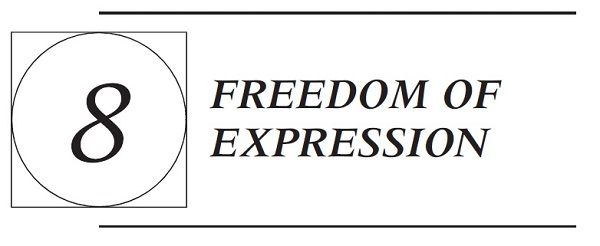

To what extent should public schools be able to limit students’ freedom of expression? This issue—first taken up by the Supreme Court in 1969—continues to challenge schools, students, parents, and communities. Indeed, the tremendous rise in students’ digital speech raises new questions about the extent to which schools can and should be policing student expression.
This chapter begins in Section A with the Supreme Court’s four student speech cases, which together create a basic framework for approaching students’ freedom of expression by articulating different standards depending on the type of speech at issue. As you will read, student speech that is transmitted through a school-sponsored vehicle can be restricted for any reason that is “reasonably related to legitimate pedagogical concerns,” while student speech that simply happens to occur at school is protected unless it will either substantially disrupt the work of the school or invade other students’ rights. Additionally, schools have great latitude to restrict student speech that is “offensively lewd or indecent” or that can “reasonably be regarded as encouraging illegal drug use.”
Taken together, these four cases illustrate the Court’s continuing effort to strike a balance between giving students room to express themselves while simultaneously enabling schools to maintain safe, effective learning environments. But Supreme Court justices have often disagreed over where that balance should lie. Moreover, the student speech framework emerging from these cases is far from comprehensive. Each of the four cases leaves important issues open for interpretation. And taken collectively, the cases say relatively little about schools’ power to police student speech that is harassing or bullying toward other members of the school community, and even less about schools’ jurisdiction once that speech originates off campus. This chapter explores those currently pressing issues in Sections B and C. The concluding section of this chapter, Section D, explores the related question of whether schools can impose dress codes and mandatory uniform policies on students.
Before turning to the Supreme Court’s four student speech cases, it is important to emphasize that some speech is unprotected in any setting. The Supreme Court has held that true threats, incitements to illegal activity, fighting words, obscenity, and child pornography are unprotected by the First
Amendment. In addition, certain speech can constitute a crime (such as blackmail) or a tort (such as defamation) under relevant law, in which case it is similarly unprotected. Public schools are certainly as free as any other governmental entity to prohibit such speech. The framework set forth below provides public schools with additional power to restrict student speech, even when the First Amendment would protect such speech outside the school context. As you read each of the cases, consider whether the Supreme Court struck the right balance between student expression and school exigencies.
A. THE SUPREME COURT’S STUDENT SPEECH FRAMEWORK
Tinker v. Des Moines Independent Community School District
393 U.S. 503 (1969)
Mr. Justice Fortas delivered the opinion of the Court.
Petitioner John F. Tinker, 15 years old, and petitioner Christopher Eckhardt, 16 years old, attended high schools in Des Moines, Iowa. Petitioner Mary Beth Tinker, John’s sister, was a 13-year-old student in junior high school.
In December 1965, a group of adults and students in Des Moines held a meeting at the Eckhardt home. The group determined to publicize their objections to the hostilities in Vietnam and their support for a truce by wearing black armbands during the holiday season and by fasting on December 16 and New Year’s Eve. Petitioners and their parents had previously engaged in similar activities, and they decided to participate in the program.
The principals of the Des Moines schools became aware of the plan to wear armbands. On December 14, 1965, they met and adopted a policy that any student wearing an armband to school would be asked to remove it, and if he refused he would be suspended until he returned without the armband. Petitioners were aware of the regulation that the school authorities adopted.
On December 16, Mary Beth and Christopher wore black armbands to their schools. John Tinker wore his armband the next day. They were all sent home and suspended from school until they would come back without their armbands. They did not return to school until after the planned period for wearing armbands had expired—that is, until after New Year’s Day.
This complaint was filed in the United States District Court by petitioners, through their fathers, under [42 U.S.C. §1983]. It prayed for an injunction restraining the respondent school officials and the respondent members of the board of directors of the school district from disciplining the petitioners, and it sought nominal damages. After an evidentiary hearing the District Court dismissed the complaint. It upheld the constitutionality of the school authorities’ action on the ground that it was reasonable in order to prevent disturbance of school discipline. The court referred to but expressly declined to follow the Fifth
Circuit’s holding in a similar case that the wearing of symbols like the armbands cannot be prohibited unless it “materially and substantially interfere[s] with the requirements of appropriate discipline in the operation of the school.” On appeal, the Court of Appeals for the Eighth Circuit considered the case en banc. The court was equally divided, and the District Court’s decision was accordingly affirmed, without opinion. We granted certiorari.
I
The District Court recognized that the wearing of an armband for the purpose of expressing certain views is the type of symbolic act that is within the Free Speech Clause. As we shall discuss, the wearing of armbands in the circumstances of this case was entirely divorced from actually or potentially disruptive conduct by those participating in it. It was closely akin to “pure speech” which, we have repeatedly held, is entitled to comprehensive protection under the First Amendment.
First Amendment rights, applied in light of the special characteristics of the school environment, are available to teachers and students. It can hardly be argued that either students or teachers shed their constitutional rights to freedom of speech or expression at the schoolhouse gate. This has been the unmistakable holding of this Court for almost 50 years. In Meyer v. Nebraska, and Bartels v. Iowa, this Court, in opinions by Mr. Justice McReynolds, held that the Due Process Clause of the Fourteenth Amendment prevents States from forbidding the teaching of a foreign language to young students.
In West Virginia v. Barnette, supra, this Court held that under the First Amendment, the student in public school may not be compelled to salute the flag. Speaking through Mr. Justice Jackson, the Court said:
The Fourteenth Amendment, as now applied to the States, protects the citizen against the State itself and all of its creatures—Boards of Education not excepted. These have, of course, important, delicate, and highly discretionary functions, but none that they may not perform within the limits of the Bill of Rights. That they are educating the young for citizenship is reason for scrupulous protection of Constitutional freedoms of the individual, if we are not to strangle the free mind at its source and teach youth to discount important principles of our government as mere platitudes.
On the other hand, the Court has repeatedly emphasized the need for affirming the comprehensive authority of the States and of school officials, consistent with fundamental constitutional safeguards, to prescribe and control conduct in the schools. Our problem lies in the area where students in the exercise of First Amendment rights collide with the rules of the school authorities.
II
The problem posed by the present case does not relate to regulation of the length of skirts or the type of clothing, to hair style, or deportment. It does not concern aggressive, disruptive action or even group demonstrations. Our problem involves direct, primary First Amendment rights akin to “pure speech.”
The school officials banned and sought to punish petitioners for a silent, passive expression of opinion, unaccompanied by any disorder or disturbance on the part of petitioners. There is here no evidence whatever of petitioners’ interference, actual or nascent, with the schools’ work or of collision with the rights of other students to be secure and to be let alone. Accordingly, this case does not concern speech or action that intrudes upon the work of the schools or the rights of other students.
Only a few of the 18,000 students in the school system wore the black armbands. Only five students were suspended for wearing them. There is no indication that the work of the schools or any class was disrupted. Outside the classrooms, a few students made hostile remarks to the children wearing armbands, but there were no threats or acts of violence on school premises.
The District Court concluded that the action of the school authorities was reasonable because it was based upon their fear of a disturbance from the wearing of the armbands. But, in our system, undifferentiated fear or apprehension of disturbance is not enough to overcome the right to freedom of expression. Any departure from absolute regimentation may cause trouble. Any variation from the majority’s opinion may inspire fear. Any word spoken, in class, in the lunchroom, or on the campus, that deviates from the views of another person may start an argument or cause a disturbance. But our Constitution says we must take this risk.
In order for the State in the person of school officials to justify prohibition of a particular expression of opinion, it must be able to show that its action was caused by something more than a mere desire to avoid the discomfort and unpleasantness that always accompany an unpopular viewpoint. Certainly where there is no finding and no showing that engaging in the forbidden conduct would “materially and substantially interfere with the requirements of appropriate discipline in the operation of the school,” the prohibition cannot be sustained.
In the present case, the District Court made no such finding, and our independent examination of the record fails to yield evidence that the school authorities had reason to anticipate that the wearing of the armbands would substantially interfere with the work of the school or impinge upon the rights of other students. Even an official memorandum prepared after the suspension that listed the reasons for the ban on wearing the armbands made no reference to the anticipation of such disruption.1
On the contrary, the action of the school authorities appears to have been based upon an urgent wish to avoid the controversy which might result from the expression, even by the silent symbol of armbands, of opposition to this Nation’s part in the conflagration in Vietnam. It is revealing, in this respect, that the meeting at which the school principals decided to issue the contested regulation was called in response to a student’s statement to the journalism teacher in one of the schools that he wanted to write an article on Vietnam and have it published in the school paper. (The student was dissuaded.)
It is also relevant that the school authorities did not purport to prohibit the wearing of all symbols of political or controversial significance. The record shows that students in some of the schools wore buttons relating to national political campaigns, and some even wore the Iron Cross, traditionally a symbol of Nazism. The order prohibiting the wearing of armbands did not extend to these. Instead, a particular symbol—black armbands worn to exhibit opposition to this Nation’s involvement in Vietnam—was singled out for prohibition. Clearly, the prohibition of expression of one particular opinion, at least without evidence that it is necessary to avoid material and substantial interference with schoolwork or discipline, is not constitutionally permissible.
In our system, state-operated schools may not be enclaves of totalitarianism. School officials do not possess absolute authority over their students. Students in school as well as out of school are “persons” under our Constitution. They are possessed of fundamental rights which the State must respect, just as they themselves must respect their obligations to the State. In our system, students may not be regarded as closed-circuit recipients of only that which the State chooses to communicate. They may not be confined to the expression of those sentiments that are officially approved. In the absence of a specific showing of constitutionally valid reasons to regulate their speech, students are entitled to freedom of expression of their views.
The principal use to which the schools are dedicated is to accommodate students during prescribed hours for the purpose of certain types of activities. Among those activities is personal intercommunication among the students. This is not only an inevitable part of the process of attending school; it is also an important part of the educational process. A student’s rights, therefore, do not embrace merely the classroom hours. When he is in the cafeteria, or on the playing field, or on the campus during the authorized hours, he may express his opinions, even on controversial subjects like the conflict in Vietnam, if he does so without “materially and substantially interfer[ing] with the requirements of appropriate discipline in the operation of the school” and without colliding with the rights of others. But conduct by the student, in class or out of it, which for any reason—whether it stems from time, place, or type of behavior—materially disrupts classwork or involves substantial disorder or invasion of the rights of others is, of course, not immunized by the constitutional guarantee of freedom of speech.
If a regulation were adopted by school officials forbidding discussion of the Vietnam conflict, or the expression by any student of opposition to it anywhere on school property except as part of a prescribed classroom exercise, it would be obvious that the regulation would violate the constitutional rights of students, at
least if it could not be justified by a showing that the students’ activities would materially and substantially disrupt the work and discipline of the school. In the circumstances of the present case, the prohibition of the silent, passive “witness of the armbands,” as one of the children called it, is no less offensive to the Constitution’s guarantees.
As we have discussed, the record does not demonstrate any facts which might reasonably have led school authorities to forecast substantial disruption of or material interference with school activities, and no disturbances or disorders on the school premises in fact occurred. These petitioners merely went about their ordained rounds in school. Their deviation consisted only in wearing on their sleeve a band of black cloth, not more than two inches wide. They wore it to exhibit their disapproval of the Vietnam hostilities and their advocacy of a truce, to make their views known, and, by their example, to influence others to adopt them. They neither interrupted school activities nor sought to intrude in the school affairs or the lives of others. They caused discussion outside of the classrooms, but no interference with work and no disorder. In the circumstances, our Constitution does not permit officials of the State to deny their form of expression.
Mr. Justice Black, dissenting.
While the record does not show that any of these armband students shouted, used profane language, or were violent in any manner, detailed testimony by some of them shows their armbands caused comments, warnings by other students, the poking of fun at them, and a warning by an older football player that other, nonprotesting students had better let them alone. There is also evidence that a teacher of mathematics had his lesson period practically “wrecked” chiefly by disputes with Mary Beth Tinker, who wore her armband for her “demonstration.” Even a casual reading of the record shows that this armband did divert students’ minds from their regular lessons, and that talk, comments, etc., made John Tinker “self-conscious” in attending school with his armband. While the absence of obscene remarks or boisterous and loud disorder perhaps justifies the Court’s statement that the few armband students did not actually “disrupt” the classwork, I think the record overwhelmingly shows that the armbands did exactly what the elected school officials and principals foresaw they would, that is, took the students’ minds off their classwork and diverted them to thoughts about the highly emotional subject of the Vietnam war. And I repeat that if the time has come when pupils of state-supported schools, kindergartens, grammar schools, or high schools, can defy and flout orders of school officials to keep their minds on their own schoolwork, it is the beginning of a new revolutionary era of permissiveness in this country fostered by the judiciary. The next logical step, it appears to me, would be to hold unconstitutional laws that bar pupils under 21 or 18 from voting, or from being elected members of the boards of education.
In my view, teachers in state-controlled public schools are hired to teach there. Nor are public school students sent to the schools at public expense to broadcast political or any other views to educate and inform the public. The original idea of schools, which I do not believe is yet abandoned as worthless or out of date, was that children had not yet reached the point of experience and wisdom which enabled them to teach all of their elders. It may be that the Nation
has outworn the old-fashioned slogan that “children are to be seen not heard,” but one may, I hope, be permitted to harbor the thought that taxpayers send children to school on the premise that at their age they need to learn, not teach.
NOTES AND QUESTIONS
1. The Tinker Court indicated that if the students’ armbands had threatened to either “substantially interfere with the work of the school or impinge upon the rights of other students,” then the school would have been justified in restricting them. Here, it readily concluded that neither of these two prongs were met. But what would qualify as a substantial interference or as an invasion of students’ rights?
In upholding student speech restrictions, most courts have focused on Tinker’s first prong, often called the “substantial interference” or “material disruption” prong. For example, courts have frequently upheld school bans on the Confederate flag on grounds that such displays would substantially disrupt the school environment, particularly in schools with histories of racial tension. See, e.g., Defoe v. Spiva, 625 F.3d 324 (6th Cir. 2010); A.M. ex rel. McAllum v. Cash, 585 F.3d 314 (5th Cir. 2009); B.W.A. v. Farmington R-7 Sch. Dist., 554 F.3d 734 (8th Cir. 2009); cf. Sypniewski v. Warren Hills Reg’l Bd. of Educ., 307 F.3d 243 (3d Cir. 2002) (holding that although school facing racial tension was justified in banning displays of the Confederate flag, it was not justified in banning a student T-shirt that listed “Top 10 reasons you might be a Redneck Sports Fan” because there was insufficient evidence regarding “the direct association of the term ‘redneck’ with the racial hostility and the troublemakers” and the shirt could not be seen as “amounting to a promotion of values consistent with the items and activities that had caused racial unrest”).
The “material disruption” basis for restricting student speech can run into tension with the “heckler’s veto” doctrine—i.e., the notion that the First Amendment does not permit the government to silence messages simply because of the audience’s likely negative reaction. This tension came to the surface in Dariano v. Morgan Hill Unified School Dist., 767 F.3d 764 (9th Cir. 2014). There, during the school’s Cinco de Mayo celebration, a group of Caucasian students wore American flag shirts to school. The school had a history of violence—some of which had occurred along racial lines—and during the previous year’s Cinco de Mayo celebration, an altercation had occurred between a group of predominantly Caucasian students and a group of Mexican students. Given that history, the principal decided to order the students wearing American flag shirts to remove them or turn them inside out. The students acknowledged that their attire was putting them at risk for violence, but still sought to wear the shirts, and ultimately chose to take an excused absence for the day. When they returned, they received numerous threats from other students. They later sued, alleging that the school’s restriction of their shirts had violated the First Amendment. The Ninth Circuit ultimately ruled against them, explaining that the school’s actions stemmed from reasonable concerns for student safety. However, several judges unsuccessfully sought an en banc rehearing of the case, warning
that the panel had “open[ed] the door to the suppression of any viewpoint opposed by a vocal and violent band of students.”
2. Courts have also used Tinker’s material disruption prong to uphold speech restrictions on student speech that is arguably threatening, regardless of whether the speech could actually qualify as a “true threat” that is altogether unprotected by the First Amendment. See, e.g., Cuff v. Valley Cent. Sch. Dist., 677 F.3d 109 (2d Cir. 2012) (upholding school suspension of fifth grader who drew a picture depicting an astronaut and expressing a desire to blow up the school); see also R. George Wright, Symposium: Doubtful Threats and the Limits of Student Speech Rights, 42 U.C. Davis. L. Rev. 679 (2009). One open question is whether a widespread material disruption is necessary to satisfy this prong or whether significant disruption of even a single student’s education is enough.
3. Courts have invoked Tinker’s “invasion of rights” prong far less often and have not reached consensus as to what it means. In Harper v. Poway Unified School District, discussed in Section B, the Ninth Circuit used this prong to uphold a school’s suppression of a student T-shirt with an antigay message, holding that “[p]ublic school students who may be injured by verbal assaults on the basis of a core identifying characteristic such as race, religion, or sexual orientation, have a right to be free from such attacks while on school campuses.” But the Harper dissent interpreted this prong far more narrowly, arguing that “the ‘rights of others’ language in Tinker can only refer to traditional rights, such as those against assault, defamation, invasion of privacy, extortion and blackmail, whose interplay with the First Amendment is well established.” The lack of clarity on this issue—combined with the uncertainty as to whether disruption of a single student’s education is enough to satisfy Tinker’s first prong—raises significant questions about the extent to which schools can restrict student speech that is hurtful to other students, as explored in more detail in Section B.
4. How did the Tinker Court come up with this two-pronged standard? Kristi Bowman explains that although “[l]ooking at Supreme Court precedent alone, it would seem as though the Tinker tests were created out of whole cloth,” in fact its approach—in particular, its “material disruption” prong—traces back to lower court decisions involving student speech that supported the civil rights movement. Kristi L. Bowman, The Civil Rights Roots of Tinker’s Disruption Tests, 58 Am. U. L. Rev. 1129 (2009).
5. Tinker emphasizes that a “reasonable forecast” is all that schools need to restrict student speech; they are not required to wait until a material disruption or invasion of rights has already occurred. At the same time, Tinker states that “undifferentiated fear or apprehension of disturbance is not enough.” What, then, qualifies as a sufficiently reasonable forecast? Consider the following scenario (drawn from a real case): a student writes a poem entitled “Last Words,” written from the point of view of someone who previously shot 28 students in a classroom. He shows the poem to several of his friends and to his English teacher, who contacts other members of the school administration. The administration calls a community mental health crisis line, which dispatches deputy sheriffs to evaluate the student. They find no probable cause to commit him involuntarily, concluding that there are insufficient grounds to conclude that he is in imminent danger of seriously harming himself or others. Nonetheless, the principal decides
to temporarily expel him. Was this a violation of the student’s First Amendment rights?
No, said the Ninth Circuit in Lavine v. Blaine School District, 257 F.3d 981 (9th Cir. 2001). The court stated that even though “in retrospect, it may appear that…the school overreacted,” school officials have “a duty to prevent the occurrence of disturbances” and “[f]orecasting disruption is unmistakably difficult to do.” The court went on to state that under Tinker, it would look at the “totality of the relevant facts” to determine whether there was enough to “reasonably lead schools to forecast substantial disruption,” and that here, other facts about the student—including his past history of disciplinary problems—justified the school’s behavior.
6. Should the method of a school’s speech restriction inform the substantial disruption analysis under Tinker? After all, some speech restrictions take the form of punishment, while others solely involve suppression. See, e.g., Emily Gold Waldman, Regulating Student Speech: Suppression versus Punishment, 85 Ind. L.J. 1113 (2010). The Ninth Circuit emphasized this distinction in Dariano, discussed above in Note 1, stating that the “school’s actions presciently avoided an altercation…[the] officials restricted the wearing of certain clothing, but did not punish the students.” Dariano, 767 F.3d 764, 777 (9th Cir. 2014).
Additionally, even within the “punishment spectrum,” schools sometimes stop short of suspension, and instead impose a punishment that is precisely tailored to the disruption that supposedly occurred. In several cases involving student-athletes, for instance, students who have spoken out about their coaches have been thrown off their teams. Courts have divided over whether, in such cases, it is enough for the school to show that the student’s speech risked substantially disrupting the team, even though there was no risk of substantial disruption to the school as a whole. Compare Lowery v. Euverard, 497 F.3d 584 (6th Cir. 2007) (holding that students who refused to apologize to a football coach for circulating a critical petition about him could be constitutionally dismissed from the team because “the petition was a direct challenge to [the coach’s] authority, and undermined his ability to lead the team”), with Pinard v. Claskanie Sch. Dist., 467 F.3d 755 (9th Cir. 2006) (holding that it would be unconstitutional for students to be dismissed from a basketball team in retaliation for their circulation of a petition requesting the coach’s resignation). Similarly, if a member of the student council crudely disagrees with school administrators and is not allowed to run for elective office as a result, is it enough for the school to show that her speech undermined the functioning of student government? See Doninger v. Niehoff, 527 F.3d 41 (2d Cir. 2008) (stating that school did not violate First Amendment by not letting student council secretary run for reelection after she called school administrators “douchebags” on her blog, because her conduct risked “frustration of the proper operation of [the school’s] student government and undermining of the values that student government, as an extracurricular activity, is designed to promote”).
What are the benefits and costs of such a sliding-scale approach to Tinker’s substantial disruption test?
The student speech at issue in Tinker was, quite clearly, core political speech. Does, and should, the analysis differ when the student speech lacks political content? As you will see, the next case in the Court’s student speech “quartet,” presented below, involves speech raises but does not fully answer this question. Throughout this chapter’s cases, you will notice recurring questions about the importance of whether student speech is political in some way.
Bethel School District No. 403 v. Fraser, a Minor
478 U.S. 675 (1986)
Chief Justice Burger delivered the opinion of the Court.
We granted certiorari to decide whether the First Amendment prevents a school district from disciplining a high school student for giving a lewd speech at a school assembly.
I
A
On April 26, 1983, respondent Matthew N. Fraser, a student at Bethel High School in Pierce County, Washington, delivered a speech nominating a fellow student for student elective office. Approximately 600 high school students, many of whom were 14-year-olds, attended the assembly. Students were required to attend the assembly or to report to the study hall. The assembly was part of a school-sponsored educational program in self-government. Students who elected not to attend the assembly were required to report to study hall. During the entire speech, Fraser referred to his candidate in terms of an elaborate, graphic, and explicit sexual metaphor.
Two of Fraser’s teachers, with whom he discussed the contents of his speech in advance, informed him that the speech was “inappropriate and that he probably should not deliver it,” and that his delivery of the speech might have “severe consequences.”
During Fraser’s delivery of the speech, a school counselor observed the reaction of students to the speech. Some students hooted and yelled; some by gestures graphically simulated the sexual activities pointedly alluded to in respondent’s speech. Other students appeared to be bewildered and embarrassed by the speech. One teacher reported that on the day following the speech, she found it necessary to forgo a portion of the scheduled class lesson in order to discuss the speech with the class.
A Bethel High School disciplinary rule prohibiting the use of obscene language in the school provides:
Conduct which materially and substantially interferes with the educational process is prohibited, including the use of obscene, profane language or gestures.
The morning after the assembly, the Assistant Principal called Fraser into her office and notified him that the school considered his speech to have been a
violation of this rule. Fraser was presented with copies of five letters submitted by teachers, describing his conduct at the assembly; he was given a chance to explain his conduct, and he admitted to having given the speech described and that he deliberately used sexual innuendo in the speech. Fraser was then informed that he would be suspended for three days, and that his name would be removed from the list of candidates for graduation speaker at the school’s commencement exercises.
Fraser sought review of this disciplinary action through the School District’s grievance procedures. [He] served two days of his suspension, and was allowed to return to school on the third day.
B
Respondent, by his father as guardian ad litem, then brought this action in the United States District Court for the Western District of Washington. Respondent alleged a violation of his First Amendment right to freedom of speech and sought both injunctive relief and monetary damages under 42 U.S.C. §1983. The District Court [ruled in his favor]. The Court of Appeals for the Ninth Circuit affirmed the judgment of the District Court, holding that respondent’s speech was indistinguishable from the protest armband in Tinker. We granted certiorari. We reverse.
II
This Court acknowledged in that students do not “shed their constitutional rights to freedom of speech or expression at the schoolhouse gate.” The Court of Appeals read that case as precluding any discipline of Fraser for indecent speech and lewd conduct in the school assembly. That court appears to have proceeded on the theory that the use of lewd and obscene speech in order to make what the speaker considered to be a point in a nominating speech for a fellow student was essentially the same as the wearing of an armband in Tinker as a form of protest or the expression of a political position.
The marked distinction between the political “message” of the armbands in Tinker and the sexual content of respondent’s speech in this case seems to have been given little weight by the Court of Appeals. In upholding the students’ right to engage in a nondisruptive, passive expression of a political viewpoint in Tinker, this Court was careful to note that the case did “not concern speech or action that intrudes upon the work of the schools or the rights of other students.”
It is against this background that we turn to consider the level of First Amendment protection accorded to Fraser’s utterances and actions before an official high school assembly attended by 600 students.
III
The role and purpose of the American public school system were well described by two historians, who stated: “[Public] education must prepare pupils for citizenship in the Republic.…It must inculcate the habits and manners of
civility as values in themselves conducive to happiness and as indispensable to the practice of self-government in the community and the nation.” C. Beard & M. Beard, New Basic History of the United States. In Ambach v. Norwick, we echoed the essence of this statement of the objectives of public education as the “[inculcation of] fundamental values necessary to the maintenance of a democratic political system.”
These fundamental values of “habits and manners of civility” essential to a democratic society must, of course, include tolerance of divergent political and religious views, even when the views expressed may be unpopular. But these “fundamental values” must also take into account consideration of the sensibilities of others, and, in the case of a school, the sensibilities of fellow students. The undoubted freedom to advocate unpopular and controversial views in schools and classrooms must be balanced against the society’s countervailing interest in teaching students the boundaries of socially appropriate behavior. Even the most heated political discourse in a democratic society requires consideration for the personal sensibilities of the other participants and audiences.
In our Nation’s legislative halls, where some of the most vigorous political debates in our society are carried on, there are rules prohibiting the use of expressions offensive to other participants in the debate. Can it be that what is proscribed in the halls of Congress is beyond the reach of school officials to regulate?
The First Amendment guarantees wide freedom in matters of adult public discourse. A sharply divided Court upheld the right to express an antidraft viewpoint in a public place, albeit in terms highly offensive to most citizens. See Cohen v. California. It does not follow, however, that simply because the use of an offensive form of expression may not be prohibited to adults making what the speaker considers a political point, the same latitude must be permitted to children in a public school.
Surely it is a highly appropriate function of public school education to prohibit the use of vulgar and offensive terms in public discourse. Indeed, the “fundamental values necessary to the maintenance of a democratic political system” disfavor the use of terms of debate highly offensive or highly threatening to others. Nothing in the Constitution prohibits the states from insisting that certain modes of expression are inappropriate and subject to sanctions. The inculcation of these values is truly the “work of the schools.” The determination of what manner of speech in the classroom or in school assembly is inappropriate properly rests with the school board.
The process of educating our youth for citizenship in public schools is not confined to books, the curriculum, and the civics class; schools must teach by example the shared values of a civilized social order. Consciously or otherwise, teachers—and indeed the older students—demonstrate the appropriate form of civil discourse and political expression by their conduct and deportment in and out of class. Inescapably, like parents, they are role models. The schools, as instruments of the state, may determine that the essential lessons of civil, mature conduct cannot be conveyed in a school that tolerates lewd, indecent, or offensive speech and conduct such as that indulged in by this confused boy.
The pervasive sexual innuendo in Fraser’s speech was plainly offensive to both teachers and students—indeed to any mature person. By glorifying male
sexuality, and in its verbal content, the speech was acutely insulting to teenage girl students. The speech could well be seriously damaging to its less mature audience, many of whom were only 14 years old and on the threshold of awareness of human sexuality. Some students were reported as bewildered by the speech and the reaction of mimicry it provoked.
This Court’s First Amendment jurisprudence has acknowledged limitations on the otherwise absolute interest of the speaker in reaching an unlimited audience where the speech is sexually explicit and the audience may include children. In Ginsberg v. New York, this Court upheld a New York statute banning the sale of sexually oriented material to minors, even though the material in question was entitled to First Amendment protection with respect to adults. And in addressing the question whether the First Amendment places any limit on the authority of public schools to remove books from a public school library, all Members of the Court, otherwise sharply divided, acknowledged that the school board has the authority to remove books that are vulgar. Board of Education v. Pico. These cases recognize the obvious concern on the part of parents, and school authorities acting in loco parentis, to protect children—especially in a captive audience—from exposure to sexually explicit, indecent, or lewd speech.
We hold that petitioner School District acted entirely within its permissible authority in imposing sanctions upon Fraser in response to his offensively lewd and indecent speech. Unlike the sanctions imposed on the students wearing armbands in Tinker, the penalties imposed in this case were unrelated to any political viewpoint. The First Amendment does not prevent the school officials from determining that to permit a vulgar and lewd speech such as respondent’s would undermine the school’s basic educational mission. A high school assembly or classroom is no place for a sexually explicit monologue directed towards an unsuspecting audience of teenage students. Accordingly, it was perfectly appropriate for the school to disassociate itself to make the point to the pupils that vulgar speech and lewd conduct is wholly inconsistent with the “fundamental values” of public school education.
IV
Respondent contends that the circumstances of his suspension violated due process because he had no way of knowing that the delivery of the speech in question would subject him to disciplinary sanctions. This argument is wholly without merit. Given the school’s need to be able to impose disciplinary sanctions for a wide range of unanticipated conduct disruptive of the educational process, the school disciplinary rules need not be as detailed as a criminal code which imposes criminal sanctions. The school disciplinary rule proscribing “obscene” language and the prespeech admonitions of teachers gave adequate warning to Fraser that his lewd speech could subject him to sanctions.
Justice Brennan, concurring.
Respondent gave the following speech at a high school assembly in support of a candidate for student government office:
“‘I know a man who is firm—he’s firm in his pants, he’s firm in his shirt, his character is firm—but most…of all, his belief in you, the students of Bethel, is firm.
“‘Jeff Kuhlman is a man who takes his point and pounds it in. If necessary, he’ll take an issue and nail it to the wall. He doesn’t attack things in spurts—he drives hard, pushing and pushing until finally—he succeeds.
“‘Jeff is a man who will go to the very end—even the climax, for each and every one of you.
“‘So vote for Jeff for A. S. B. vice-president—he’ll never come between you and the best our high school can be.’” App. 47.
The Court, referring to these remarks as “obscene,” “vulgar,” “lewd,” and “offensively lewd,” concludes that school officials properly punished respondent for uttering the speech. Having read the full text of respondent’s remarks, I find it difficult to believe that it is the same speech the Court describes. To my mind, the most that can be said about respondent’s speech—and all that need be said—is that in light of the discretion school officials have to teach high school students how to conduct civil and effective public discourse, and to prevent disruption of school educational activities, it was not unconstitutional for school officials to conclude, under the circumstances of this case, that respondent’s remarks exceeded permissible limits. Thus, while I concur in the Court’s judgment, I write separately to express my understanding of the breadth of the Court’s holding.
The Court today reaffirms the unimpeachable proposition that students do not “‘shed their constitutional rights to freedom of speech or expression at the schoolhouse gate.’” If respondent had given the same speech outside of the school environment, he could not have been penalized simply because government officials considered his language to be inappropriate; the Court’s opinion does not suggest otherwise. Moreover, despite the Court’s characterizations, the language respondent used is far removed from the very narrow class of “obscene” speech which the Court has held is not protected by the First Amendment. It is true, however, that the State has interests in teaching high school students how to conduct civil and effective public discourse and in avoiding disruption of educational school activities. Thus, the Court holds that under certain circumstances, high school students may properly be reprimanded for giving a speech at a high school assembly which school officials conclude disrupted the school’s educational mission. Respondent’s speech may well have been protected had he given it in school but under different circumstances, where the school’s legitimate interests in teaching and maintaining civil public discourse were less weighty.
NOTES AND QUESTIONS
1. What is the “test” that emerges from Fraser? Rather than analyzing the case under Tinker’s two prongs, the Supreme Court instead stated that the “pervasive sexual innuendo in Fraser’s speech was plainly offensive to both teachers and students” and that the school was justified in punishing his “offensively
lewd and indecent speech.” Courts have struggled with the question of whether this standard encompasses all speech that can be considered plainly offensive, or whether it covers only plainly offensive speech of a sexual nature. Compare, e.g., Guiles v. Marineau, 461 F.3d 320, 328 (2d Cir. 2006) (suggesting that Fraser should cover only speech “containing sexual innuendo and profanity”), with Boroff v. Van Wert City Bd. of Educ., 220 F.3d 465 (6th Cir. 2000) (approving district court’s conclusion that Fraser permitted a school to prohibit student from wearing a Marilyn Manson T-shirt that depicted a three-faced Jesus and the words “See No Truth. Hear No Truth. Speak No Truth.” on the front, and the word “BELIEVE” on the back, reasoning that the Fraser Court gave schools the “authority to determine what manner of speech in the classroom or in school is appropriate”). Which interpretation do you find more convincing?
2. Further questions about the Fraser standard have stemmed from the majority’s statement that “the First Amendment does not prevent the school officials from determining that to permit a vulgar and lewd speech such as respondent’s would undermine the school’s basic educational mission.” Does this mean that school officials can restrict any student speech that they believe would undermine their school’s “basic educational mission”? Who gets to define that mission? You will notice that in Morse v. Frederick, which follows later in the chapter, one of the concurrences provided further interpretation of the “educational mission” language, emphasizing that it should not be construed too broadly.
3. If the Supreme Court had instead applied the Tinker test, do you think that the school’s response to Fraser’s speech could be upheld under either the material disruption or invasion of rights prong?
4. The Fraser Court emphasized the lack of political content in Fraser’s speech. How much of a role do you think this played in the Court’s decision? What if Fraser’s speech had included the same sexual content, but also a more clearly political message? The Third Circuit went en banc to consider that question in B.H. v. Easton Area School Dist., 725 F.3d 293 (3d Cir. 2013) (en banc). There, middle-school students sought to wear bracelets bearing the slogan “I  boobies! (KEEP A BREAST)” to school as part of a national breast-cancer-awareness campaign. In a 9-5 split, the court ruled that it was unconstitutional for the school to restrict the bracelets. The majority concluded that “Fraser does not permit a school to restrict ambiguously lewd speech that can also plausibly be interpreted as commenting on a social or political issue,” and that the bracelets were “ambiguously” rather than “plainly” lewd. The dissent, however, argued that the bracelets constituted “inappropriate sexual innuendo and double entrendre,” and could be restricted under Fraser.
boobies! (KEEP A BREAST)” to school as part of a national breast-cancer-awareness campaign. In a 9-5 split, the court ruled that it was unconstitutional for the school to restrict the bracelets. The majority concluded that “Fraser does not permit a school to restrict ambiguously lewd speech that can also plausibly be interpreted as commenting on a social or political issue,” and that the bracelets were “ambiguously” rather than “plainly” lewd. The dissent, however, argued that the bracelets constituted “inappropriate sexual innuendo and double entrendre,” and could be restricted under Fraser.
5. Notice that in Fraser, the Supreme Court introduced a second justification for why schools can restrict student speech that would be protected outside of the school context. While the Tinker Court emphasized a protective rationale—the need to protect other students and/or the larger school environment from harmful speech—the Fraser Court added an educational rationale to the mix. In several places in the opinion, the Court suggested that speech restrictions can themselves teach students about appropriate civil discourse. Do you find the Supreme Court’s protective and educational rationales for ratcheting down
students’ free speech rights convincing, both in the abstract and as applied to this case? You will find both rationales also present in the next student speech case, decided by the Supreme Court only about a year later: Hazelwood v. Kuhlmeier.
In Fraser, the Supreme Court touched on—but did not fully address the significance of—the fact that Fraser was delivering his speech at a school-sponsored assembly. In its next student speech case, the Court honed in on the distinction between student speech that is disseminated through a school-sponsored setting or vehicle and student speech that merely “happens to occur on the school premises.” As you read Hazelwood, consider whether this division of the student speech universe makes sense to you.
Hazelwood School District v. Kuhlmeier
484 U.S. 260 (1988)
Justice White delivered the opinion of the Court.
This case concerns the extent to which educators may exercise editorial control over the contents of a high school newspaper produced as part of the school’s journalism curriculum.
I
Petitioners are the Hazelwood School District in St. Louis County, Missouri; various school officials; Robert Eugene Reynolds, the principal of Hazelwood East High School; and Howard Emerson, a teacher in the school district. Respondents are three former Hazelwood East students who were staff members of Spectrum, the school newspaper. They contend that school officials violated their First Amendment rights by deleting two pages of articles from the May 13, 1983, issue of Spectrum.
Spectrum was written and edited by the Journalism II class at Hazelwood East. The newspaper was published every three weeks or so during the 1982-1983 school year. More than 4,500 copies of the newspaper were distributed during that year to students, school personnel, and members of the community.
The Board of Education allocated funds from its annual budget for the printing of Spectrum. These funds were supplemented by proceeds from sales of the newspaper.
The Journalism II course was taught by Robert Stergos for most of the 1982-1983 academic year. Stergos left Hazelwood East to take a job in private industry on April 29, 1983, when the May 13 edition of Spectrum was nearing completion, and petitioner Emerson took his place as newspaper adviser for the remaining weeks of the term.
The practice at Hazelwood East during the spring 1983 semester was for the journalism teacher to submit page proofs of each Spectrum issue to Principal Reynolds for his review prior to publication. On May 10, Emerson delivered the proofs of the May 13 edition to Reynolds, who objected to two of the articles scheduled to appear in that edition. One of the stories described three
Hazelwood East students’ experiences with pregnancy; the other discussed the impact of divorce on students at the school.
Reynolds was concerned that, although the pregnancy story used false names “to keep the identity of these girls a secret,” the pregnant students still might be identifiable from the text. He also believed that the article’s references to sexual activity and birth control were inappropriate for some of the younger students at the school. In addition, Reynolds was concerned that a student identified by name in the divorce story had complained that her father “wasn’t spending enough time with my mom, my sister and I” prior to the divorce, “was always out of town on business or out late playing cards with the guys,” and “always argued about everything” with her mother. Reynolds believed that the student’s parents should have been given an opportunity to respond to these remarks or to consent to their publication. He was unaware that Emerson had deleted the student’s name from the final version of the article.
Reynolds believed that there was no time to make the necessary changes in the stories before the scheduled press run and that the newspaper would not appear before the end of the school year if printing were delayed to any significant extent. He concluded that his only options under the circumstances were to publish a four-page newspaper instead of the planned six-page newspaper, eliminating the two pages on which the offending stories appeared, or to publish no newspaper at all. Accordingly, he directed Emerson to withhold from publication the two pages containing the stories on pregnancy and divorce.2 He informed his superiors of the decision, and they concurred.
Respondents subsequently commenced this action in the United States District Court for the Eastern District of Missouri seeking a declaration that their First Amendment rights had been violated, injunctive relief, and monetary damages. After a bench trial, the District Court denied an injunction, holding that no First Amendment violation had occurred.
The Court of Appeals for the Eighth Circuit reversed.
We granted certiorari, and we now reverse.
II
Students in the public schools do not “shed their constitutional rights to freedom of speech or expression at the schoolhouse gate.” They cannot be punished merely for expressing their personal views on the school premises—whether “in the cafeteria, or on the playing field, or on the campus during the authorized hours”—unless school authorities have reason to believe that such expression will “substantially interfere with the work of the school or impinge upon the rights of other students.”
We have nonetheless recognized that the First Amendment rights of students in the public schools “are not automatically coextensive with the rights of
adults in other settings,” Fraser, and must be “applied in light of the special characteristics of the school environment.” Tinker.
A
We deal first with the question whether Spectrum may appropriately be characterized as a forum for public expression. The public schools do not possess all of the attributes of streets, parks, and other traditional public forums that “time out of mind, have been used for purposes of assembly, communicating thoughts between citizens, and discussing public questions.” Hence, school facilities may be deemed to be public forums only if school authorities have “by policy or by practice” opened those facilities “for indiscriminate use by the general public,” or by some segment of the public, such as student organizations If the facilities have instead been reserved for other intended purposes, “communicative or otherwise,” then no public forum has been created, and school officials may impose reasonable restrictions on the speech of students, teachers, and other members of the school community.
The policy of school officials toward Spectrum was reflected in Hazelwood School Board Policy 348.51 and the Hazelwood East Curriculum Guide. Board Policy 348.51 provided that “[s]chool sponsored publications are developed within the adopted curriculum and its educational implications in regular classroom activities.” The Hazelwood East Curriculum Guide described the Journalism II course as a “laboratory situation in which the students publish the school newspaper applying skills they have learned in Journalism I.” The lessons that were to be learned from the Journalism II course, according to the Curriculum Guide, included development of journalistic skills under deadline pressure, “the legal, moral, and ethical restrictions imposed upon journalists within the school community,” and “responsibility and acceptance of criticism for articles of opinion.” Journalism II was taught by a faculty member during regular class hours. Students received grades and academic credit for their performance in the course.
School officials did not deviate in practice from their policy that production of Spectrum was to be part of the educational curriculum and a “regular classroom activit[y].” The District Court found that Robert Stergos, the journalism teacher during most of the 1982-1983 school year, “both had the authority to exercise and in fact exercised a great deal of control over Spectrum.” For example, Stergos selected the editors of the newspaper, scheduled publication dates, decided the number of pages for each issue, assigned story ideas to class members, advised students on the development of their stories, reviewed the use of quotations, edited stories, selected and edited the letters to the editor, and dealt with the printing company. Many of these decisions were made without consultation with the Journalism II students. The District Court thus found it “clear that Mr. Stergos was the final authority with respect to almost every aspect of the production and publication of Spectrum, including its content.” Ibid. Moreover, after each Spectrum issue had been finally approved by Stergos or his successor, the issue still had to be reviewed by Principal Reynolds prior to publication.
In sum, the evidence relied upon by the Court of Appeals fails to demonstrate the “clear intent to create a public forum,” that existed in cases in which
we found public forums to have been created. School officials did not evince either “by policy or by practice,” any intent to open the pages of Spectrum to “indiscriminate use,” ibid., by its student reporters and editors, or by the student body generally. Instead, they “reserve[d] the forum for its intended purpos[e],” as a supervised learning experience for journalism students. Accordingly, school officials were entitled to regulate the contents of Spectrum in any reasonable manner. It is this standard, rather than our decision in Tinker, that governs this case.
B
The question whether the First Amendment requires a school to tolerate particular student speech—the question that we addressed in Tinker—is different from the question whether the First Amendment requires a school affirmatively to promote particular student speech. The former question addresses educators’ ability to silence a student’s personal expression that happens to occur on the school premises. The latter question concerns educators’ authority over school-sponsored publications, theatrical productions, and other expressive activities that students, parents, and members of the public might reasonably perceive to bear the imprimatur of the school. These activities may fairly be characterized as part of the school curriculum, whether or not they occur in a traditional classroom setting, so long as they are supervised by faculty members and designed to impart particular knowledge or skills to student participants and audiences.
Educators are entitled to exercise greater control over this second form of student expression to assure that participants learn whatever lessons the activity is designed to teach, that readers or listeners are not exposed to material that may be inappropriate for their level of maturity, and that the views of the individual speaker are not erroneously attributed to the school. Hence, a school may in its capacity as publisher of a school newspaper or producer of a school play “disassociate itself,” Fraser, not only from speech that would “substantially interfere with [its] work…or impinge upon the rights of other students,” Tinker, but also from speech that is, for example, ungrammatical, poorly written, inadequately researched, biased or prejudiced, vulgar or profane, or unsuitable for immature audiences.A school must be able to set high standards for the student speech that is disseminated under its auspices—standards that may be higher than those demanded by some newspaper publishers or theatrical producers in the “real” world—and may refuse to disseminate student speech that does not meet those standards. In addition, a school must be able to take into account the emotional maturity of the intended audience in determining whether to disseminate student speech on potentially sensitive topics, which might range from the existence of Santa Claus in an elementary school setting to the particulars of teenage sexual activity in a high school setting. A school must also retain the authority to refuse to sponsor student speech that might reasonably be perceived to advocate drug or alcohol use, irresponsible sex, or conduct otherwise inconsistent with “the shared values of a civilized social order,” Fraser, or to associate the school with any position other than neutrality on matters of
political controversy. Otherwise, the schools would be unduly constrained from fulfilling their role as “a principal instrument in awakening the child to cultural values, in preparing him for later professional training, and in helping him to adjust normally to his environment.”
Accordingly, we conclude that the standard articulated in Tinker for determining when a school may punish student expression need not also be the standard for determining when a school may refuse to lend its name and resources to the dissemination of student expression. Instead, we hold that educators do not offend the First Amendment by exercising editorial control over the style and content of student speech in school-sponsored expressive activities so long as their actions are reasonably related to legitimate pedagogical concerns.
This standard is consistent with our oft-expressed view that the education of the Nation’s youth is primarily the responsibility of parents, teachers, and state and local school officials, and not of federal judges. It is only when the decision to censor a school-sponsored publication, theatrical production, or other vehicle of student expression has no valid educational purpose that the First Amendment is so “directly and sharply implicate[d],” ibid., as to require judicial intervention to protect students’ constitutional rights.
III
We also conclude that Principal Reynolds acted reasonably in requiring the deletion from the May 13 issue of Spectrum of the pregnancy article, the divorce article, and the remaining articles that were to appear on the same pages of the newspaper.
The initial paragraph of the pregnancy article declared that “[a]ll names have been changed to keep the identity of these girls a secret.” The principal concluded that the students’ anonymity was not adequately protected, however, given the other identifying information in the article and the small number of pregnant students at the school. Indeed, a teacher at the school credibly testified that she could positively identify at least one of the girls and possibly all three. It is likely that many students at Hazelwood East would have been at least as successful in identifying the girls. Reynolds therefore could reasonably have feared that the article violated whatever pledge of anonymity had been given to the pregnant students. In addition, he could reasonably have been concerned that the article was not sufficiently sensitive to the privacy interests of the students’ boyfriends and parents, who were discussed in the article but who were given no opportunity to consent to its publication or to offer a response. The article did not contain graphic accounts of sexual activity. The girls did comment in the article, however, concerning their sexual histories and their use or nonuse of birth control. It was not unreasonable for the principal to have concluded that such frank talk was inappropriate in a school-sponsored publication distributed to 14-year-old freshmen and presumably taken home to be read by students’ even younger brothers and sisters.
The student who was quoted by name in the version of the divorce article seen by Principal Reynolds made comments sharply critical of her father. The principal could reasonably have concluded that an individual publicly identified
as an inattentive parent—indeed, as one who chose “playing cards with the guys” over home and family—was entitled to an opportunity to defend himself as a matter of journalistic fairness.
Principal Reynolds testified credibly at trial that, at the time that he reviewed the proofs of the May 13 issue during an extended telephone conversation with Emerson, he believed that there was no time to make any changes in the articles, and that the newspaper had to be printed immediately or not at all. It is true that Reynolds did not verify whether the necessary modifications could still have been made in the articles, and that Emerson did not volunteer the information that printing could be delayed until the changes were made. We nonetheless agree with the District Court that the decision to excise the two pages containing the problematic articles was reasonable given the particular circumstances of this case. These circumstances included the very recent replacement of Stergos by Emerson, who may not have been entirely familiar with Spectrum editorial and production procedures, and the pressure felt by Reynolds to make an immediate decision so that students would not be deprived of the newspaper altogether.
In sum, we cannot reject as unreasonable Principal Reynolds’ conclusion that neither the pregnancy article nor the divorce article was suitable for publication in Spectrum. Reynolds could reasonably have concluded that the students who had written and edited these articles had not sufficiently mastered those portions of the Journalism II curriculum that pertained to the treatment of controversial issues and personal attacks, the need to protect the privacy of individuals whose most intimate concerns are to be revealed in the newspaper, and “the legal, moral, and ethical restrictions imposed upon journalists within [a] school community” that includes adolescent subjects and readers. Finally, we conclude that the principal’s decision to delete two pages of Spectrum, rather than to delete only the offending articles or to require that they be modified, was reasonable under the circumstances as he understood them. Accordingly, no violation of First Amendment rights occurred.
Justice Brennan, dissenting.
I would reject the Court’s rationale for abandoning Tinker in this case. The Court offers no more than an obscure tangle of three excuses to afford educators “greater control” over school-sponsored speech than the Tinker test would permit: the public educator’s prerogative to control curriculum; the pedagogical interest in shielding the high school audience from objectionable viewpoints and sensitive topics; and the school’s need to dissociate itself from student expression. None of the excuses, once disentangled, supports the distinction that the Court draws. Tinker fully addresses the first concern; the second is illegitimate; and the third is readily achievable through less oppressive means.
NOTES AND QUESTIONS
1. You may be curious about the actual text of the two articles in the Spectrum. Reproduced below are the divorce and pregnancy articles in full.
(The other articles on the two censored pages were entitled “Pregnancy Affects Many Teens Each Year,” “Teenage Marriages Face 75 percent Divorce Rate,” and “Runaways and Juvenile Delinquents.” As you read, the principal did not intentionally censor these other articles; they just fell on the same two pages as the ones that he found objectionable. The headline for the two-page spread was “Pressure Describes It All For Today’s Teenagers.”)
As you read the two articles, consider whether you think their censorship was reasonably related to legitimate pedagogical purposes.
Divorce’s Impact on Kids May Have Lifelong Effect By Shari Gordon
In the United States one marriage ends for every two that begin. The North County percentage of divorce is three marriages end out of four marriages that start.
There are more than two central characters in the painful drama of divorce. Children of divorced parents, literally millions of them, are torn by the end of their parents’ marriage.
What causes divorce? According to Mr. Ken Kerkhoff, social studies teacher some of the causes are:
- Poor dating habits that lead to marriage.
- Not enough variables in common.
- Lack of communication.
- Lack of desire or effort to make the marriage work.
Figures aren’t the whole story. The fact is that divorce has a psychological and sociological change on the child.
One junior commented on how the divorce occurred, “My dad didn’t make any money, so my mother divorced him.”
“My father was an alcoholic and he always came home drunk and my mom really couldn’t stand it any longer,” said another junior.
Diana Herbert, freshman, said “My dad wasn’t spending enough time with my mom, my sister and I. He was always out of town on business or out late playing cards with the guys. My parents always argued about everything.”
“In the beginning I thought I caused the problem, but now I realize it wasn’t me,” added Diana.
“I was only five when my parents got divorced,” said Susan Kiefer, junior. “I didn’t quite understand what the divorce between my parents really meant until about the age of seven. I understood that divorce meant my mother and father wouldn’t be together again.”
“It stinks!” exclaimed Jill Viola, junior. “They can, afterwards, remarry and start their lives over again, but their kids will always be caught in between.”
Of the 25 students I interviewed, 17 have parents that have remarried.
The feelings of divorce affects [sic] the kids for the rest of their lives, according to Mr. Kerkhoff. The effects of divorce on the kids lead to the following:
- Higher rate of absenteeism in school.
- Higher rate of trouble with school, officials and police.
- Higher rate of depression and insecurity.
- Run a higher risk of divorce themselves.
All of these are the latest findings in research on single parent homes.
Pregnancy Article: Individual Stories
Introduction: These stories are the personal accounts of three Hazelwood East students who became pregnant. All names have been changed to keep the identity of these girls a secret.
Terri: I am five months pregnant and very excited about having my baby. My husband is excited too. We both can’t wait until it’s born.
After the baby is born, which is in July, we are planning to move out of his house, when we save enough money. I am not going to be coming back to school right away (September) because the baby will only be two months old. I plan on coming back in January when the second semester begins.
When I first found out I was pregnant, I really was kind of shocked because I kept thinking about how I was going to tell my parents. I was also real happy. I just couldn’t believe I was going to have a baby. When I told Paul about the situation, he was really happy. At first I didn’t think he would be because I wasn’t sure if he really would want to take on the responsibility of being a father, but he was very happy. We talked about the baby and what we were going to do and we both wanted to get married. We had talked about marriage before, so we were both sure of what we were doing.
I had no pressures (to have sex). It was my own decision. We were going out four or five months before we had sex. I was on no kind of birth control pills. I really didn’t want to get them, not just so I could get pregnant. I don’t think I’d feel right taking them.
At first my parents were upset, especially my father, but now they’re both happy for me. I don’t have any regrets because I’m happy about the baby and I hope everything works out.
Patti: I didn’t think it could happen to me, but I knew I had to start making plans for me and my little one. I think Steven (my boyfriend) was more scared than me. He was away at college and when he came home we cried together and then accepted it.
At first both families were disappointed, but the third or fourth month, when the baby started to kick and move around, my boyfriend and I felt like expecting parents and we were very excited!
My parents really like my boyfriend. At first we all felt sort of uncomfortable around each other. Now boyfriend supports our baby totally (except for nursing) and my parents see he really does love us, so they’re happy. After I graduate this year, we’re getting married.
I can talk to my mother about anything but I couldn’t face her and tell her I was pregnant. I never thought that would happen to me.
My boyfriend and I have a beautiful relationship and it’s been that way since three years ago. [illegible text] I really do think the fugure looks good for both of us.…
I want to say to others that it isn’t easy and it takes a strong, willing person to handle it because it does mean giving up a lot of things. Secondly, if you’re not able to give your child…affection…, you won’t be a good parent. Lastly, be careful because the pill doesn’t always work. I know because it didn’t work for me.
This experience has made me a more responsible person. I feel that now I am a woman. If I could go back to last year, I would not get pregnant, but I have no regrets. We love our baby more than anything in the world (my boyfriend and I) because we created him! How could we not love him??? He’s so cute and innocent!
Julia: At first I was shocked. You always think “It won’t happen to me.” I was also scared because I did not know how everyone was going to handle it. But then, I started getting excited.
There was never really any pressure (to have sex), it was more of a mutual agreement. I think I was more curious than anything.
I had always planned on continuing school. There was never any doubt about that. I found that it wasn’t as hard as I thought it would be. I was fairly open about it and people seemed to accept it. Greg and I did not get married. We figured that these were not the best circumstances, so we decided to wait and see how things go. We are still planning on getting married when we are financially ready. I am also planning on going to college at least part time.
My parents have been great. They could not have been more [illegible] and helpful. They are doing everything they can for us and enjoy being “grandma and grandpa.” They have also made it clear it was my responsibility.
My parents (especially my mom) are willing to talk about sex, but I always feel very uncomfortable. I guess you never think about your parents doing things like that.
2. The Supreme Court’s public forum doctrine provides important background to the Hazelwood decision. As Hazelwood discusses in Part II.A, government property is divided into three categories for free speech purposes: traditional public forums, limited (or designated) public forums, and nonpublic forums. Traditional public forums—like streets and parks—are places that “have immemorially been held in trust for use of the public.” See, e.g., Perry Educ. Ass’n v. Perry Local Educators’ Ass’n, 460 U.S. 37, 45 (1983). There, content-based speech restrictions are subject to strict scrutiny, and content-neutral restrictions (i.e., those relating to the time, place, or manner of the speech) are permissible only if they are narrowly tailored to serve a significant government interest and leave open ample alternatives for communication. Id. Next, limited public forums consist of public property that the government has opened for use by the public as a place for expressive activity, but in some sort of limited capacity, often in terms of topic or attendance. Id. at 45-46 & n.7. There, the state can make content-based restrictions on speech to reserve the forum for the purpose for which it was opened, but such restrictions must be viewpoint-neutral and reasonable “in light of the purpose served by the forum.” Id.; see also Cornelius v. NAACP Legal Def. & Educ. Fund., Inc., 473 U.S. 788, 806 (1985). Finally, nonpublic forums refer to “public property which is not by tradition or designation a forum for public communication.” Perry, 460 U.S. at 46. The state can close such forums to speech provided that its regulation is reasonable and viewpoint-neutral—i.e., that the regulation is “not an effort to suppress expression merely because public officials oppose the speaker’s view.” Id.
The Hazelwood majority clearly found that the Spectrum was a nonpublic forum. But the Court then said that this meant that speech restrictions imposed by the school must be reasonable—without also addressing whether they must be viewpoint-neutral, as is usually required for nonpublic forums.
Whether Hazelwood implicitly requires viewpoint-neutrality has given rise to a significant circuit split. Compare Searcey v. Harris, 888 F.2d 1314, 1325 (11th Cir. 1989) (holding that if Hazelwood had meant to dispense with the viewpoint-neutrality requirement, it would have done so explicitly, and should thus be read as maintaining it); Planned Parenthood of S. Nev., Inc. v. Clark Cnty. Sch. Dist., 941 F.2d 817, 829 (9th Cir. 1991) (same); Peck v. Baldwinsville Cent. Sch. Dist., 426 F.3d 617 (2d Cir. 2005) (same), with Ward v. Hickey, 996 F.2d 448, 454 (1st Cir. 1993) (holding that Hazelwood “did not require that school regulation of school-sponsored speech be viewpoint neutral”); Fleming v. Jefferson Cnty. Sch. Dist. R-1, 298 F.3d 918 (10th Cir. 2002) (same). The Third and Sixth Circuits have also weighed in on this question, but ultimately retracted the opinions in which they addressed it, replacing them with en banc decisions that resolved the cases on other grounds. See C.H. ex rel. Z.H. v. Oliva, 195 F.3d 167, 173 (3d Cir. 1999), aff’d in part by an equally divided court, vacated in part, 226 F.3d 198 (3d Cir. 2000) (initially concluding that Hazelwood allowed viewpoint discrimination, but later vacating the decision in which that conclusion was reached); Kincaid v. Gibson, 191 F.3d 719, 727 (6th Cir.), vacated, 197 F.3d 828 (6th Cir. 1999) (initially concluding that Hazelwood prohibited viewpoint discrimination, but subsequently vacated the decision in which that conclusion was reached).
Commentators have also divided over this question. Compare, e.g., Katie Hammett, Commentary, School Shootings, Ceramic Tiles, and Hazelwood: The Continuing Lessons of the Columbine Tragedy, 55 Ala. L. Rev. 393 (2004) (arguing that Hazelwood requires viewpoint-neutrality); Susannah Barton Tobin, Note, Divining Hazelwood: The Need for a Viewpoint-Neutrality Requirement in School Speech Cases, 39 Harv. C.R.-C.L. L. Rev. 217 (2004) (same); with Emily Gold Waldman, Returning to Hazelwood’s Core: A New Approach to Restrictions on School-Sponsored Speech, 60 Fla. L. Rev. 63 (2008) (arguing that Hazelwood, at least as applied to student speech, does not require viewpoint-neutrality); Janna J. Annest, Comment, Only the News That’s Fit to Print: The Effect of Hazelwood on the First Amendment Viewpoint-Neutrality Requirement in Public School-Sponsored Forums, 77 Wash. L. Rev. 1227 (2002) (same).
3. The Hazelwood majority concluded that “the principal’s decision to delete two pages of Spectrum, rather than to delete only the offending articles or to require that they be modified, was reasonable under the circumstances as he understood them.” By contrast, Justice Brennan’s dissent described the principal as having committed “brutal censorship.” Do you agree with the majority that the principal’s approach was reasonable here?
4. Some courts have applied Hazelwood’s “reasonably related to legitimate pedagogical concerns” standard to contexts beyond student speech, including speech by outside entities on school property and textbook selection. See, e.g., Planned Parenthood of S. Nev., Inc. v. Clark Cnty. Sch. Dist., 941 F.2d 817, 819 (9th Cir. 1991) (applying Hazelwood to speech of organization that wanted to purchase advertisements in school yearbooks and other publications); Virgil v. Sch. Bd., 862 F.2d 1517, 1521 (11th Cir. 1989) (applying Hazelwood to textbook selection). Several have even applied Hazelwood’s standard to school restrictions on teachers’ in-class speech, see, e.g., Ward v. Hickey, 996 F.2d 448 (1st Cir. 1993), while others have instead applied the Supreme Court’s general public employee framework to teacher speech, see, e.g., Boring v. Buncombe Cnty. Bd. of Educ., 136 F.3d 364 (4th Cir. 1998) (en banc). These issues are discussed further in Chapter 10. Emily Gold Waldman asserts that “the extension of Hazelwood beyond the student speech context has severely muddled the question whether Hazelwood permits viewpoint-based speech restrictions,” arguing that Hazelwood should be applied only in student speech cases because “its rationale and approach are uniquely suited to that context.” Waldman, supra, at 65-66.
5. In response to Hazelwood, some states adopted laws providing stronger statutory protection to student journalists. For example, Massachusetts law states that “the right of students to freedom of expression in the public schools of the commonwealth shall not be abridged, provided that such right shall not cause any disruption or disorder within the school. Freedom of expression shall include without limitation, the rights and responsibilities of students, collectively and individually, (a) to express their views through speech and symbols, (b) to write, publish and disseminate their views, (c) to assemble peaceably on school property for the purpose of expressing their opinions.” Mass. Gen. Laws Ann. ch. 71, §82 (2012). Prior to Hazelwood, this statute existed in Massachusetts but was only a “local options statute” applying to towns that affirmatively adopted it; in Hazelwood’s aftermath, Massachusetts made the statute
mandatory. See Pyle by & Through Pyle v. South Hadley Sch. Comm., 861 F. Supp. 157 (D. Mass 1994); Pyle v. Sch. Comm., 423 Mass. 283 (1996).
After Hazelwood, nearly 20 years passed before the Supreme Court again heard a student speech case. In the interim, the rise of digital speech and social networking technologies raised a major new question: what authority do schools have to regulate students’ off-campus speech? Although some people initially thought that Morse v. Frederick might answer that question, the Supreme Court did not go down that route, as you will see below. Morse does, however, provide some insight into several of the other questions discussed above, such as the meaning of Fraser’s “plainly offensive” standard, the permissibility of viewpoint-based speech restrictions in schools, and the significance of whether there is political content to a student’s speech. It is worth circling back to these issues after reading Morse.
Morse v. Frederick
551 U.S. 393 (2007)
Chief Justice Roberts delivered the opinion of the Court.
At a school-sanctioned and school-supervised event, a high school principal saw some of her students unfurl a large banner conveying a message she reasonably regarded as promoting illegal drug use. Consistent with established school policy prohibiting such messages at school events, the principal directed the students to take down the banner. One student—among those who had brought the banner to the event—refused to do so. The principal confiscated the banner and later suspended the student. The Ninth Circuit held that the principal’s actions violated the First Amendment, and that the student could sue the principal for damages.
Our cases make clear that students do not “shed their constitutional rights to freedom of speech or expression at the schoolhouse gate.” At the same time, we have held that “the constitutional rights of students in public school are not automatically coextensive with the rights of adults in other settings,” and that the rights of students “must be ‘applied in light of the special characteristics of the school environment.’” Consistent with these principles, we hold that schools may take steps to safeguard those entrusted to their care from speech that can reasonably be regarded as encouraging illegal drug use. We conclude that the school officials in this case did not violate the First Amendment by confiscating the pro-drug banner and suspending the student responsible for it.
I
On January 24, 2002, the Olympic Torch Relay passed through Juneau, Alaska, on its way to the winter games in Salt Lake City, Utah. The torchbearers were to proceed along a street in front of Juneau-Douglas High School (JDHS) while school was in session. Petitioner Deborah Morse, the school principal, decided to permit staff and students to participate in the Torch Relay as an approved social event or class trip. Students were allowed to leave class to
observe the relay from either side of the street. Teachers and administrative officials monitored the students’ actions.
Respondent Joseph Frederick, a JDHS senior, was late to school that day. When he arrived, he joined his friends (all but one of whom were JDHS students) across the street from the school to watch the event. Not all the students waited patiently. Some became rambunctious, throwing plastic cola bottles and snowballs and scuffling with their classmates. As the torchbearers and camera crews passed by, Frederick and his friends unfurled a 14-foot banner bearing the phrase: “BONG HiTS 4 JESUS.” The large banner was easily readable by the students on the other side of the street.
Principal Morse immediately crossed the street and demanded that the banner be taken down. Everyone but Frederick complied. Morse confiscated the banner and told Frederick to report to her office, where she suspended him for 10 days. Morse later explained that she told Frederick to take the banner down because she thought it encouraged illegal drug use, in violation of established school policy. Juneau School Board Policy No. 5520 states: “The Board specifically prohibits any assembly or public expression that…advocates the use of substances that are illegal to minors.…” In addition, Juneau School Board Policy No. 5850 subjects “[p]upils who participate in approved social events and class trips” to the same student conduct rules that apply during the regular school program.
Frederick administratively appealed his suspension, but the Juneau School District Superintendent upheld it. The Juneau School District Board of Education upheld the suspension.
Frederick then filed suit under 42 U.S.C. §1983, alleging that the school board and Morse had violated his First Amendment rights. He sought declaratory and injunctive relief, unspecified compensatory damages, punitive damages, and attorney’s fees. [The District Court granted summary judgment in favor of the school board and Morse.]
The Ninth Circuit reversed. Deciding that Frederick acted during a “school-authorized activit[y],” and “proceed[ing] on the basis that the banner expressed a positive sentiment about marijuana use,” the court nonetheless found a violation of Frederick’s First Amendment rights because the school punished Frederick without demonstrating that his speech gave rise to a “risk of substantial disruption.” The court further concluded that Frederick’s right to display his banner was so “clearly established” that a reasonable principal in Morse’s position would have understood that her actions were unconstitutional, and that Morse was therefore not entitled to qualified immunity.
We granted certiorari on two questions: whether Frederick had a First Amendment right to wield his banner, and, if so, whether that right was so clearly established that the principal may be held liable for damages. We resolve the first question against Frederick, and therefore have no occasion to reach the second.
II
At the outset, we reject Frederick’s argument that this is not a school speech case—as has every other authority to address the question. The event occurred
during normal school hours. It was sanctioned by Principal Morse “as an approved social event or class trip,” and the school district’s rules expressly provide that pupils in “approved social events and class trips are subject to district rules for student conduct.” Teachers and administrators were interspersed among the students and charged with supervising them. The high school band and cheerleaders performed. Frederick, standing among other JDHS students across the street from the school, directed his banner toward the school, making it plainly visible to most students. Under these circumstances, we agree with the superintendent that Frederick cannot “stand in the midst of his fellow students, during school hours, at a school-sanctioned activity and claim he is not at school.” There is some uncertainty at the outer boundaries as to when courts should apply school speech precedents, but not on these facts.
III
The message on Frederick’s banner is cryptic. It is no doubt offensive to some, perhaps amusing to others. To still others, it probably means nothing at all. Frederick himself claimed “that the words were just nonsense meant to attract television cameras.” But Principal Morse thought the banner would be interpreted by those viewing it as promoting illegal drug use, and that interpretation is plainly a reasonable one.
As Morse later explained in a declaration, when she saw the sign, she thought that “the reference to a ‘bong hit’ would be widely understood by high school students and others as referring to smoking marijuana.” She further believed that “display of the banner would be construed by students, District personnel, parents and others witnessing the display of the banner, as advocating or promoting illegal drug use”—in violation of school policy. (“I told Frederick and the other members of his group to put the banner down because I felt that it violated the [school] policy against displaying…material that advertises or promotes use of illegal drugs”).
We agree with Morse. At least two interpretations of the words on the banner demonstrate that the sign advocated the use of illegal drugs. First, the phrase could be interpreted as an imperative: “[Take] bong hits…”—a message equivalent, as Morse explained in her declaration, to “smoke marijuana” or “use an illegal drug.” Alternatively, the phrase could be viewed as celebrating drug use—“bong hits [are a good thing],” or “[we take] bong hits”—and we discern no meaningful distinction between celebrating illegal drug use in the midst of fellow students and outright advocacy or promotion.
The pro-drug interpretation of the banner gains further plausibility given the paucity of alternative meanings the banner might bear. The best Frederick can come up with is that the banner is “meaningless and funny.” The dissent similarly refers to the sign’s message as “curious,” “ambiguous,” “nonsense,” “ridiculous,” “obscure,” “silly,” “quixotic,” and “stupid.” Gibberish is surely a possible interpretation of the words on the banner, but it is not the only one, and dismissing the banner as meaningless ignores its undeniable reference to illegal drugs.
The dissent mentions Frederick’s “credible and uncontradicted explanation for the message—he just wanted to get on television.” But that is a description
of Frederick’s motive for displaying the banner; it is not an interpretation of what the banner says. The way Frederick was going to fulfill his ambition of appearing on television was by unfurling a pro-drug banner at a school event, in the presence of teachers and fellow students.
Elsewhere in its opinion, the dissent emphasizes the importance of political speech and the need to foster “national debate about a serious issue,” as if to suggest that the banner is political speech. But not even Frederick argues that the banner conveys any sort of political or religious message. Contrary to the dissent’s suggestion, this is plainly not a case about political debate over the criminalization of drug use or possession.
IV
The question thus becomes whether a principal may, consistent with the First Amendment, restrict student speech at a school event, when that speech is reasonably viewed as promoting illegal drug use. We hold that she may.
Tinker held that student expression may not be suppressed unless school officials reasonably conclude that it will “materially and substantially disrupt the work and discipline of the school.” The essential facts of Tinker are quite stark, implicating concerns at the heart of the First Amendment. The students sought to engage in political speech, using the armbands to express their “disapproval of the Vietnam hostilities and their advocacy of a truce, to make their views known, and, by their example, to influence others to adopt them.” Political speech, of course, is “at the core of what the First Amendment is designed to protect.”
This Court’s next student speech case was Fraser. The mode of analysis employed in Fraser is not entirely clear. The Court was plainly attuned to the content of Fraser’s speech, citing the “marked distinction between the political ‘message’ of the armbands in Tinker and the sexual content of [Fraser’s] speech.” But the Court also reasoned that school boards have the authority to determine “what manner of speech in the classroom or in school assembly is inappropriate.”
We need not resolve this debate to decide this case. For present purposes, it is enough to distill from Fraser two basic principles. First, Fraser’s holding demonstrates that “the constitutional rights of students in public school are not automatically coextensive with the rights of adults in other settings.” Had Fraser delivered the same speech in a public forum outside the school context, it would have been protected. In school, however, Fraser’s First Amendment rights were circumscribed “in light of the special characteristics of the school environment.” Second, Fraser established that the mode of analysis set forth in Tinker is not absolute. Whatever approach Fraser employed, it certainly did not conduct the “substantial disruption” analysis prescribed by Tinker.
Our most recent student speech case, [Hazelwood v.]Kuhlmeier, concerned “expressive activities that students, parents, and members of the public might reasonably perceive to bear the imprimatur of the school.” Kuhlmeier does not control this case because no one would reasonably believe that Frederick’s banner bore the school’s imprimatur. The case is nevertheless instructive
because it confirms both principles cited above. Kuhlmeier acknowledged that schools may regulate some speech “even though the government could not censor similar speech outside the school.” And, like Fraser, it confirms that the rule of Tinker is not the only basis for restricting student speech.
Drawing on the principles applied in our student speech cases, we have held in the Fourth Amendment context that “while children assuredly do not ‘shed their constitutional rights…at the schoolhouse gate,’…the nature of those rights is what is appropriate for children in school.” Vernonia. In particular, “the school setting requires some easing of the restrictions to which searches by public authorities are ordinarily subject.” Even more to the point, these cases also recognize that deterring drug use by schoolchildren is an “important—indeed, perhaps compelling” interest. Drug abuse can cause severe and permanent damage to the health and well-being of young people.
Just five years ago, we wrote: “The drug abuse problem among our Nation’s youth has hardly abated since Vernonia was decided in 1995. In fact, evidence suggests that it has only grown worse.” The problem remains serious today. About half of American 12th graders have used an illicit drug, as have more than a third of 10th graders and about one-fifth of 8th graders. Nearly one in four 12th graders has used an illicit drug in the past month. Some 25% of high schoolers say that they have been offered, sold, or given an illegal drug on school property within the past year.
Congress has declared that part of a school’s job is educating students about the dangers of illegal drug use. It has provided billions of dollars to support state and local drug-prevention programs, and required that schools receiving federal funds under the Safe and Drug-Free Schools and Communities Act of 1994 certify that their drug-prevention programs “convey a clear and consistent message that…the illegal use of drugs [is] wrong and harmful,”
Thousands of school boards throughout the country—including JDHS—have adopted policies aimed at effectuating this message. Those school boards know that peer pressure is perhaps “the single most important factor leading schoolchildren to take drugs,” and that students are more likely to use drugs when the norms in school appear to tolerate such behavior. Student speech celebrating illegal drug use at a school event, in the presence of school administrators and teachers, thus poses a particular challenge for school officials working to protect those entrusted to their care from the dangers of drug abuse.
The “special characteristics of the school environment,” and the governmental interest in stopping student drug abuse—reflected in the policies of Congress and myriad school boards, including JDHS—allow schools to restrict student expression that they reasonably regard as promoting illegal drug use. Tinker warned that schools may not prohibit student speech because of “undifferentiated fear or apprehension of disturbance” or “a mere desire to avoid the discomfort and unpleasantness that always accompany an unpopular viewpoint.” The danger here is far more serious and palpable. The particular concern to prevent student drug abuse at issue here, embodied in established school policy, extends well beyond an abstract desire to avoid controversy.
Petitioners urge us to adopt the broader rule that Frederick’s speech is proscribable because it is plainly “offensive” as that term is used in Fraser. We
think this stretches Fraser too far; that case should not be read to encompass any speech that could fit under some definition of “offensive.” After all, much political and religious speech might be perceived as offensive to some. The concern here is not that Frederick’s speech was offensive, but that it was reasonably viewed as promoting illegal drug use.
Although accusing this decision of doing “serious violence to the First Amendment” by authorizing “viewpoint discrimination,” the dissent concludes that “it might well be appropriate to tolerate some targeted viewpoint discrimination in this unique setting.” Nor do we understand the dissent to take the position that schools are required to tolerate student advocacy of illegal drug use at school events, even if that advocacy falls short of inviting “imminent” lawless action. Stripped of rhetorical flourishes, then, the debate between the dissent and this opinion is less about constitutional first principles than about whether Frederick’s banner constitutes promotion of illegal drug use. We have explained our view that it does. The dissent’s contrary view on that relatively narrow question hardly justifies sounding the First Amendment bugle.
* * *
School principals have a difficult job, and a vitally important one. When Frederick suddenly and unexpectedly unfurled his banner, Morse had to decide to act—or not act—on the spot. It was reasonable for her to conclude that the banner promoted illegal drug use—in violation of established school policy—and that failing to act would send a powerful message to the students in her charge, including Frederick, about how serious the school was about the dangers of illegal drug use. The First Amendment does not require schools to tolerate at school events student expression that contributes to those dangers.
Justice Thomas, concurring.
The Court today decides that a public school may prohibit speech advocating illegal drug use. I agree and therefore join its opinion in full. I write separately to state my view that the standard set forth in Tinker is without basis in the Constitution. [T]he history of public education suggests that the First Amendment, as originally understood, does not protect student speech in public schools.
Justice Alito, with whom Justice Kennedy joins, concurring.
I join the opinion of the Court on the understanding that (1) it goes no further than to hold that a public school may restrict speech that a reasonable observer would interpret as advocating illegal drug use and (2) it provides no support for any restriction of speech that can plausibly be interpreted as commenting on any political or social issue, including speech on issues such as “the wisdom of the war on drugs or of legalizing marijuana for medicinal use.”
The opinion of the Court correctly reaffirms the recognition in Tinker of the fundamental principle that students do not “shed their constitutional rights to freedom of speech or expression at the schoolhouse gate.” The Court is also correct in noting that Tinker does not set out the only ground on which in-school student speech may be regulated by state actors in a way that would not be constitutional in other settings.
But I do not read the opinion to mean that there are necessarily any grounds for such regulation that are not already recognized in the holdings of this Court. I join the opinion of the Court on the understanding that the opinion does not hold that the special characteristics of the public schools necessarily justify any other speech restrictions.
The opinion of the Court does not endorse the broad argument advanced by petitioners and the United States that the First Amendment permits public school officials to censor any student speech that interferes with a school’s “educational mission.” This argument can easily be manipulated in dangerous ways, and I would reject it before such abuse occurs. The “educational mission” of the public schools is defined by the elected and appointed public officials with authority over the schools and by the school administrators and faculty. As a result, some public schools have defined their educational missions as including the inculcation of whatever political and social views are held by the members of these groups.
During the Tinker era, a public school could have defined its educational mission to include solidarity with our soldiers and their families and thus could have attempted to outlaw the wearing of black armbands on the ground that they undermined this mission. Alternatively, a school could have defined its educational mission to include the promotion of world peace and could have sought to ban the wearing of buttons expressing support for the troops on the ground that the buttons signified approval of war. The “educational mission” argument would give public school authorities a license to suppress speech on political and social issues based on disagreement with the viewpoint expressed. The argument, therefore, strikes at the very heart of the First Amendment.
The public schools are invaluable and beneficent institutions, but they are, after all, organs of the State. When public school authorities regulate student speech, they act as agents of the State; they do not stand in the shoes of the students’ parents. It is a dangerous fiction to pretend that parents simply delegate their authority—including their authority to determine what their children may say and hear—to public school authorities. It is even more dangerous to assume that such a delegation of authority somehow strips public school authorities of their status as agents of the State. Most parents, realistically, have no choice but to send their children to a public school and little ability to influence what occurs in the school. It is therefore wrong to treat public school officials, for purposes relevant to the First Amendment, as if they were private, nongovernmental actors standing in loco parentis.
For these reasons, any argument for altering the usual free speech rules in the public schools cannot rest on a theory of delegation but must instead be based on some special characteristic of the school setting. The special characteristic that is relevant in this case is the threat to the physical safety of students. School attendance can expose students to threats to their physical safety that they would not otherwise face. Outside of school, parents can attempt to protect their children in many ways and may take steps to monitor and exercise control over the persons with whom their children associate. Similarly, students, when not in school, may be able to avoid threatening individuals and situations. During school hours, however, parents are not present to provide
protection and guidance, and students’ movements and their ability to choose the persons with whom they spend time are severely restricted. Students may be compelled on a daily basis to spend time at close quarters with other students who may do them harm. Experience shows that schools can be places of special danger.
In most settings, the First Amendment strongly limits the government’s ability to suppress speech on the ground that it presents a threat of violence. But due to the special features of the school environment, school officials must have greater authority to intervene before speech leads to violence. And, in most cases, Tinker’s “substantial disruption” standard permits school officials to step in before actual violence erupts.
Speech advocating illegal drug use poses a threat to student safety that is just as serious, if not always as immediately obvious. As we have recognized in the past and as the opinion of the Court today details, illegal drug use presents a grave and in many ways unique threat to the physical safety of students. I therefore conclude that the public schools may ban speech advocating illegal drug use. But I regard such regulation as standing at the far reaches of what the First Amendment permits. I join the opinion of the Court with the understanding that the opinion does not endorse any further extension.
Justice Stevens, with whom Justice Souter and Justice Ginsburg join, dissenting.
A significant fact barely mentioned by the Court sheds a revelatory light on the motives of both the students and the principal of Juneau-Douglas High School (JDHS). On January 24, 2002, the Olympic Torch Relay gave those Alaska residents a rare chance to appear on national television. As Joseph Frederick repeatedly explained, he did not address the curious message—“BONG HiTS 4 JESUS”—to his fellow students. He just wanted to get the camera crews’ attention.
In my judgment, the First Amendment protects student speech if the message itself neither violates a permissible rule nor expressly advocates conduct that is illegal and harmful to students. This nonsense banner does neither, and the Court does serious violence to the First Amendment in upholding—indeed, lauding—a school’s decision to punish Frederick for expressing a view with which it disagreed.
Among other things, the Court’s ham-handed, categorical approach is deaf to the constitutional imperative to permit unfettered debate, even among high-school students, about the wisdom of the war on drugs or of legalizing marijuana for medicinal use.3 If Frederick’s stupid reference to marijuana can in the Court’s view justify censorship, then high school students everywhere could be forgiven for zipping their mouths about drugs at school lest some “reasonable” observer censor and then punish them for promoting drugs.
Consider, too, that the school district’s rule draws no distinction between alcohol and marijuana, but applies evenhandedly to all “substances that are illegal to minors.” Given the tragic consequences of teenage alcohol consumption—drinking causes far more fatal accidents than the misuse of marijuana—the school district’s interest in deterring teenage alcohol use is at least comparable to its interest in preventing marijuana use. Under the Court’s reasoning, must the First Amendment give way whenever a school seeks to punish a student for any speech mentioning beer, or indeed anything else that might be deemed risky to teenagers? While I find it hard to believe the Court would support punishing Frederick for flying a “WINE SiPS 4 JESUS” banner—which could quite reasonably be construed either as a protected religious message or as a pro-alcohol message—the breathtaking sweep of its opinion suggests it would.
Even in high school, a rule that permits only one point of view to be expressed is less likely to produce correct answers than the open discussion of countervailing views. In the national debate about a serious issue, it is the expression of the minority’s viewpoint that most demands the protection of the First Amendment. Whatever the better policy may be, a full and frank discussion of the costs and benefits of the attempt to prohibit the use of marijuana is far wiser than suppression of speech because it is unpopular.
I respectfully dissent.
NOTES AND QUESTIONS
1. An interesting mix of amicus curiae briefs came into the Supreme Court on behalf of Joseph Frederick. Six conservatively oriented religious groups (the Christian Legal Society, the American Center for Law and Justice, the Liberty Legal Institute, the Alliance Defense Fund, Liberty Counsel, and the Rutherford Institute) joined groups like the American Civil Liberties Union and the Student Press Law Center to support Frederick in his lawsuit.
What produced this alliance? In large part, all of these groups were united in their opposition to the arguments made in support of the school district’s actions here. In urging the Supreme Court to grant certiorari on this case, the National School Boards Association (NSBA) and the American Association of School Administrators (AASA) had filed an amicus brief urging the Court to use the case as a vehicle for clarifying some of the open questions in its student speech framework, such as the meaning of Fraser’s “plainly offensive” standard and Tinker’s invasion of rights prong. Once the Supreme Court granted certiorari, these groups’ subsequent amicus brief urged the Court to rule for the school on grounds that Fraser permitted schools to restrict “messages inimical to a school’s core educational mission” or that Tinker’s invasion of rights prong allowed schools to censor student speech that was hurtful to other students.
Such rationales alarmed advocates for religious students, who were worried that a broadly worded decision in the school’s favor would undermine their own clients’ ability to express views like religiously motivated opposition to abortion or homosexuality. Douglas Laycock, a law professor who coauthored
Liberty Legal Institute’s amicus brief, writes that the briefs supporting the school district “spread great alarm among all free speech advocates who read [them], including six conservative Christian groups who found themselves forced to file briefs in support of a student proclaiming ‘BONG HiTS 4 JESUS.’” Douglas Laycock, Paper Symposium: Speech and the Public Schools After Morse v. Frederick: High Value Speech and the Basic Educational Mission of a Public School: Some Preliminary Thoughts, 12 Lewis & Clark L. Rev. 111, 114 (2008).
These groups’ briefs thus urged the Court not to decide the case on a broad rationale that would undermine students’ ability to engage in religious speech at school. Liberty Legal Institute wrote, for instance, that “[w]hat amicus fears most is that a loosely worded opinion, holding that students have no First Amendment right to promote drug use, will fatally undermine protection for core religious and political speech in public schools.” In fact, the Liberty Legal Institute proposed the following rationale for reversing the lower court verdict in Frederick’s favor:
If the Court wishes to reverse in this case, it could carve out an explicit exception for advocacy of the use of illegal drugs and add that explicit exception to the sexually explicit speech identified in [Fraser]. But it must be very clear about the basis for that exception.…If a school can prohibit the speech at issue in this case, it is because the school has a valid rule prohibiting students from using drugs, and because Respondent’s sign might be interpreted as encouraging student violations of the valid rule of conduct.
Does this rationale sound familiar? Do you think that the Morse opinion alleviated the concerns of groups like the Liberty Legal Institute? And do you think it helped provide the clarity that groups like the NSBA and AASA had been hoping for? Keep these questions in mind as you read the cases in Section B, two of which predate Morse and one of which came afterward.
2. Although Justice Alito signed on to the majority opinion, he also wrote separately to emphasize the narrow basis on which he joined the opinion. And without Justice Alito’s vote, there would not have been five votes for the majority. (Indeed, given that Justice Kennedy concurred with Justice Alito, there might not have even been four votes.) As such, Alito’s concurrence has sometimes been referred to as the “controlling” opinion in the case. See Ponce v. Socorro Indep. Sch. Dist., 508 F.3d 765, 768 (5th Cir. 2007). That said, as the Seventh Circuit has pointed out, Justices Alito and Kennedy joined the majority as well, and thus it is indeed a majority opinion rather than a mere plurality. See Nuxoll v. Indian Prairie Sch. Dist., 523 F.3d 668 (7th Cir. 2008).
3. Do you think that the line that Justice Alito draws—between speech that advocates illegal drug use and speech that comments on any political issue—is workable? Can you think of examples of student speech that might straddle this line?
4. Why did the Justices in the majority think that Frederick’s speech—and, by extension, other speech that advocates illegal drug use—was harmful to other students? Do you agree?
5. The Supreme Court quickly rejected the notion that Morse was not a student speech case, stating that there is “some uncertainty at the outer boundaries as to when courts should apply school speech precedents, but not on these
facts.” Why was the Morse Court so emphatic that this was, indeed, a student speech case? Do you agree?
Having read the Supreme Court’s four student speech cases, think about the framework that they collectively create: “plainly offensive” speech is governed by Fraser, school-sponsored speech by Hazelwood, speech advocating illegal drug use by Morse, and everything else is left for Tinker. Does this framework strike the right balance? Do you notice any trends in how the Supreme Court’s approach to student speech has unfolded over the past half century? What topics stand out to you as glaring open issues? Here are some reflections to get you thinking further about these questions.
1. Anne Dupre observes that there is a “paradox inherent in the issue of school speech.” She writes:
How does a nation “conceived in liberty” stay alive while giving its citizens the freedom to undermine its most sacred principles and institutions? That this particular national dialogue is focused on freedom of expression in the school raises an especially poignant aspect of the question. For the school, together with parents, has the important mission of educating each generation of new citizens so they will have the tools necessary to preserve and protect those tenets of democracy upon which the United States was founded. This process does not happen overnight, or by osmosis. To gain a serious understanding of the civic virtue that is necessary for self-government takes a concentrated discipline of mind. Teachers attempting to instruct their students about this subject (along with algebra and geography) need to maintain some form of order so that learning can occur. Thus, the paradox inherent in the issue of school speech surfaces: The state (in the form of the public school) takes away some liberty from the individual student in order to preserve the liberty of a nation.
Anne Dupre, Speaking Up: The Unintended Costs of Free Speech in Public Schools (2009). Do you agree that there is a paradox here? Do you think that the Supreme Court’s framework navigates it appropriately?
2. Numerous commentators describe the path from Tinker to Morse as representing a steady erosion of student speech rights. Clay Calvert, for example, writes that Tinker—now more than 40 years old—is facing a major midlife crisis. Calvert argues that
for Tinker to survive its midlife crisis and to be restored to its original grand promise as an important barrier against school-imposed censorship, several things must happen. First, judges must not give excessive deference to school administrators each and every time those administrators claim that speech, be it political or offensive or violent or some combination of all three, will cause a substantial or material disruption of the educational atmosphere.…The second thing that must occur for Tinker to be reinvigorated, if not resuscitated, is that the rights-of-others prong of Tinker, which was moribund until the Ninth Circuit’s decision in Harper [presented in Section B], must be abandoned. Harper illustrates the speculative nature of its application and the danger that it could lead to viewpoint-based discrimination against political expression. Finally, and most importantly (beyond, of course, not letting the view that Justice Thomas expressed in Morse prevail at the level of the nation’s highest court), the Supreme Court cannot continue to carve out exceptions to Tinker, as it has done now in Fraser, Kuhlmeier, and Morse. If it continues to go down this path, the exceptions will eventually swallow up the Tinker rule.
Clay Calvert, Tinker’s Midlife Crisis: Tattered and Transgressed but Still Standing, 58 Am. U. L. Rev. 1167, 1191 (2009); see also Erwin Chemerinsky, Isaac Marks Memorial Lecture: Not a Free Speech Court, 53 Ariz. L. Rev. 723, 728 (2011) (arguing that “it is difficult to read Morse and see the Roberts Court as protective of free speech”).
Others are less convinced. Mark Cordes, for example, writes that
concerns that Morse reflects a further erosion of student speech rights are largely overstated. To be sure, Morse continues the trend of Supreme Court decisions after Tinker in which school interests seemingly always trump student speech interests. And the balancing implicit in Morse might give courts greater latitude to do that in the future. But the majority opinion in Morse was careful to distinguish the speech in that case from what it labeled core political and religious speech, implying significant protection for such speech at the core of the First Amendment. This was even more clear in Justice Alito’s critical concurring opinion.…Taken together, these opinions reflect a strong sentiment to protect student speech perceived to be at the heart of the First Amendment.
Mark W. Cordes, Making Sense of High School Speech After Morse v. Frederick, 17 Wm. & Mary Bill of Rts. J. 657 (2009).
3. How did the actual student speakers in Tinker, Fraser, Hazelwood, and Morse respond to the Supreme Court decisions in their cases? Scott Moss tracked down the student-plaintiffs in each of these cases and interviewed them about this question. He reports:
While the school speech plaintiffs all remain proud of their controversial youthful speech, years or even decades later, the Court outcomes have strikingly little correlation with how vindicated or defeated each feels. John and Mary Beth Tinker and Chris Eckhardt, while viewing their Court victory as vindication, did not even remember how or why they never pursued their case to a verdict. Matt Fraser felt like a winner because the later reversal of his preliminary injunction victory did not change the fact that he won a district court order reinstating him as a graduation speaker, to the chagrin of school officials. Joe Frederick’s Court loss was followed by a rich, multichapter epilogue: he won a settlement on remand on his state law claim; he pulled off other controversial speech his principal could not keep from getting published; he won a settlement and his father won a court verdict, in separate lawsuits claiming retaliation by their local officials; yet Joe’s litigation and his father’s job loss were financially crushing, forcing both to leave the country to find work, though Joe seemed to enjoy his travels abroad. So the Tinker plaintiffs have lived the lives of winners despite never receiving a verdict, while the losing Morse and Fraser plaintiffs drew substantial vindication from less-famed battles than their Court appeals. Only Cathy Kuhlmeier, the least famous of the six plaintiffs in the four cases, felt such a sense of defeat from her loss that she went from firebrand student to apolitical adult. But even Kuhlmeier feels a sense of pride in having fought the fight, in having her children and their friends express surprise when they Google her, and in being called a “freedom fighter” by admiring teenagers who, for all anyone knows, could well be the next Tinker, Eckhardt, Fraser, Kuhlmeier, or Frederick.
Scott A. Moss, The Over-Hyped Path from Tinker to Morse, 63 Fla. L. Rev. 1407, 1457 (2011).
4. Taken together, the Supreme Court’s four student speech cases create a framework that prescribes four different standards depending on the type of student speech at issue. As Emily Gold Waldman points out, however, the framework does not build in any differentiation as to the type of speech
restriction—advance suppression or after-the-fact punishment—at issue. Should it? Waldman writes:
[I]n none of [the Supreme Court’s] four cases was a student speaker punished for his speech without having first received advance warning from school officials about the speech in question. In other words, the Supreme Court has never confronted a case where a speech restriction solely took the form of after-the-fact student punishment. As a result, the appropriate protections for that particular scenario have never been built into the Supreme Court’s student-speech framework.
She contends that “for a school to constitutionally punish a student for her speech, it should not be enough to show that that speech itself could be suppressed under Tinker, Fraser, Hazelwood, or Morse. Schools should also have to show that (1) the student speaker had adequate prior notice that the speech was prohibited and (2) the actual punishment was reasonable.” Emily Gold Waldman, Regulating Student Speech: Suppression Versus Punishment, 85 Ind. L.J. 1113, 1113-1114 (2010).
5. All four of the Supreme Court’s student speech cases involved teenage students. Should the same standards apply for elementary school students? So far, federal courts have generally concluded that the answer is yes, but that application of those standards may play out differently in elementary schools. The Fifth Circuit, for instance, recently held that Tinker applies in elementary schools, but simultaneously observed that “some speech might be ‘materially and substantially disruptive’ to the work of a public elementary school, but not to a public high school” and that “an analysis of whether student speech infringes on the rights of others, including ‘the right to be let alone,’ may also look different in the elementary-school context.” See Morgan v. Swanson, 659 F.3d 359, 385-387 (5th Cir. 2011); see also Busch v. Marple Newtown Sch. Dist., 567 F.3d 89 (3d Cir. 2009) (applying Hazelwood to claim of kindergartner).
6. Remember that the entire student speech framework discussed above, and indeed throughout this chapter, applies only to public schools, which are state actors subject to the Constitution. In other words, a private school student whose school restricts her speech cannot bring a First Amendment claim against her school. Charter schools, because they are publicly funded and operate under charters from the state, are likely to be seen as state actors for purposes of students’ constitutional claims, although there have not been many such cases yet. See Maren Hulden, Note, Charting a Course to State Action: Charter Schools and Section 1983, 111 Colum. L. Rev. 1244 (2011) (arguing that charter schools should be seen as state actors for claims brought by students, but not for all claims brought by employees); see also Jay P. Heubert, Schools Without Rules? Charter Schools, Federal Disability Law, and the Paradoxes of Deregulation, 32 Harv. C.R.-C.L. L. Rev. 301 (1997).
PROBLEM
The West Hills School District is located in West Hills, a small city in the state of East Dakota, which falls within the Thirteenth Circuit Court of Appeals. (The
Thirteenth Circuit is bound by Supreme Court precedent and treats all other decisions as potentially persuasive but not binding.) West Hills High School is the sole high school for the district.
Brandon Bonner is a 16-year-old high school junior at West Hills High School. After school officials suspected him of bringing marijuana to the junior-class picnic, the vice principal, Vince Vager, called him into his office and searched his backpack. After finding nothing there, Vice Principal Vager asked Brandon to turn his pockets inside out. Again, no marijuana appeared. Vager then asked him to remove his pants and, upon still seeing no sign of marijuana, told him that he was free to go.
Brandon was angry about what had occurred. His parents began pursuing a lawsuit against the school district, alleging that the search had violated Brandon’s Fourth Amendment right to be free from unreasonable searches, and word quickly spread among his classmates. An unofficial movement took hold among the student body in support of Brandon. One student, Andrew Abelson, created a T-shirt that stated “Team Brandon” on the front and “Keep your hands out of my pants” on the back, and then showed up at school wearing the T-shirt. The T-shirt engendered much laughter and discussion among other students. Another student, Kent Kramer, showed up at school the next day wearing a T-shirt with a marijuana leaf on the front and “SUPPORT BRANDON BONNER” on the back. This, too, led to much discussion from other students.
Vice Principal Vager was not happy. He called Andrew and Kent to his office and told them that while they were free to have their opinions about Brandon’s lawsuit, their shirts were disrespectful and disruptive and he would not stand for that. He told Andrew that if he wore the “Team Brandon” T-shirt to school again, he would be suspended. Similarly, he ordered Kent to either turn his marijuana leaf “SUPPORT BRANDON BONNER” T-shirt inside out or put on something different, telling him that otherwise he would have to leave school. Kent refused, and Vager ordered him to go home, stating that he was suspended for the rest of the day.
Andrew and Kent are now considering filing their own lawsuits against the West Hills School District. Assess the merits of their free speech claims.
B. SCHOOL AUTHORITY TO RESTRICT STUDENT SPEECH THAT IS HURTFUL TO OTHER MEMBERS OF THE SCHOOL COMMUNITY
Societal focus on youth bullying is at an all-time high, with all 50 states having passed antibullying laws in the past 15 years and numerous recent high-profile stories describing students who resorted to drastic action after feeling bullied or harassed. While such bullying often includes a physical component, sometimes it is purely verbal. What, then, are the free speech limitations on a school’s ability to police student speech that is hurtful to other members of the school
community? What is the appropriate balance to strike between protecting student speakers and victims? With no Supreme Court case directly on point, the lower courts have drawn from different strands of the Court’s basic student speech framework to address this issue, sometimes reaching divergent results.
Saxe v. State College Area School District
240 F.3d 200 (3d Cir. 2000)
Alito, Circuit Judge:
The plaintiffs in this case challenge the constitutionality of a public school district’s “anti-harassment” policy, arguing that it violates the First Amendment’s guarantee of freedom of speech. The District Court, concluding that the policy prohibited no more speech than was already unlawful under federal and state anti-discrimination laws, held that the policy is constitutional and entered judgment for the school district. We reverse.
I
A
In August 1999, the State College Area School District (“SCASD”) adopted an Anti-Harassment Policy (“the Policy”). We will briefly review the most relevant portions here.
The Policy begins by setting forth its goal—“providing all students with a safe, secure, and nurturing school environment”—and noting that “disrespect among members of the school community is unacceptable behavior which threatens to disrupt the school environment and well being of the individual.” The second paragraph contains what appears to be the Policy’s operative definition of harassment:
Harassment means verbal or physical conduct based on one’s actual or perceived race, religion, color, national origin, gender, sexual orientation, disability, or other personal characteristics, and which has the purpose or effect of substantially interfering with a student’s educational performance or creating an intimidating, hostile or offensive environment.
The Policy continues by providing several examples of “harassment”:
Harassment can include any unwelcome verbal, written or physical conduct which offends, denigrates or belittles an individual because of any of the characteristics described above. Such conduct includes, but is not limited to, unsolicited derogatory remarks, jokes, demeaning comments or behaviors, slurs, mimicking, name calling, graffiti, innuendo, gestures, physical contact, stalking, threatening, bullying, extorting or the display or circulation of written material or pictures.
These examples are followed by a lengthy section captioned “Definitions,” which defines various types of prohibited harassment, including “Sexual harassment,” “Racial and color harassment,” “Harassment on the basis of religion,”
“Harassment based on national origin,” “Disability harassment,” and “Other harassment” on the basis of characteristics such as “clothing, physical appearance, social skills, peer group, intellect, educational program, hobbies or values, etc.” The definitions state that harassment “can include unwelcome verbal, written or physical conduct directed at” the particular characteristic.
The Policy provides that “any harassment of a student by a member of the school community is a violation of this policy.” It establishes procedures for the reporting, informal mediation, and formal resolution of complaints. In addition, the Policy sets a list of punishments for harassment, “including but not limited to warning, exclusion, suspension, expulsion, transfer, termination, discharge…, training, education, or counseling.”
B
Plaintiff David Saxe is a member of the Pennsylvania State Board of Education and serves as an unpaid volunteer for SCASD. He is the legal guardian of both student-plaintiffs, who are enrolled in SCASD schools. In his Complaint, he alleged that
all Plaintiffs openly and sincerely identify themselves as Christians. They believe, and their religion teaches, that homosexuality is a sin. Plaintiffs further believe that they have a right to speak out about the sinful nature and harmful effects of homosexuality. Plaintiffs also feel compelled by their religion to speak out on other topics, especially moral issues.
They sought to have the Policy declared unconstitutionally vague and overbroad and its operation permanently enjoined.
II
The District Court dismissed the plaintiffs’ free speech claims based on its conclusion that “harassment,” as defined by federal and state anti-discrimination statutes, is not entitled to First Amendment protection. The Court rejected the plaintiffs’ characterization of the Policy as a “hate speech code,” holding instead that it merely prohibits harassment that is already unlawful under state and federal law.
We disagree with the District Court’s reasoning. There is no categorical “harassment exception” to the First Amendment’s free speech clause. Moreover, the SCASD Policy prohibits a substantial amount of speech that would not constitute actionable harassment under either federal or state law.
A
Because the District Court based its holding on a determination that the Policy simply replicated existing law, we begin by briefly reviewing the scope of the applicable anti-harassment statutes. At the federal level, discriminatory harassment in the public schools is governed primarily by two statutes. Title VI of the Civil Rights Act of 1964 provides that “no person in the United States shall, on the ground of race, color, or national origin, be excluded from
participation in, be denied the benefits of, or be subjected to discrimination under any program or activity receiving Federal financial assistance.” 42 U.S.C. §2000d. Title IX of the Education Amendments of 1972 further provides that “no person…shall, on the basis of sex, be excluded from participation in, be denied the benefits of, or be subjected to discrimination under any educational program or activity receiving federal financial assistance.” 20 U.S.C. §1681(a). Although less often involved in harassment cases, the Rehabilitation Act of 1973, 29 U.S.C. §794, makes it unlawful for programs receiving federal assistance to discriminate on the basis of disability or age.
The federal courts have held that these statutes create a private right of action similar to that available under Title VII, which prohibits discrimination in the workplace. Most significantly for this case, the Supreme Court has recognized that a public school student may bring suit against a school under Title IX for so-called “hostile environment” harassment.
In 1999, in Davis v. Monroe County Board of Education, the Court held that Title IX permits a plaintiff to recover damages from a federally funded educational institution for certain cases of student-on-student sexual harassment. To recover in such a case,
a plaintiff must establish sexual harassment of students that is so severe, pervasive, and objectively offensive, and that so undermines and detracts from the victims’ educational experience, that the victim-students are effectively denied equal access to an institution’s resources and opportunities.
This determination “‘depends on a constellation of surrounding circumstances, expectations, and relationships,’ including, but not limited to, the ages of the harasser and the victim, and the number of individuals involved.” Court stressed that “damages are not available for simple acts of teasing and name-calling among school children, even where these comments target differences in gender.” Rather, private damages actions against the school are limited to cases in which the school “acts with deliberate indifference to known acts of harassment,” and those acts have “a systemic effect on educational programs and activities.”
B
With this framework in mind, we now turn to the District Court’s assertion that “harassment has never been considered to be protected activity under the First Amendment.” The District Court’s categorical pronouncement exaggerates the current state of the case law in this area.
There is of course no question that non-expressive, physically harassing conduct is entirely outside the ambit of the free speech clause. But there is also no question that the free speech clause protects a wide variety of speech that listeners may consider deeply offensive, including statements that impugn another’s race or national origin or that denigrate religious beliefs. When laws against harassment attempt to regulate oral or written expression on such topics, however detestable the views expressed may be, we cannot turn a blind eye to the First Amendment implications.
C
In any event, we need not map the precise boundary between permissible anti-discrimination legislation and impermissible restrictions on First Amendment rights today. Assuming for present purposes that the federal anti-discrimination laws are constitutional in all of their applications to pure speech, we note that the SCASD Policy’s reach is considerably broader.
For one thing, the Policy prohibits harassment based on personal characteristics that are not protected under federal law. Titles VI and IX, taken together with the other relevant federal statutes, cover only harassment based on sex, race, color, national origin, age and disability. The Policy, in contrast, is much broader, reaching, at the extreme, a catch-all category of “other personal characteristics” (which, the Policy states, includes things like “clothing,” “appearance,” “hobbies and values,” and “social skills”). Insofar as the policy attempts to prevent students from making negative comments about each others’ “appearance,” “clothing,” and “social skills,” it may be brave, futile, or merely silly. But attempting to proscribe negative comments about “values,” as that term is commonly used today, is something else altogether. By prohibiting disparaging speech directed at a person’s “values,” the Policy strikes at the heart of moral and political discourse—the lifeblood of constitutional self government (and democratic education) and the core concern of the First Amendment. That speech about “values” may offend is not cause for its prohibition, but rather the reason for its protection: “a principal ‘function of free speech under our system of government is to invite dispute. It may indeed best serve its high purpose when it induces a condition of unrest, creates dissatisfaction with conditions as they are, or even stirs people to anger.’” No court or legislature has ever suggested that unwelcome speech directed at another’s “values” may be prohibited under the rubric of anti-discrimination.
Moreover, the Policy’s prohibition extends beyond harassment that objectively denies a student equal access to a school’s education resources. Even on a narrow reading, the Policy unequivocally prohibits any verbal or physical conduct that is based on an enumerated personal characteristic and that “has the purpose or effect of substantially interfering with a student’s educational performance or creating an intimidating, hostile or offensive environment.” Unlike federal anti-harassment law, which imposes liability only when harassment has “a systemic effect on educational programs and activities,” Davis, the Policy extends to speech that merely has the “purpose” of harassing another. This formulation, by focusing on the speaker’s motive rather than the effect of speech on the learning environment, appears to sweep in those “simple acts of teasing and name-calling” that the Davis Court explicitly held were insufficient for liability.
III
A regulation is unconstitutional on its face on overbreadth grounds where there is a “a likelihood that the statute’s very existence will inhibit free expression” by “inhibiting the speech of third parties who are not before the Court.”
To render a law unconstitutional, the overbreadth must be “not only real but substantial in relation to the statute’s plainly legitimate sweep.”
As an initial matter, the Policy punishes not only speech that actually causes disruption, but also speech that merely intends to do so: by its terms, it covers speech “which has the purpose or effect of” interfering with educational performance or creating a hostile environment. This ignores Tinker’s requirement that a school must reasonably believe that speech will cause actual, material disruption before prohibiting it.
In addition, even if the “purpose” component is ignored, we do not believe that prohibited “harassment,” as defined by the Policy, necessarily rises to the level of a substantial disruption under Tinker. We agree that the Policy’s first prong, which prohibits speech that would “substantially interfere with a student’s educational performance,” may satisfy the Tinker standard. The primary function of a public school is to educate its students; conduct that substantially interferes with the mission is, almost by definition, disruptive to the school environment.
The Policy’s second criterion, however—which prohibits speech that “creates an intimidating, hostile or offensive environment”—poses a more difficult problem. There are several possible grounds on which SCASD could attempt to justify this prohibition. First, SCASD could argue that it has an interest in avoiding liability for harassment under Franklin and Davis. However, because the Policy prohibits substantially more conduct than would give rise to liability under these cases, this justification is unavailing.
Second, SCASD could argue that speech creating a “hostile environment” may be banned because it “intrudes upon…the rights of other students.” The precise scope of Tinker’s “interference with the rights of others” language is unclear; at least one court has opined that it covers only independently tortious speech like libel, slander or intentional infliction of emotional distress. In any case, it is certainly not enough that the speech is merely offensive to some listener. Because the Policy’s “hostile environment” prong does not, on its face, require any threshold showing of severity or pervasiveness, it could conceivably be applied to cover any speech about some enumerated personal characteristics the content of which offends someone.4
Finally, SCASD might argue that the “hostile environment” prohibition is required to maintain an orderly and non-disruptive educational environment. However, as Tinker made clear, the “undifferentiated fear or apprehension of disturbance” is not enough to justify a restriction on student speech. Although SCASD correctly asserts that it has a compelling interest in promoting an educational environment that is safe and conducive to learning, it fails to provide any particularized reason as to why it anticipates substantial disruption from the broad swath of student speech prohibited under the Policy.
The Policy, then, appears to cover substantially more speech than could be prohibited under Tinker’s substantial disruption test. Accordingly, we hold that the Policy is unconstitutionally overbroad.
For the foregoing reasons, the judgment of the District Court is reversed.
NOTES AND QUESTIONS
1. Note the author of Saxe. Do you see echoes of Saxe in Justice Alito’s Morse concurrence?
2. Why did Justice Alito conclude that State College Area School District’s Anti-Harassment Policy was unconstitutional? How would you amend it to respond to his concerns? Do you agree that such changes are necessary?
3. Note Saxe’s discussion of the Supreme Court’s Davis standard for when public schools can be held liable under Title IX for failing to protect students from peer harassment. This standard plays an important role in the analysis of when schools can restrict students’ hurtful speech, for two reasons. First, it sets the threshold for when schools must restrict such speech. (Remember, however, that not all severe peer harassment is prohibited under federal law. As the Saxe court explains, the relevant federal statutes cover only harassment based on sex, race, color, national origin, age, and disability. The Davis standard regarding how severe and pervasive the harassment needs to be, although articulated in the Title IX context, has been applied across these categories. In the meantime, some states have enacted statutes providing broader protections against harassment, such as by prohibiting harassment on the basis of any personal characteristic.) Second, as the Saxe court noted, the Davis standard arguably informs the question of when schools can restrict such speech under Tinker, by providing the substantive content of a “right” that certain speech might invade. One open question is whether, to the extent that states (or even the federal government) provide broader protection against harassment, that will correspondingly provide schools with broader power to act under Tinker’s invasion of rights prong. Additionally, of course, schools retain independent authority to restrict student speech under Tinker’s material disruption prong. For further discussion of this topic, see, e.g., Elizabeth M. Jaffe & Robert J. D’Agostino, Bullying in Public Schools: The Intersection Between the Student’s Free Speech Rights and the School’s Duty to Protect, 62 Mercer L. Rev. 407 (2011).
4. Compare the Saxe approach to the approaches taken by the majority and dissent in the following case. Which do you ultimately find most persuasive?
Harper v. Poway Unified School District
445 F.3d 1166 (9th Cir. 2006)
Reinhardt, Circuit Judge:
May a public high school prohibit students from wearing T-shirts with messages that condemn and denigrate other students on the basis of their sexual orientation? Appellant in this action is a sophomore at Poway High School who
was ordered not to wear a T-shirt to school that read, “BE ASHAMED, OUR SCHOOL EMBRACED WHAT GOD HAS CONDEMNED” handwritten on the front, and “HOMOSEXUALITY IS SHAMEFUL” handwritten on the back. He appeals the district court’s order denying his motion for a preliminary injunction. Because he is not likely to succeed on the merits, we affirm the district court’s order.
Poway High School has had a history of conflict among its students over issues of sexual orientation. In 2003, the School permitted a student group called the Gay-Straight Alliance to hold a “Day of Silence” at the School which, in the words of an Assistant Principal, is intended to “teach tolerance of others, particularly those of a different sexual orientation.”5 During the days surrounding the 2003 “Day of Silence,”6 a series of incidents and altercations occurred on the school campus as a result of anti-homosexual comments that were made by students. One such confrontation required the Principal to separate students physically. According to David LeMaster, a teacher at Poway, several students were suspended as a result of these conflicts. Moreover, a week or so after the “Day of Silence,” a group of heterosexual students informally organized a “Straight-Pride Day,” during which they wore T-shirts which displayed derogatory remarks about homosexuals. According to Assistant Principal Lynell Antrim, some students were asked to remove the shirts and did so, while others “had an altercation and were suspended for their actions.”
Because of these conflicts in 2003, when the Gay-Straight Alliance sought to hold another “Day of Silence” in 2004, the School required the organization to consult with the Principal to “problem solve” and find ways to reduce tensions and potential altercations. On April 21, 2004, the date of the 2004 “Day of Silence,” appellant Tyler Chase Harper wore a T-shirt to school on which “I WILL NOT ACCEPT WHAT GOD HAS CONDEMNED,” was handwritten on the front and “HOMOSEXUALITY IS SHAMEFUL ‘Romans 1:27’” was handwritten on the back. There is no evidence in the record that any school staff saw Harper’s T-shirt on that day.
The next day, April 22, 2004, Harper wore the same T-shirt to school, except that the front of the shirt read “BE ASHAMED, OUR SCHOOL EMBRACED WHAT GOD HAS CONDEMNED,” while the back retained the same message as before, “HOMOSEXUALITY IS SHAMEFUL ‘Romans 1:27.’” LeMaster, Harper’s second period teacher, noticed Harper’s shirt and observed “several students off-task talking about” the shirt. LeMaster, recalling the altercations that erupted as a result of “anti-homosexual speech” during the previous year’s “Day of Silence,” explained to Harper that he believed that the shirt was “inflammatory,” that it violated the School’s dress code, and that it “created a negative and hostile working environment for others.” When Harper refused to
remove his shirt and asked to speak to an administrator, LeMaster gave him a dress code violation card to take to the front office.
When Harper arrived at the front office, he met Assistant Principal Antrim. She told Harper that the “Day of Silence” was “not about the school promoting homosexuality but rather it was a student activity trying to raise other students’ awareness regarding tolerance in their judgement [sic] of others.” Antrim believed that Harper’s shirt “was inflammatory under the circumstances and could cause disruption in the educational setting.” Like LeMaster, she also recalled the altercations that had arisen as a result of anti-homosexual speech one year prior. According to her affidavit, she “discussed [with Harper] ways that he and students of his faith could bring a positive light onto this issue without the condemnation that he displayed on his shirt.” Harper was informed that if he removed the shirt he could return to class.
When Harper again refused to remove his shirt, the Principal, Scott Fisher, spoke with him, explaining his concern that the shirt was “inflammatory” and that it was the School’s “intent to avoid physical conflict on campus.” Fisher also explained to Harper that it was not healthy for students to be addressed in such a derogatory manner. According to Fisher, Harper informed him that he had already been “confronted by a group of students on campus” and was “involved in a tense verbal conversation” earlier that morning. The Principal eventually decided that Harper could not wear his shirt on campus, a decision that, he asserts, was influenced by “the fact that during the previous year, there was tension on campus surrounding the Day of Silence between certain gay and straight students.”7 Fisher proposed some alternatives to wearing the shirt, all of which Harper turned down. Harper asked two times to be suspended. Fisher “told him that [he] did not want him suspended from school, nor did [he] want him to have something in his disciplinary record because of a stance he felt strongly about.” Instead, Fisher told Harper that he would be required to remain in the front office for the remainder of the school day.
Harper spent the rest of the day in the school conference room doing his homework.
On June 2, 2004, Harper filed a lawsuit in district court against Poway Unified School District and certain named individuals in their individual and official capacities, [alleging, among other things,] violations of his right to free speech. On June 22, 2004, the School filed a motion to dismiss, and on July 12, 2004, Harper filed a motion for a preliminary injunction seeking to enjoin the school from “continuing [its] violation of the constitutional rights of Plaintiff Tyler Chase Harper.”
For a district court to grant a preliminary injunction, the moving party must demonstrate either “(1) a combination of probable success on the merits and the
possibility of irreparable harm; or (2) that serious questions are raised and the balance of hardships tips in its favor.”
Freedom of Speech Claim
The district court concluded that Harper failed to demonstrate a likelihood of success on the merits of his claim that the School violated his First Amendment right to free speech because, under Tinker v. Des Moines Indep. Cmty. Sch. Dist., the evidence in the record was sufficient to permit the school officials to “reasonably…forecast substantial disruption of or material interference with school activities.” We affirm the district court’s denial of the requested preliminary injunction. Although we, like the district court, rely on Tinker, we rely on a different provision—that schools may prohibit speech that “intrudes upon…the rights of other students.”
We conclude that Harper’s wearing of his T-shirt “collides with the rights of other students” in the most fundamental way. Public school students who may be injured by verbal assaults on the basis of a core identifying characteristic such as race, religion, or sexual orientation, have a right to be free from such attacks while on school campuses. As Tinker clearly states, students have the right to “be secure and to be let alone.” Being secure involves not only freedom from physical assaults but from psychological attacks that cause young people to question their self-worth and their rightful place in society. The “right to be let alone” has been recognized by the Supreme Court, of course, as “‘the most comprehensive of rights and the right most valued by civilized men.’” Because minors are subject to mandatory attendance requirements, the Court has emphasized “the obvious concern on the part of parents and school authorities acting in loco parentis, to protect children—especially in a captive audience.” Although name-calling is ordinarily protected outside the school context, “students cannot hide behind the First Amendment to protect their ‘right’ to abuse and intimidate other students at school.”
Speech that attacks high school students who are members of minority groups that have historically been oppressed, subjected to verbal and physical abuse, and made to feel inferior, serves to injure and intimidate them, as well as to damage their sense of security and interfere with their opportunity to learn. The demeaning of young gay and lesbian students in a school environment is detrimental not only to their psychological health and well-being, but also to their educational development. Indeed, studies demonstrate that “academic underachievement, truancy, and dropout are prevalent among homosexual youth and are the probable consequences of violence and verbal and physical abuse at school.” One study has found that among teenage victims of anti-gay discrimination, 75% experienced a decline in academic performance, 39% had truancy problems and 28% dropped out of school. Another study confirmed that gay students had difficulty concentrating in school and feared for their safety as a result of peer harassment, and that verbal abuse led some gay students to skip school and others to drop out altogether. In short, it is well established that attacks on students on the basis of their sexual orientation are harmful not
only to the students’ health and welfare, but also to their educational performance and their ultimate potential for success in life.
Although we hold that the School’s restriction of Harper’s right to carry messages on his T-shirt was permissible under Tinker, we reaffirm the importance of preserving student speech about controversial issues generally and protecting the bedrock principle that students “may not be confined to the expression of those sentiments that are officially approved.” Accordingly, we limit our holding to instances of derogatory and injurious remarks directed at students’ minority status such as race, religion, and sexual orientation.8
Under the circumstances present here, we conclude that the School’s actions did not extend beyond the scope of the restrictions permitted by Tinker, and that the district court did not abuse its discretion in finding that Harper failed to demonstrate a likelihood of success on the merits of his free speech claim.
Kozinski, Circuit Judge, dissenting:
While I find this a difficult and troubling case, I can agree with neither the majority’s rationale nor its conclusion.
The record reveals quite clearly that Harper’s t-shirt was not an out-of-the-blue affront to fellow students who were minding their own business. Rather, Harper wore his t-shirt in response to the Day of Silence, a political activity that was sponsored or at the very least tolerated by school authorities. The Day of Silence is a protest sponsored by the Gay, Lesbian and Straight Education Network (GLSEN). The point of this protest, as I understand it, is to promote tolerance toward all students, regardless of their sexual orientation.
Tolerance is a civic virtue, but not one practiced by all members of our society toward all others. This may be unfortunate, but it is a reality we must accept in a pluralistic society. Specifically, tolerance toward homosexuality and homosexual conduct is anathema to those who believe that intimate relations among people of the same sex are immoral or sinful. So long as the subject is kept out of the school environment, these differences of opinion need not clash. But a visible and highly publicized political action by those on one side of the issue will provoke those on the other side to express a different point of view, if only to avoid the implication that they agree.
Given the history of violent confrontation between those who support the Day of Silence and those who oppose it, the school authorities may have been justified in banning the subject altogether by denying both sides permission to
express their views during the school day. I find it far more problematic—and more than a little ironic—to try to solve the problem of violent confrontations by gagging only those who oppose the Day of Silence and the point of view it represents.
Tinker does contain an additional ground for banning student speech, namely where it is an “invasion of the rights of others.” The school authorities suggest that Harper’s t-shirt violates California Education Code §201(a), which provides that “all pupils have the right to participate fully in the educational process, free from discrimination and harassment.” Defendants cite no California case holding that the passive display by one student of a message another student finds offensive violates this provision, and I am reluctant to so conclude on my own. The interaction between harassment law and the First Amendment is a difficult and unsettled one because much of what harassment law seeks to prohibit, the First Amendment seems to protect.
Harassment law might be reconcilable with the First Amendment, if it is limited to situations where the speech is so severe and pervasive as to be tantamount to conduct. It is quite clear that Harper’s lone message was not sufficiently severe and pervasive. Rather, it seems more like the “simple acts of teasing and name-calling,” described by the Supreme Court as non-actionable in Davis. The “rights of others” language in Tinker can only refer to traditional rights, such as those against assault, defamation, invasion of privacy, extortion and blackmail, whose interplay with the First Amendment is well established. Surely, this language is not meant to give state legislatures the power to define the First Amendment rights of students out of existence by giving others the right not to hear that speech. Otherwise, a state legislature could effectively overrule Tinker by granting students an affirmative right not to be offended. To the extent that state law purports to prohibit such language in the school context, it is patently unconstitutional.
Nor can I join my colleagues in concluding that Harper’s t-shirt violated the rights of other students by disparaging their homosexual status. As I understand the opinion, my colleagues are saying that messages such as Harper’s are so offensive and demeaning that they interfere with the ability of homosexual students to partake of the educational environment. This is not a position briefed or argued by any of the parties, and no one introduced any evidence in support of, or opposition to, this proposition.
I have considerable difficulty understanding the source and sweep of the novel doctrine the majority announces today. Not all statements that demean other students can be banned by schools; the majority is very clear about this. The new doctrine applies only to statements that demean students based on their “minority status such as race, religion, and sexual orientation.” Is this a right created by state law? By federal law? By common law? And if interference with the learning process is the keystone to the new right, how come it’s limited to those characteristics that are associated with minority status? Students may well have their self-esteem bruised by being demeaned for being white or Christian, or having bad acne or weight problems, or being poor or stupid or any one of the infinite number of characteristics that will not qualify them for minority status. Under the rule the majority announces today, schools would be able to ban t-shirts with pictures of Mohammed wearing a bomb turban but not those with
pictures of a Crucifix dipped in urine—yet Muslim and Christian children, respectively, may have their learning equally disrupted.
Even the concept of minority status is not free from doubt. In defining what is a minority—and hence protected—do we look to the national community, the state, the locality or the school? In a school that has 60 percent black students and 40 percent white students, will the school be able to ban t-shirts with anti-black racist messages but not those with anti-white racist messages, or vice versa? Must a Salt Lake City high school prohibit or permit Big Love t-shirts?
And at what level of generality do we define a minority group? If the Pope speaks out against gay marriage, can gay students wear to school t-shirts saying “Catholics Are Bigots,” or will they be demeaning the core characteristic of a religious minority? And, are Catholics part of a monolithic Christian majority, or a minority sect that has endured centuries of discrimination in America?
Finally, I have considerable difficulty with giving school authorities the power to decide that only one side of a controversial topic may be discussed in the school environment because the opposing point of view is too extreme or demeaning. The fundamental problem with the majority’s approach is that it has no anchor anywhere in the record or in the law. It is entirely a judicial creation, hatched to deal with the situation before us, but likely to cause innumerable problems in the future. Respectfully, I cannot go along.
NOTES AND QUESTIONS
1. Harper was the first circuit court decision (and remains the only such decision) to uphold a speech restriction solely under Tinker’s invasion of rights prong. Do you agree with how the Harper majority deployed this prong? What do you make of its express limitation of its holding to remarks “directed at students’ minority status such as race, religion, and sexual orientation,” and its explanation in footnote 8 for why it was taking that course?
2. The facts of Harper illustrate the double-bind that schools can face when deciding how to respond to students’ hurtful speech. At the same time that the school district was being sued by Harper over the prohibition of its T-shirt, it was also being sued (as described in footnote 7) under California law by two gay former students who contended that the school had failed to protect them from other students’ antigay harassment. Additionally, as discussed above, if hurtful speech rises to the level of severe harassment on the basis of a characteristic that is protected under federal law—such as gender or race—then a school may face federal liability for failing to act.
Where does harassment on the basis of sexual orientation fit in for purposes of federal law, given that sexual orientation is not listed as a protected characteristic under the federal civil rights statutes relating to education? On October 26, 2010, the Office of Civil Rights within the United States Department of Education issued a “Dear Colleague” letter providing guidance to school districts, stating that
[a]lthough Title IX does not prohibit discrimination based solely on sexual orientation, Title IX does protect all students, including lesbian, gay, bisexual, and transgender (LGBT)
students, from sex discrimination. When students are subjected to harassment on the basis of their LGBT status, they may also…be subjected to forms of sex discrimination prohibited under Title IX.
The letter noted, for example, that harassing conduct is sometimes based on a student’s failure to act in conformance with gender expectations, which qualifies as gender-based harassment covered by Title IX.
3. The student in Harper filed a petition for a writ of certiorari to the Supreme Court, which ended up vacating the Ninth Circuit’s affirmance of the district court’s denial of the preliminary injunction, on grounds that the district court had subsequently dismissed the case on summary judgment, rendering the Ninth Circuit decision moot. 549 U.S. 1262 (2007). As such, the Supreme Court made no substantive ruling on the merits of the case. Harper’s younger sister, who was later added as a plaintiff to the case, sought to reinstate the case and moved for reconsideration. By this time, Morse had been decided, and the district court asked her to file a supplemental brief addressing Morse’s impact on the case. The court ultimately concluded that Morse did not undercut the earlier reasoning in Harper and ruled against the motion for reconsideration. Harper v. Poway Unified Sch. Dist., 545 F. Supp. 2d 1072 (S.D. Cal. 2008). If you represented the plaintiff here, what arguments would you make that Harper does not survive Morse? If you represented the defendant school, what arguments would you make that Harper and Morse are reconcilable?
The following case was decided in Morse’s aftermath, and the court explicitly teased out certain inferences from Morse in reaching its decision. Do you find its interpretation, and resulting approach, convincing?
Nuxoll v. Indian Prairie School District
523 F.3d 668 (7th Cir. 2008)
Posner, Circuit Judge.
The plaintiff, a sophomore at Neuqua Valley High School, a large public high school in Naperville, Illinois, has brought suit against the school district and school officials contending that they are violating his right to free speech by forbidding him to make negative comments at school about homosexuality. He moved for a preliminary injunction, which was denied, and he appeals the denial. The parties tacitly agree that he is entitled to a preliminary injunction if he has shown a reasonable probability that his right to free speech is being violated.
The plaintiff is one of the students who disapprove of homosexuality. Some of them participate in a “Day of Truth” (see www.dayoftruth.org (visited Apr. 5, 2008)) held on the first school day after the “Day of Silence.” They recommend that supporters wear a T-shirt that reads “day of truth” and “The Truth cannot be silenced.” Two years ago a coplaintiff (who has since graduated and as a result is no longer seeking injunctive relief) wore a shirt that read “My Day of Silence, Straight Alliance” on the front and “Be Happy, Not Gay” on the back. A school official had the phrase “Not Gay” inked out. Last year neither plaintiff wore a
shirt that contained the phrase, or otherwise tried to counter the Day of Silence, for fear of being disciplined.
None of the slogans mentioned so far has been banned by the school authorities except “Be Happy, Not Gay.” The school bases the ban on a school rule forbidding “derogatory comments,” oral or written, “that refer to race, ethnicity, religion, gender, sexual orientation, or disability.” The school deems “Be Happy, Not Gay” a derogatory comment on a particular sexual orientation. The school’s position is that members of a listed group may comment favorably about their own group but may not make a derogatory comment about another group. The rule does not apply to comments made outside of school.
The plaintiff challenges the rule, as well as its application in this case. He believes that the First Amendment entitles him to make, whether in school or out, any negative comments he wants about the members of a listed group, including homosexuals (a group defined of course by sexual orientation), provided they are not inflammatory words—that is, not “fighting words,” words likely to provoke a violent reaction and hence a breach of the peace. The Supreme Court has placed fighting words outside the protection of the First Amendment. [The plaintiff] concedes that he could not inscribe “homosexuals go to Hell” on his T-shirt because those are fighting words and so can be prohibited despite their expressive content and arguable theological support.
The concession is prudent. A heavy federal constitutional hand on the regulation of student speech by school authorities would make little sense. The contribution that kids can make to the marketplace in ideas and opinions is modest and a school’s countervailing interest in protecting its students from offensive speech by their classmates is undeniable. Granted, because 18-year-olds can now vote, high-school students should not be “raised in an intellectual bubble,” which would be the effect of forbidding all discussion of public issues by such students. But Neuqua Valley High School has not tried to do that. It has prohibited only (1) derogatory comments on (2) unalterable or otherwise deeply rooted personal characteristics about which most people, including—perhaps especially including—adolescent schoolchildren, are highly sensitive. People are easily upset by comments about their race, sex, etc., including their sexual orientation, because for most people these are major components of their personal identity—none more so than a sexual orientation that deviates from the norm. Such comments can strike a person at the core of his being.
There is evidence, though it is suggestive rather than conclusive, that adolescent students subjected to derogatory comments about such characteristics may find it even harder than usual to concentrate on their studies and perform up to the school’s expectations. Neuqua Valley High School is huge—4200 students—and the potential for wounding speech concerning the personal characteristics listed in the school’s rule is great. Nor, on the benefits side of the First Amendment balance, is uninhibited high-school student hallway debate over sexuality—whether carried out in the form of dueling T-shirts, dueling banners, dueling pamphlets, annotated Bibles, or soapbox oratory—an essential preparation for the exercise of the franchise.
A judicial policy of hands off (within reason) school regulation of student speech has much to recommend it. On the one hand, judges are incompetent to tell school authorities how to run schools in a way that will preserve an atmosphere conducive to learning; on the other hand the suppression of adolescents’ freedom to debate sexuality is not one of the nation’s pressing problems, or a problem that can be solved by aggressive federal judicial intervention. A far more urgent problem, the high dropout rates in many public schools, will not be solved by First Amendment free-for-alls, though happily the drop-out rate at Neuqua Valley High School, serving as it does the wealthy city of Naperville, is negligible.
It may not be obvious to an outsider how a T-shirt on which is written the slogan “Be Happy, Not Gay” will poison the school atmosphere, but the outsider is—an outsider. And of course the plaintiff doesn’t want to stop there. He wants to wear T-shirts that make more emphatically negative comments about homosexuality, provided only that the comments do not cross the line that separates nonbelligerent negative comments from fighting words, wherever that line may be. He also wants to distribute Bibles to students to provide documentary support for his views about homosexuality. We foresee a deterioration in the school’s ability to educate its students if negative comments on homosexuality by students like Nuxoll who believe that the Bible is the word of God to be interpreted literally incite negative comments on the Bible by students who believe either that there is no God or that the Bible should be interpreted figuratively. Mutual respect and forbearance enforced by the school may well be essential to the maintenance of a minimally decorous atmosphere for learning.
But we cannot accept the defendants’ argument that the rule is valid because all it does is protect the “rights” of the students against whom derogatory comments are directed. Of course a school can—often it must—protect students from the invasion of their legal rights by other students. But people do not have a legal right to prevent criticism of their beliefs or for that matter their way of life. There is no indication that the negative comments that the plaintiff wants to make about homosexuals or homosexuality names or otherwise targets an individual or is defamatory.
The school is on stronger ground in arguing that the rule strikes a reasonable balance between the competing interests—free speech and ordered learning—at stake in the case. But the plaintiff tells us that the Supreme Court has placed a thumb on the balance—that it has held that a school unable to prove that student speech will cause “disorder or disturbance,” can ban such speech only if it either is lewd, Fraser, or advocates the consumption of illegal drugs. Morse.
But what is “substantial disruption”? Must it amount to “disorder or disturbance”? Must classwork be disrupted and if so how severely? We know from Morse that the Supreme Court will let a school ban speech—even speech outside the school premises—that encourages the use of illegal drugs, without the school’s having to prove a causal relation between the speech and drug use. We know too that avoiding violence, if that is what “disorder or disturbance” connotes, is not a school’s only substantial concern. Violence was not the issue in Morse, or in Fraser, the lewd-speech case. In fact one of the concerns expressed by
the Supreme Court in Morse was with the psychological effects of drugs. Imagine the psychological effects if the plaintiff wore a T-shirt on which was written “blacks have lower IQs than whites” or “a woman’s place is in the home.”
From Morse and Fraser we infer that if there is reason to think that a particular type of student speech will lead to a decline in students’ test scores, an upsurge in truancy, or other symptoms of a sick school—symptoms therefore of substantial disruption—the school can forbid the speech. The rule challenged by the plaintiff appears to satisfy this test. It seeks to maintain a civilized school environment conducive to learning, and it does so in an even-handed way. It is not as if the school forbade only derogatory comments that refer, say, to religion, a prohibition that would signal a belief that being religious merits special protection. The list of protected characteristics in the rule appears to cover the full spectrum of highly sensitive personal-identity characteristics. And the ban on derogatory words is general. Nuxoll can’t say “homosexuals are going to Hell” (though he can advocate heterosexuality on religious grounds) and it cannot be said back to him that “homophobes are closeted homosexuals.” The school’s rule bans “derogatory comments that refer to race, ethnicity, religion, gender, sexual orientation, or disability.”
This particular restriction, it is true, would not wash if it were being imposed on adults, because they can handle such remarks better than kids can and because adult debates on social issues are more valuable than debates among children. It probably would not wash if it were extended to students when they are outside of the school, where students who would be hurt by the remarks could avoid exposure to them. It would not wash if the school understood “derogatory comments” to embrace any statement that could be construed by the very sensitive as critical of one of the protected group identities. (That may, as we’ll see, be a problem with the school’s application of its rule to the facts of this case.) But high-school students are not adults, schools are not public meeting halls, children are in school to be taught by adults rather than to practice attacking each other with wounding words, and school authorities have a protective relationship and responsibility to all the students. Because of that relationship and responsibility, we are concerned that if the rule is invalidated the school will be placed on a razor’s edge, where if it bans offensive comments it is sued for violating free speech and if it fails to protect students from offensive comments by other students it is sued for violating laws against harassment.
So the plaintiff is not entitled to a preliminary injunction against the rule. The most he is entitled to is an injunction that would permit him to stencil “Be Happy, Not Gay” on his T-shirt on the “Day of Truth” because forcing deletion of “Not Gay” stretches the school’s derogatory-comments rule too far.
“Be Happy, Not Gay” is only tepidly negative; “derogatory” or “demeaning” seems too strong a characterization. As one would expect in a school the size of Neuqua Valley High School, there have been incidents of harassment of homosexual students. But it is highly speculative that allowing the plaintiff to wear a T-shirt that says “Be Happy, Not Gay” would have even a slight tendency to provoke such incidents, or for that matter to poison the educational atmosphere. Speculation that it might is, under the ruling precedents, and on the scanty record compiled thus far in the litigation, too thin a reed on which to hang
a prohibition of the exercise of a student’s free speech. We are therefore constrained to reverse the district court’s order with directions to enter forthwith (the “Day of Truth” is scheduled for April 28) a preliminary injunction limited however to the application of the school’s rule to a T-shirt that recites “Be Happy, Not Gay.” The school has failed to justify the ban of that legend, though the fuller record that will be compiled in the further proceedings in the case may cast the issue in a different light.
NOTES AND QUESTIONS
1. The Nuxoll saga did not end with this decision. After the district court entered the preliminary injunction in Nuxoll’s favor, as instructed by the Seventh Circuit, pretrial discovery ensued, and the court ultimately awarded $25.00 in damages to Nuxoll and a fellow student (who had earlier graduated) for the infringement of their constitutional rights. The district court later entered a permanent injunction that ran in favor of any plaintiff who wished to display the “Be Happy, Not Gay” slogan on other clothing or personal items. The Seventh Circuit affirmed the injunction. Zamecnik & Nuxoll v. Indian Prairie Sch. Dist., 636 F.3d 874 (7th Cir. 2011).
2. The Nuxoll court upheld the school prohibition on derogatory comments, but nonetheless ruled in Nuxoll’s favor on grounds that his T-shirt was only “tepidly negative.” Do you agree? Emily Gold Waldman proposes a related, though not identical, approach:
Perhaps most helpfully, Morse points toward a useful distinction between student speech that identifies particular students for attack, and student speech that is primarily commenting on a political, social, or religious issue. Building on that distinction, I argue that restrictions as to the first category should generally be constitutional, just as restrictions on speech advocating illegal drug use now are under Morse. Restrictions as to the second category, by contrast, should trigger Tinker, and be presumptively unconstitutional unless there is a real likelihood of substantial disruption to at least one other student’s educational performance. In further explicating and applying this “substantial disruption” standard, courts should be guided by Morse’s recognition that protection of students’ expression of political, social, and religious opinions and their psychological well-being are both important interests. This, in turn, suggests that when it comes to speech like Harper’s and Nuxoll’s T-shirts, a carefully-drawn factual analysis that balances these considerations is the best approach.
Emily Gold Waldman, A Post-Morse Framework for Students’ Potentially Hurtful Speech (Religious and Otherwise), 37 J.L. & Educ. 463, 502-503 (2008). Do you find this convincing? How would this approach play out as applied to the speech in Harper and Nuxoll?
3. All three of the above cases involved student speech that was religiously motivated. Should this affect the analysis? Most courts have interpreted such cases as primarily about speech, and to the extent the student speakers have argued that the restriction of their speech violated the Establishment or Free Exercise Clause, those arguments have been rejected. See, e.g., Harper, 445 F.3d 1186-1191; see also Kristi L. Bowman, Public School Students’ Religious Speech and
Viewpoint Discrimination, 220 W. Va. L. Rev. 187 (2007); John E. Taylor, Why Student Religious Speech Is Speech, 110 W. Va. L. Rev. 223 (2007) (arguing that the Free Speech Clause has been the “workhorse” in the protection of student religious speech, and that this is appropriate).
Increasingly, the debate over how schools can and should respond to hurtful student speech is playing out over speech—particularly digital speech—that originates off campus. Here, the rhetoric is often phrased in even more highly charged, personal terms. But questions about how schools should treat such off-campus speech are intermingled, of course, with questions about whether schools have any authority over it in the first place. The next section explores how courts are analyzing this question.
C. SCHOOL AUTHORITY OVER STUDENTS’ OFF-CAMPUS SPEECH
As of this casebook’s writing, probably the most hotly debated issue in the student speech universe is the extent to which schools can regulate students’ off-campus speech. To be sure, this question existed long before the rise of digital speech. But the ease and prevalence of digital speech, and the way in which it undermines any notion of a strict geographical on-campus/off-campus divide, has brought this issue to the forefront. The Supreme Court is very likely to take up the question of schools’ authority over student speech that originates off campus in the near future. In the meantime, however, the lower courts have had to work with the limited guidance provided by Tinker, Fraser, Hazelwood, and Morse. As you will see, the circuits that have addressed the issue seem to be moving toward a rough consensus—that schools can restrict students’ off-campus speech when it is likely to cause a substantial disruption at school—but they have articulated and applied this standard in varying ways. You may also be struck by the fact that a surprising number of these cases involve one particular type of speech: student hostility directed at teachers and principals.
Doninger v. Niehoff
527 F.3d 41 (2d Cir. 2008)
Livingston, Circuit Judge:
Plaintiff-Appellant Lauren Doninger (“Doninger”) appeals from the August 31, 2007 order of the United States District Court for the District of Connecticut (Kravitz, J.) denying her motion for a preliminary injunction. Doninger sued Defendants-Appellees Karissa Niehoff and Paula Schwartz, respectively the principal of Lewis Mills High School (“LMHS”) and the superintendent of the district in which LMHS is located, when her daughter, Avery Doninger (“Avery”), was disqualified from running for Senior Class
Secretary after she posted a vulgar and misleading message about the supposed cancellation of an upcoming school event on an independently operated, publicly accessible web log (or “blog”). Doninger, alleging principally a violation of her daughter’s First Amendment rights, moved for a preliminary injunction voiding the election for Senior Class Secretary and ordering the school either to hold a new election in which Avery would be allowed to participate or to grant Avery the same title, honors, and obligations as the student elected to the position, including the privilege of speaking as a class officer at graduation. The district court denied the motion, concluding that Doninger had failed to show a sufficient likelihood of success on the merits. Because Avery’s blog post created a foreseeable risk of substantial disruption at LMHS, we conclude that the district court did not abuse its discretion.
Background
LMHS is a public high school located in Burlington, Connecticut. At the time of the events recounted here, Avery Doninger was a junior at LMHS. She served on the Student Council and was also the Junior Class Secretary.
This case arises out of a dispute between the school administration and a group of Student Council members at LMHS, including Avery, over the scheduling of an event called “Jamfest,” an annual battle-of-the-bands concert that these Student Council members helped to plan. The 2007 Jamfest, which had been twice postponed because of delays in the opening of LMHS’s new auditorium, was scheduled for Saturday, April 28, in this newly constructed venue. Shortly before the event, however, Avery and her fellow students learned that David Miller, the teacher responsible for operating the auditorium’s sound and lighting equipment, was unable to attend on that date. The students proposed that LMHS hire a professional to run the equipment or that a parent supervise student technicians, so that Jamfest could still take place on April 28 in the auditorium. At a Student Council meeting on April 24, however, the students were advised that it would not be possible to hold the event in the auditorium without Miller, so that either the date or the location of the event would need to be changed.
This announcement distressed the Student Council members responsible for coordinating preparations, for they believed there were few dates remaining to reschedule Jamfest before the end of the school year. The students were also concerned that changing the date of the event for a third time might cause some of the bands to drop out.
Four Student Council members, including Avery, decided to take action by alerting the broader community to the Jamfest situation and enlisting help in persuading school officials to let Jamfest take place in the auditorium as scheduled. The four students met at the school’s computer lab that morning and accessed one of their fathers’ email account. They drafted a message to be sent to a large number of email addresses in the account’s address book, as well as to additional names that Avery provided. The message stated, in substance, that the administration had decided that the Student Council could not hold Jamfest in the auditorium because Miller was unavailable. It requested
recipients to contact Paula Schwartz, the district superintendent, to urge that Jamfest be held as scheduled, as well as to forward the email “to as many people as you can.”
Both Schwartz and Niehoff received an influx of telephone calls and emails from people expressing concern about Jamfest. Niehoff, who was away from her office for a planned in-service training day, was called back by Schwartz as a result. Later that day, Niehoff encountered Avery in the hallway at LMHS. Avery claimed that Niehoff told her that Schwartz was very upset “and that[,] as a result, Jamfest had been cancelled.” The district court found otherwise, however, crediting Niehoff’s testimony denying that she ever told Avery the event would not be held.
According to Niehoff, she advised Avery that she was disappointed the Student Council members had resorted to a mass email rather than coming to her or to Schwartz to resolve the issue. She testified that class officers are expected to work cooperatively with their faculty advisor and with the administration in carrying out Student Council objectives. They are charged, in addition, with “demonstrat[ing] qualities of good citizenship at all times.” The district court found that Niehoff discussed these responsibilities with Avery in their conversation on April 24. She told Avery that the email contained inaccurate information because Niehoff was, in fact, amenable to rescheduling Jamfest so it could be held in the new auditorium. Niehoff asked Avery to work with her fellow students to send out a corrective email. According to Niehoff, Avery agreed to do so.
That night, however, Avery posted a message on her publicly accessible blog, which was hosted by livejournal.com, a website unaffiliated with LMHS. The blog post began as follows:
jamfest is cancelled due to douchebags in central office. here is an email that we sent to a ton of people and asked them to forward to everyone in their address book to help get support for jamfest. basically, because we sent it out, Paula Schwartz is getting a TON of phone calls and emails and such. we have so much support and we really appriciate it. however, she got pissed off and decided to just cancel the whole thing all together. anddd so basically we aren’t going to have it at all, but in the slightest chance we do it is going to be after the talent show on may 18th. and here is the letter we sent out to parents.
The post then reproduced the email that the Student Council members sent that morning. The post continued:
And here is a letter my mom sent to Paula [Schwartz] and cc’d Karissa [Niehoff] to get an idea of what to write if you want to write something or call her to piss her off more. im down.—
Avery then reproduced an email that her mother had sent to Schwartz earlier in the day concerning the dispute.
Avery testified before the district court that “im down” meant that she approved of the idea of others contacting Schwartz to “piss her off more.” She stated that the purpose of posting the blog entry was “to encourage more people than the existing e-mail already encouraged to contact the
administration” about Jamfest. The district court concluded that the content of the message itself suggested that her purpose was “to encourage her fellow students to read and respond to the blog.” The district court also noted that “[s]everal LMHS students posted comments to the blog, including one in which the author referred to Ms. Schwartz as a ‘dirty whore.’”
The following morning, Schwartz and Niehoff received more phone calls and email messages regarding Jamfest. The pair, along with Miller, Jennifer Hill, the students’ faculty advisor, and David Fortin, LMHS’s building and grounds supervisor, met with the Student Council members who sent the email the day before. They agreed during this meeting that Jamfest would be rescheduled for June 8, 2007. The district court also found that, as a result of the Jamfest controversy, both Schwartz and Niehoff were forced to miss or arrived late to several school-related activities scheduled for April 24 and April 25.
The April 25 meeting resolved the dispute over Jamfest’s scheduling. Indeed, Jamfest was successfully held on June 8, with all but one of the scheduled bands participating. Even after this resolution, however, Schwartz and Niehoff, unaware of Avery’s blog post, continued to receive phone calls and emails in the controversy’s immediate aftermath. According to Schwartz’s testimony, she learned of Avery’s posting only some days after the meeting when her adult son found it while using an Internet search engine. Schwartz alerted Niehoff to the blog post on May 7, 2007. Niehoff concluded that Avery’s conduct had failed to display the civility and good citizenship expected of class officers. She noted that the posting contained vulgar language and inaccurate information. In addition, Avery had disregarded her counsel regarding the proper means of addressing issues of concern with school administrators. After researching Connecticut education law and LMHS policies, Niehoff decided that Avery should be prohibited from running for Senior Class Secretary. Because Avery had Advanced Placement exams at that time, however, Niehoff chose not to confront her immediately.
On May 17, Avery came to Niehoff’s office to accept her nomination for Senior Class Secretary. Niehoff handed Avery a printed copy of the April 24 blog post and requested that Avery apologize to Schwartz in writing, show a copy of the post to her mother, and withdraw her candidacy. Avery complied with the first two requests, but refused to honor the third. In response, Niehoff declined to provide an administrative endorsement of Avery’s nomination, which effectively prohibited her from running for Senior Class Secretary, though Avery was permitted to retain her positions as representative on the Student Council and as Junior Class Secretary. According to the district court, Niehoff explained that her decision was based on: (1) Avery’s failure to accept her counsel “regarding the proper means of expressing disagreement with administration policy and seeking to resolve those disagreements”; (2) the vulgar language and inaccurate information included in the post; and (3) its encouragement of others to contact the central office “to piss [Schwartz] off more,” which Niehoff did not consider appropriate behavior for a class officer.
As a result of Niehoff’s decision, Avery was not allowed to have her name on the ballot or to give a campaign speech at a May 25 school assembly regarding the elections. Apart from this disqualification from running for Senior Class Secretary, she was not otherwise disciplined.
Lauren Doninger filed a complaint, [seeking] damages and an injunction requiring, among other things, that school officials hold new class secretary elections in which Avery would be allowed to run, and that Avery be permitted, as a duly elected class officer, to speak at the 2008 commencement ceremony. The district court concluded that a preliminary injunction was not warranted because Doninger did not show a sufficient likelihood of success on the merits. This appeal followed.
I. The First Amendment Claim
We begin with some basic principles. It is axiomatic that students do not “shed their constitutional rights to freedom of speech or expression at the schoolhouse gate.” It is equally the case that the constitutional rights of students in public school “are not automatically coextensive with the rights of adults in other settings,” but must instead be applied in a manner consistent with the “special characteristics of the school environment.”
A
If Avery had distributed her electronic posting as a handbill on school grounds, this case would fall squarely within the Supreme Court’s precedents recognizing that the nature of a student’s First Amendment rights must be understood in light of the special characteristics of the school environment and that, in particular, offensive forms of expression may by prohibited. See Fraser.
To be clear, Fraser does not justify restricting a student’s speech merely because it is inconsistent with an educator’s sensibilities; its reference to “plainly offensive speech” must be understood in light of the vulgar, lewd, and sexually explicit language that was at issue in that case. We need not conclusively determine Fraser’s scope, however, to be satisfied that Avery’s posting—in which she called school administrators “douchebags” and encouraged others to contact Schwartz “to piss her off more”—contained the sort of language that properly may be prohibited in schools.
B
It is not clear, however, that Fraser applies to off-campus speech. Doninger’s principal argument on appeal is that because Avery’s posting took place within the confines of her home, it was beyond the school’s regulatory authority unless it was reasonably foreseeable that the posting would create a risk of substantial disruption within the school environment.
[Here,] the record amply supports the district court’s conclusion that it was reasonably foreseeable that Avery’s posting would reach school property. Indeed, the district court found that her posting, although created off-campus, “was purposely designed by Avery to come onto the campus.” The blog posting directly pertained to events at LMHS, and Avery’s intent in writing it was specifically “to encourage her fellow students to read and respond.” As the district
court found, “Avery knew other LMHS community members were likely to read [her posting].” Several students did in fact post comments in response to Avery and…the posting managed to reach school administrators. The district court thus correctly determined that in these circumstances, “it was reasonably foreseeable that other LMHS students would view the blog and that school administrators would become aware of it.”
Contrary to Doninger’s protestations, moreover, the record also supports the conclusion that Avery’s posting “foreseeably create[d] a risk of substantial disruption within the school environment.” There are three factors in particular on which we rely to reach this conclusion. First, the language with which Avery chose to encourage others to contact the administration was not only plainly offensive, but also potentially disruptive of efforts to resolve the ongoing controversy. Her chosen words—in essence, that others should call the “douchebags” in the central office to “piss [them] off more”—were hardly conducive to cooperative conflict resolution. Indeed, at least one LMHS student (the one who referred to Schwartz as a “dirty whore”) responded to the post’s vulgar and, in this circumstance, potentially incendiary language with similar such language, thus evidencing that the nature of Avery’s efforts to recruit could create a risk of disruption.
Second, and perhaps more significantly, Avery’s post used the “at best misleading and at wors[t] false” information that Jamfest had been cancelled in her effort to solicit more calls and emails to Schwartz. The district court found that Avery “strongly suggested in her [post] that Jamfest had been cancelled, full stop, despite the fact that Ms. Niehoff, even according to Avery’s own testimony, offered the possibility of rescheduling Jamfest later in the school year.” This misleading information was disseminated amidst circulating rumors of Jamfest’s cancellation that had already begun to disrupt school activities. Avery herself testified that by the morning of April 25, students were “all riled up” and that a sit-in was threatened because students believed the event would not be held. Schwartz and Niehoff had received a deluge of calls and emails, causing both to miss or be late to school-related activities. Moreover, Avery and the other students who participated in writing the mass email were called away either from class or other activities on the morning of April 25 because of the need to manage the growing dispute, as were Miller, Hill, and Fortin. It was foreseeable in this context that school operations might well be disrupted further by the need to correct misinformation as a consequence of Avery’s post.
Although Doninger argues that Tinker is not satisfied here because the burgeoning controversy at LMHS may have stemmed not from Avery’s posting, but rather from the mass email of April 24, this argument is misguided insofar as it implies that Tinker requires a showing of actual disruption to justify a restraint on student speech. The question is not whether there has been actual disruption, but whether school officials “might reasonably portend disruption” from the student expression at issue.9 Here, given the circumstances surrounding the Jamfest dispute, Avery’s conduct posed a substantial risk that LMHS
administrators and teachers would be further diverted from their core educational responsibilities by the need to dissipate misguided anger or confusion over Jamfest’s purported cancellation.
Finally, the district court correctly determined that it is of no small significance that the discipline here related to Avery’s extracurricular role as a student government leader. The district court found this significant in part because participation in voluntary, extracurricular activities is a “privilege” that can be rescinded when students fail to comply with the obligations inherent in the activities themselves. We consider the relevance of this factor instead in the context of Tinker and its recognition that student expression may legitimately be regulated when school officials reasonably conclude that it will “materially and substantially disrupt the work and discipline of the school.” More specifically, Avery’s conduct risked not only disruption of efforts to settle the Jamfest dispute, but also frustration of the proper operation of LMHS’s student government and undermining of the values that student government, as an extracurricular activity, is designed to promote. In this way, the instant case bears similarity to Lowery v. Euverard, which involved a group of high school football players who were removed from the team after signing a petition expressing their hatred of the coach and their desire not to play for him. The players lodged a First Amendment claim and the Sixth Circuit determined that the relevant question under Tinker was whether it was reasonable for school officials “to forecast that the petition would disrupt the team”—meaning that the petition might foreseeably frustrate efforts to teach the values of sportsmanship and team cohesiveness through participation in sport as an extracurricular activity. The court noted that the players had not been suspended from school or even prevented from further criticizing the coach: “[T]hey are free to continue their campaign to have Euverard fired. What they are not free to do is continue to play football for him while actively working to undermine his authority.”
Similarly, Avery was disqualified from running for Senior Class Secretary after school administrators determined that her behavior was not “consistent with her desired role as a class leader”—meaning in this context that it was inconsistent with LMHS school policy providing that student government should teach good citizenship and that any student who does not maintain a record of such citizenship may not represent fellow students. Doninger. The district court determined not only that Avery’s posting was offensive and misleading, but also that it “clearly violate[d] the school policy of civility and cooperative conflict resolution.” The court credited Niehoff’s testimony that class officers are expected to “work toward the objectives of the Student Council, work cooperatively with their advisor and with the administration, and promote good citizenship both in school and out.” The court explicitly found, moreover, that Niehoff advised Avery of these responsibilities during their conversation on April 24, and that she told Avery that the original Jamfest email and its approach to conflict resolution with the administration were inappropriate. Id. As the district court observed, “[u]nderstandably, then, Ms. Niehoff testified that a factor of particular relevance in her disciplinary decision was the fact that Avery posted her blog entry”—which reproduced the email Niehoff had criticized—“the very evening of the day on which that conversation occurred.”
Given the cumulative effect of these findings, clearly supported by the record, we conclude that the district court did not abuse its discretion in determining that Doninger failed to demonstrate a sufficient likelihood of success on her First Amendment claim. We are mindful that, given the posture of this case, we have no occasion to consider whether a different, more serious consequence than disqualification from student office would raise constitutional concerns. We decide only that based on the existing record, Avery’s post created a foreseeable risk of substantial disruption to the work and discipline of the school and that Doninger has thus failed to show clearly that Avery’s First Amendment rights were violated when she was disqualified from running for Senior Class Secretary.
NOTES AND QUESTIONS
1. After the Second Circuit refused to grant Doninger her requested injunction, Doninger continued with her lawsuit, seeking monetary damages on grounds that the defendants had violated her free speech rights by disqualifying her from running for class secretary and also by prohibiting her from wearing a T-shirt stating “Team Avery” to the student council election assembly. Upon cross-motions for summary judgment, the district court ruled for the school on the first claim, but held that the second claim regarding the T-shirt could go to trial. However, on appeal, the Second Circuit ruled that the defendants were entitled to qualified immunity on both claims and thus that the entire case should be dismissed. Under the doctrine of qualified immunity, governmental officials are immune from claims of constitutional violations unless the plaintiff can show (1) that the official violated a constitutional right and (2) that the right was “clearly established,” meaning that a reasonable official would have understood that his conduct was unlawful. Although the Supreme Court previously held that federal courts should first determine whether there was a constitutional violation before proceeding to the inquiry of whether that right was “clearly established,” the Supreme Court modified this view in Pearson v. Callahan, 555 U.S. 223 (2009), holding that courts can exercise their discretion about the order in which to proceed. Following Pearson, the Second Circuit decided not to conclusively address the threshold question of whether Doninger’s free speech rights had been violated. Instead, it simply stated that even assuming that her rights were violated, those rights were not clearly established. Doninger v. Niehoff, 642 F.3d 334 (2d Cir. 2011).
2. The original Doninger decision used two different formulations for when schools have jurisdiction over students’ off-campus speech, first stating that “it was reasonably foreseeable that Avery’s posting would reach school property” and then agreeing with the district court’s conclusion that “it was reasonably foreseeable that other LMHS students would view the blog and that school administrators would become aware of it.” Is there a substantive difference between these two ways of phrasing the standard?
3. What is your reaction to the Doninger court’s statement that “given the posture of this case, we have no occasion to consider whether a different, more
serious consequence than disqualification from student office would raise constitutional concerns”? Do you agree with the Second Circuit that the nature of the punishment should affect the Tinker substantial disruption analysis?
J.S. ex rel. Snyder v. Blue Mountain School District
650 F.3d 915 (3d Cir. 2011) (en banc)
Chagares, Circuit Judge, with whom McKee, Chief Judge, Sloviter, Ambro, Fuentes, Smith, Hardiman and Greenaway, Jr., Circuit Judges, join.
J.S., a minor, by and through her parents, Terry Snyder and Steven Snyder, individually and on behalf of their daughter, appeal the District Court’s grant of summary judgment in favor of the Blue Mountain School District (“the School District”) and denial of their motion for summary judgment. This case arose when the School District suspended J.S. for creating, on a weekend and on her home computer, a MySpace profile (the “profile”) making fun of her middle school principal, James McGonigle. The profile contained adult language and sexually explicit content. J.S. and her parents sued the School District under 42 U.S.C. §1983 and state law, alleging [among other things] that the suspension violated J.S.’s First Amendment free speech rights.
Because J.S. was suspended from school for speech that indisputably caused no substantial disruption in school and that could not reasonably have led school officials to forecast substantial disruption in school, the School District’s actions violated J.S.’s First Amendment free speech rights.
I
J.S. was an Honor Roll eighth grade student who had never been disciplined in school until December 2006 and February 2007, when she was twice disciplined for dress code violations by McGonigle. On Sunday, March 18, 2007, J.S. and her friend K.L., another eighth grade student at Blue Mountain Middle School, created a fake profile of McGonigle, which they posted on MySpace, a social networking website. The profile was created at J.S.’s home, on a computer belonging to J.S.’s parents.
The profile did not identify McGonigle by name, school, or location, though it did contain his official photograph from the School District’s website. The profile was presented as a self-portrayal of a bisexual Alabama middle school principal named “M-Hoe.” The profile contained crude content and vulgar language, ranging from nonsense and juvenile humor to profanity and shameful personal attacks aimed at the principal and his family. For instance, the profile lists M-Hoe’s general interests as: “detention, being a tight ass, riding the fraintrain, spending time with my child (who looks like a gorilla), baseball, my golden pen, fucking in my office, hitting on students and their parents.” In addition, the profile stated in the “About me” section:
HELLO CHILDREN[.] yes. it’s your oh so wonderful, hairy, expressionless, sex addict, fagass, put on this world with a small dick PRINCIPAL[.] I have come to myspace so i can pervert the
minds of other principal’s [sic] to be just like me. I know, I know, you’re all thrilled[.] Another reason I came to myspace is because—I am keeping an eye on you students (who[m] I care for so much)[.] For those who want to be my friend, and aren’t in my school[,] I love children, sex (any kind), dogs, long walks on the beach, tv, being a dick head, and last but not least my darling wife who looks like a man (who satisfies my needs) MY FRAINTRAIN.…
Id. Though disturbing, the record indicates that the profile was so outrageous that no one took its content seriously. J.S. testified that she intended the profile to be a joke between herself and her friends. At her deposition, she testified that she created the profile because she thought it was “comical” insofar as it was so “outrageous.”
Initially, the profile could be viewed in full by anyone who knew the URL (or address) or who otherwise found the profile by searching MySpace for a term it contained. The following day, however, J.S. made the profile “private” after several students approached her at school, generally to say that they thought the profile was funny. By making the profile “private,” J.S. limited access to the profile to people whom she and K.L. invited to be a MySpace “friend.” J.S. and K.L. granted “friend” status to about twenty-two School District students.
The School District’s computers block access to MySpace, so no Blue Mountain student was ever able to view the profile from school. McGonigle first learned about the profile on Tuesday, March 20, 2007, from a student who was in his office to discuss an unrelated incident. McGonigle asked this student to attempt to find out who had created the profile. He also attempted—unsuccessfully—to find the profile himself, even contacting MySpace directly.
At the end of the school day on Tuesday, the student who initially told McGonigle about the profile reported to him that it had been created by J.S. McGonigle asked this student to bring him a printout of the profile to school the next day, which she did. It is undisputed that the only printout of the profile that was ever brought to school was one brought at McGonigle’s specific request.
On Wednesday, March 21, 2007, McGonigle showed the profile to Superintendent Joyce Romberger and the Director of Technology, Susan Schneider–Morgan. The three met for about fifteen minutes to discuss the profile. McGonigle also showed the profile to two guidance counselors, Michelle Guers and Debra Frain (McGonigle’s wife). McGonigle contacted MySpace to attempt to discover what computer had been used to create the profile, but MySpace refused to release that information without a court order. The School District points to no evidence that anyone ever suspected the information in the profile to be true.
J.S. was absent from school on Wednesday, the day McGonigle obtained a copy of the profile. When she returned, on Thursday, March 22, 2007, McGonigle summoned J.S. and K.L. to his office to meet with him and Guidance Counselor Guers. J.S. initially denied creating the profile, but then admitted her role. McGonigle told J.S. and K.L. that he was upset and angry, and threatened the children and their families with legal action. Following this meeting, J.S. and K.L. remained in McGonigle’s office while he contacted their parents and waited for them to come to school.
McGonigle met with J.S. and her mother Terry Snyder and showed Mrs. Snyder the profile. He told the children’s parents that J.S. and K.L. would receive ten days out-of-school suspension, which also prohibited attendance at school dances. McGonigle also threatened legal action. J.S. and her mother both apologized to McGonigle, and J.S. subsequently wrote a letter of apology to McGonigle and his wife.
McGonigle next contacted MySpace, provided the URL for the profile and requested its removal, which was done. McGonigle also contacted Superintendent Romberger to inform her of his decision regarding J.S. and K.L.’s punishment. Although Romberger could have overruled McGonigle’s decision, she agreed with the punishment. On Friday, March 23, 2007, McGonigle sent J.S.’s parents a disciplinary notice, which stated that J.S. had been suspended for ten days. The following week, Romberger declined Mrs. Snyder’s request to overrule the suspension.
On the same day McGonigle met with J.S. and her mother, he contacted the local police and asked about the possibility of pressing criminal charges against the students. The local police referred McGonigle to the state police, who informed him that he could press harassment charges, but that the charges would likely be dropped. McGonigle chose not to press charges.
The School District asserted that the profile disrupted school in the following ways. There were general “rumblings” in the school regarding the profile. More specifically, on Tuesday, March 20, McGonigle was approached by two teachers who informed him that students were discussing the profile in class. Randy Nunemacher, a Middle School math teacher, experienced a disruption in his class when six or seven students were talking and discussing the profile; Nunemacher had to tell the students to stop talking three times, and raised his voice on the third occasion. The exchange lasted about five or six minutes. Nunemacher also testified that he heard two students talking about the profile in his class on another day, but they stopped when he told them to get back to work. Nunemacher admitted that the talking in class was not a unique incident and that he had to tell his students to stop talking about various topics about once a week. Another teacher, Angela Werner, testified that she was approached by a group of eighth grade girls at the end of her Skills for Adolescents course to report the profile. Werner said this did not disrupt her class because the girls spoke with her during the portion of the class when students were permitted to work independently.
The School District also alleged disruption to Counselor Frain’s job activities. Frain canceled a small number of student counseling appointments to supervise student testing on the morning that McGonigle met with J.S., K.L., and their parents. Counselor Guers was originally scheduled to supervise the student testing, but was asked by McGonigle to sit in on the meetings, so Frain filled in for Guers. This substitution lasted about twenty-five to thirty minutes. There is no evidence that Frain was unable to reschedule the canceled student appointments, and the students who were to meet with her remained in their regular classes.
On March 28, 2007, J.S. and her parents filed this action against the School District, Superintendent Romberger, and Principal McGonigle. By way of
stipulation, on January 7, 2008, all claims against Romberger and McGonigle were dismissed, and only the School District remained as a defendant. After discovery, both parties moved for summary judgment.
After analyzing the above facts, the District Court granted the School District’s summary judgment motion on all claims. Ultimately, the District Court held that although J.S.’s profile did not cause a “substantial and material” disruption under Tinker, the School District’s punishment was constitutionally permissible because the profile was “vulgar and offensive” under Fraser and J.S.’s off-campus conduct had an “effect” at the school. In a footnote, the District Court also noted that “the protections provided under Tinker do not apply to speech that invades the rights of others.”
III
The Supreme Court established a basic framework for assessing student free speech claims in Tinker, and we will assume, without deciding, that Tinker applies to J.S.’s speech in this case.
There is no dispute that J.S.’s speech did not cause a substantial disruption in the school. The School District’s counsel conceded this point at oral argument and the District Court explicitly found that “a substantial disruption so as to fall under Tinker did not occur.” Nonetheless, the School District now argues that it was justified in punishing J.S. under Tinker because of “facts which might reasonably have led school authorities to forecast substantial disruption of or material interference with school activities.” Although the burden is on school authorities to meet Tinker’s requirements to abridge student First Amendment rights, the School District need not prove with absolute certainty that substantial disruption will occur.
The facts in this case do not support the conclusion that a forecast of substantial disruption was reasonable. J.S. created the profile as a joke, and she took steps to make it “private” so that access was limited to her and her friends. Although the profile contained McGonigle’s picture from the school’s website, the profile did not identify him by name, school, or location. Moreover, the profile, though indisputably vulgar, was so juvenile and nonsensical that no reasonable person could take its content seriously, and the record clearly demonstrates that no one did. Also, the School District’s computers block access to MySpace, so no Blue Mountain student was ever able to view the profile from school. And, the only printout of the profile that was ever brought to school was one that was brought at McGonigle’s express request. Thus, beyond general rumblings, a few minutes of talking in class, and some officials rearranging their schedules to assist McGonigle in dealing with the profile, no disruptions occurred.10
Courts must determine when an “undifferentiated fear or apprehension of disturbance” transforms into a reasonable forecast that a substantial disruption or material interference will occur. The School District cites several cases where courts held that a forecast of substantial and material disruption was reasonable.
The School District likens this case to the above cases by contending that the profile was accusatory and aroused suspicions among the school community about McGonigle’s character because of the profile’s references to his engaging in sexual misconduct. As explained above, however, this contention is simply not supported by the record. The profile was so outrageous that no one could have taken it seriously, and no one did. Thus, it was clearly not reasonably foreseeable that J.S.’s speech would create a substantial disruption or material interference in school.
Moreover, unlike [Doninger], J.S. did not even intend for the speech to reach the school—in fact, she took specific steps to make the profile “private” so that only her friends could access it. The fact that her friends happen to be Blue Mountain Middle School students is not surprising, and does not mean that J.S.’s speech targeted the school. Finally, any suggestion that, absent McGonigle’s actions, a substantial disruption would have occurred, is directly undermined by the record. If anything, McGonigle’s response to the profile exacerbated rather than contained the disruption in the school.11
The facts simply do not support the conclusion that the School District could have reasonably forecasted a substantial disruption of or material interference with the school as a result of J.S.’s profile. Under Tinker, therefore, the School District violated J.S.’s First Amendment free speech rights when it suspended her for creating the profile.12
Because Tinker does not justify the School District’s suspension of J.S., the only way for the punishment to pass constitutional muster is if we accept the School District’s argument—and the District Court’s holding—that J.S.’s speech can be prohibited under the Fraser exception to Tinker. The School District argues that although J.S.’s speech occurred off campus, it was justified in disciplining her because it was “lewd, vulgar, and offensive [and] had an effect on the school and the educational mission of the District.” The School District’s argument fails at the outset because Fraser does not apply to off-campus speech. Specifically in Morse, Chief Justice Roberts, writing for the majority, emphasized that “[h]ad Fraser delivered the same speech in a public forum outside the school context, it would have been protected.”
Thus, under the Supreme Court’s precedent, the Fraser exception to Tinker does not apply here. In other words, Fraser’s “lewdness” standard cannot be extended to justify a school’s punishment of J.S. for use of profane language outside the school, during non-school hours.
Accordingly, we conclude that the Fraser decision did not give the School District the authority to punish J.S. for her off-campus speech.
* * *
Neither the Supreme Court nor this Court has ever allowed schools to punish students for off-campus speech that is not school-sponsored or at a school-sponsored event and that caused no substantial disruption at school. We follow the logic and letter of these cases and reverse the District Court’s grant of summary judgment in favor of the School District and denial of J.S.’s motion for summary judgment on her free speech claim. An opposite holding would significantly broaden school districts’ authority over student speech and would vest school officials with dangerously overbroad censorship discretion. We will remand to the District Court to determine appropriate relief on this claim.
Smith, Circuit Judge, concurring, with whom McKee, Chief Judge, Sloviter, Fuentes, and Hardiman, Circuit Judges, join.
Because the school district suspended J.S. for speech that she engaged in at home on a Sunday evening, I fully agree with the majority’s conclusion that it violated J.S.’s First Amendment rights. I write separately to address a question that the majority opinion expressly leaves open: whether Tinker applies to off-campus speech in the first place. I would hold that it does not, and that the First Amendment protects students engaging in off-campus speech to the same extent it protects speech by citizens in the community at large.
Tinker’s holding is expressly grounded in “the special characteristics of the school environment,” and the need to defer to school officials’ authority “to prescribe and control conduct in the schools.” Applying Tinker to off-campus speech would create a precedent with ominous implications. Doing so would empower schools to regulate students’ expressive activity no matter where it takes place, when it occurs, or what subject matter it involves—so long as it causes a substantial disruption at school. Tinker, for example, authorizes schools to suppress political speech—speech “at the core of what the First Amendment is designed to protect,”—if it substantially disrupts school activities. Suppose a high school student, while at home after school hours, were to write a blog entry defending gay marriage. Suppose further that several of the student’s classmates got wind of the entry, took issue with it, and caused a significant disturbance at school. While the school could clearly punish the students who acted disruptively, if Tinker were held to apply to off-campus speech, the school could also punish the student whose blog entry brought about the disruption. That cannot be, nor is it, the law.
To be sure, this case does not involve political speech. J.S. simply published an insulting (and, I would say, mean-spirited) parody of her principal on MySpace. But the lack of political content is irrelevant for First Amendment
purposes. There is no First Amendment exception for offensive speech or for speech that lacks a certain quantum of social value. It is worth pointing out, as well, that although speech like J.S.’s may appear to be worthless, it does enable citizens to vent their frustrations in nonviolent ways. We ought not to discount the importance in our society of such a “safety valve.”
Fisher, Circuit Judge, dissenting, with whom Scirica, Rendell, Barry, Jordan, and Vanaskie, Circuit Judges, join.
Today’s holding severely undermines schools’ authority to regulate students who “materially and substantially disrupt the work and discipline of the school.” While I agree with the majority’s apparent adoption of the rule that off-campus student speech can rise to the level of a substantial disruption, I disagree with the Court’s application of that rule to the facts of this case.
The majority makes light of the harmful effects of J.S.’s speech and the serious nature of allegations of sexual misconduct. Broadcasting a personal attack against a school official and his family online to the school community not only causes psychological harm to the targeted individuals but also undermines the authority of the school. It was permissible for the School District to discipline J.S. because substantial disruption was reasonably foreseeable.
I disagree with the majority’s assessment that the four opinions of the Supreme Court on student speech “compel the conclusion that the School District violated J.S.’s First Amendment free speech rights.” In fact, the Supreme Court has never addressed whether students have the right to make off-campus speech that targets school officials with malicious, obscene, and vulgar accusations.
If the Middle School reasonably forecasted substantial disruption, then it had the authority to regulate J.S.’s speech. The majority seems to acknowledge just as much, but finds that “[t]he facts simply do not support the conclusion that the School District could have reasonably forecasted a substantial disruption of or material interference with the school as a result of J.S.’s profile.”
A
The speech at issue in Tinker did “not concern aggressive, disruptive action or even group demonstrations.…[It was] a silent, passive expression of opinion, unaccompanied by any disorder or disturbance.” The Court was concerned that peaceful and nonintrusive political speech was censored by the school. The Court was motivated by a fear of totalitarianism and the need to protect freedom of expression to preserve the foundations of a democratic system. What made the school’s prohibition so troubling was that it appeared to be a content-based regulation of political speech. The school prohibited students from protesting the war, whereas other students were permitted to wear political buttons. Some even wore the Iron Cross, a symbol traditionally associated with Nazism. “Clearly, the prohibition of expression of one particular opinion, at least without evidence that it is necessary to avoid material and substantial interference with schoolwork or discipline, is not constitutionally permissible.”
In order to maintain a thriving democracy, students cannot be unreasonably encumbered in their freedom to express moral, political, and social ideals
and beliefs. Schools should foster an environment of learning that is vital to the functioning of a democratic system and the maturation of a civic body. Allowing for the expression of beliefs and opinions in a robust but respectful environment encourages engagement, promotes self-improvement, and furthers the search for truth. The Court in Tinker embraced the freedom of speech as an essential component of the educational system.
B
J.S., by contrast, targeted her principal and her principal’s family with lewd, vulgar, and offensive speech. She created a MySpace page using a photograph of McGonigle that she had taken from the School District website, and she publicly disseminated numerous hurtful accusations. She accused McGonigle of sexual misconduct: “fucking in [his] office,” “hitting on students and their parents,” and being a “sex addict.” She insulted McGonigle by calling him a “dick head,” stating that he was “put on this world with a small dick,” and calling him a “fagass.” And J.S. insulted his family. She stated that his wife “looks like a man” and that his son “looks like a gorilla.” She stated that the principal enjoys “riding the fraintrain” and that “it’s a slow ride but you’ll get there eventually.”
J.S.’s speech is not the type of speech that the Tinker Court so vehemently protected. I agree with the majority that the facts in the record fail to demonstrate substantial disruption at the School. But the profile’s potential to cause disruption was reasonably foreseeable, and that is sufficient. Two forms of disruption were foreseeable. First, the MySpace page posed a reasonably foreseeable threat of interference with the educational environment. If J.S.’s speech went unpunished, it would undermine McGonigle’s authority and disrupt the educational process. Second, J.S.’s speech posed a reasonably foreseeable threat of disrupting the operations of the classroom. It was foreseeable that J.S.’s false accusations and malicious comments would disrupt McGonigle and Frain’s ability to perform their jobs.
1
J.S.’s speech posed a threat of substantial disruption to the educational environment. The majority fails to recognize the effects of accusations of sexual misconduct. J.S. created the profile at the URL ending in: “kidsrockmybed.” She accused McGonigle of having sex in his office, “hitting on students and their parents,” and being a “sex addict.” The profile stated that “I love children [and] sex (any kind).” Such accusations interfere with the educational process by undermining the authority of school officials to perform their jobs. J.S. embarrassed, belittled, and possibly defamed McGonigle. If J.S. were not disciplined, it would demonstrate to the student body that this form of speech is acceptable behavior—whether on or off campus.
Further, accusing school officials of sexual misconduct poses a foreseeable threat of diverting school resources required to correct the misinformation and remedy confusion. It was reasonably foreseeable that the accusations made in the MySpace profile would be shared with parents and teachers. McGonigle’s character would come under investigation, and his fitness to occupy a position of
trust with adolescent children would be questioned. It is inevitable that as more students and parents learned of the profile, the School would experience disruption. While Superintendent Joyce Romberger may have dismissed the accusations as false because she knew him, students and parents unfamiliar with McGonigle may have had serious questions about McGonigle’s character and actions. Parents would become concerned that their children were supervised by a man accused of having sex in his office, being a “sex addict,” and “hitting on” their children. It was reasonably foreseeable that school administrators would have to spend a substantial amount of time alleviating these concerns. The Middle School acted reasonably in requesting the removal of the MySpace page, contacting J.S.’s parents, and suspending J.S. for ten days. If such steps were not taken, it is likely that the Middle School would have suffered substantial disruptions because McGonigle’s authority would have been severely undermined and school resources would have been diverted to alleviate the inevitable concerns.
2
The majority also overlooks the substantial disruptions to the classroom environment that follow from personal and harmful attacks on educators and school officials. J.S.’s speech attacked McGonigle and Frain in personal and vulgar terms and broadcasted it to the school community. This kind of harassment has tangible effects on educators. [Psychological research] indicates that it may cause teachers to leave the school and stop teaching altogether, and those who decide to stay are oftentimes less effective. In our case, McGonigle stated that he became distressed after viewing J.S.’s MySpace profile. He stated, “I was very upset and very angry, hurt, and I can’t understand why [J.S.] did this to me and my family.”
J.S.’s speech had a reasonably foreseeable effect on the classroom environment. In addition to causing a diminution in respect for authority and a diversion of school resources, J.S.’s speech posed reasonably foreseeable psychological harm to McGonigle and Frain that would impact their ability to perform their jobs. Being subject to such personal attacks, they may have been discouraged to interact with students and perhaps even motivated to leave without the institutional support of the School. Without effective punishment, McGonigle and Frain would have been less effective in fulfilling the educational mission of their positions. Furthermore, if the Middle School did not punish J.S., it was foreseeable that other students may have decided to personally attack McGonigle, Frain, or other members of the school. The Middle School protected its employees against such a vicious and personal attack, thereby preventing substantial disruption of the classroom environment. I believe our Court errs in precluding schools from protecting teachers and officials against such harassment.
C
Our decision today causes a split with the Second Circuit. In applying Tinker, the Second Circuit has held that off-campus hostile and offensive student
internet speech that is directed at school officials results in a substantial disruption of the classroom environment.
The majority claims that [this case and Doninger] are distinguishable. It argues that no one could have taken J.S.’s accusations seriously and that “J.S. did not even intend for the speech to reach the school.” The majority misses the mark. As discussed above, J.S.’s post was at least potentially psychologically harmful to McGonigle and Frain, it was vicious in its accusations of sexual misconduct, and it posed the potential to undermine McGonigle’s authority at the Middle School and to divert School resources in tempering the inevitable anger and confusion amongst parents and the community following a public accusation of sexual misconduct. It is of no consequence if J.S. in fact did not intend to reach the Middle School. She directed obscene and harmful speech at McGonigle and his family, disseminated it to members of the School, and made unfounded accusations. For these reasons, it was reasonably foreseeable that her speech would cause a substantial disruption of the educational process and the classroom environment. And it is on this point that the majority parts ways with the Second Circuit.
* * *
The line between “on-campus” and “off-campus” speech is not as clear as it once was. Today, students commonly carry cell phones with internet capabilities onto school grounds. The majority embraces a notion that student hostile and offensive online speech directed at school officials will not reach the school. But with near-constant student access to social networking sites on and off campus, when offensive and malicious speech is directed at school officials and disseminated online to the student body, it is reasonable to anticipate an impact on the classroom environment. I fear that our Court has adopted a rule that will prove untenable.
Bell v. Itawamba County School Board
799 F.3d 379 (5th Cir. 2015) (en banc)
Before Stewart, Chief Judge, and Jolly, Davis, Jones, Smith, Barksdale, Dennis, Clement, Prado, Owen, Elrod, Southwick, Haynes, Graves, Higginson and Costa, Circuit Judges.
Rhesa Hawkins Barksdale, Circuit Judge:
Away from school or a school function and without using school resources (off-campus speech), Taylor Bell, a student at Itawamba Agricultural High School in Itawamba County, Mississippi, posted a rap recording containing threatening language against two high school teachers/coaches on the Internet (first on his publicly accessible Facebook profile page and then on YouTube), intending it to reach the school community. In the recording, Bell names the two teachers and describes violent acts to be carried out against them. Interpreting the language as threatening, harassing, and intimidating the teachers, the Itawamba County School Board took disciplinary action against Bell.
Bell claims being disciplined violated his First Amendment right to free speech. On cross-motions for summary judgment, the district court ruled,
inter alia: the school board, as well as the school-district superintendent, Teresa McNeece, and the school principal, Trae Wiygul, acting in their official capacities (the school board), acted reasonably as a matter of law.
Primarily at issue is whether, consistent with the requirements of the First Amendment, off-campus speech directed intentionally at the school community and reasonably understood by school officials to be threatening, harassing, and intimidating to a teacher satisfies the almost 50–year–old standard for restricting student speech, based on a reasonable forecast of a substantial disruption. See Tinker. Because that standard is satisfied in this instance, the summary judgment is Affirmed.
I
On Wednesday, 5 January 2011, Bell, a high-school senior, posted a rap recording on his public Facebook profile page (and later on YouTube), using what appears to be a representation of a Native American as the rap recording’s cover image. (His high-school mascot is a Native American.) The recording, in part, alleges misconduct against female students by Coaches W. and R.
Although there are three different versions of the transcribed rap recording in the summary-judgment record, the school board stipulated, at the preliminary-injunction hearing for this action, to the accuracy of the following version provided by Bell, who refers to himself in the recording as “T–Bizzle”. (Accordingly, except for deleting part of both coaches’ names, the numerous spelling and grammatical errors in the following version are not noted.)
Let me tell you a little story about these Itawamba coaches / dirty ass niggas like some fucking coacha roaches / started fucking with the white and know they fucking with the blacks / that pussy ass nigga W[.] got me turned up the fucking max /
Fucking with the students and he just had a baby / ever since I met that cracker I knew that he was crazy / always talking shit cause he know I’m from daw-city / the reason he fucking around cause his wife ain’t got no tidies /
This niggha telling students that they sexy, betta watch your back / I’m a serve this nigga, like I serve the junkies with some crack / Quit the damn basketball team / the coach a pervert / can’t stand the truth so to you these lyrics going to hurt
What the hell was they thinking when they hired Mr. R[.] / dreadlock Bobby Hill the second / He the same see / Talking about you could have went pro to the NFL / Now you just another pervert coach, fat as hell / Talking about you gangsta / drive your mama’s PT Cruiser / Run up on T–Bizzle / I’m going to hit you with my rueger
Think you got some game / cuz you fucking with some juveniles / you know this shit the truth so don’t you try to hide it now / Rubbing on the black girls ears in the gym / white hoes, change your voice when you talk to them / I’m a dope runner, spot a junkie a mile away / came to football practice high / remember that day / I do / to me you a fool / 30 years old fucking with students at the school
Hahahah / You’s a lame / and it’s a dam shame / instead you was lame / eat shit, the whole school got a ring mutherfucker
Heard you textin number 25 / you want to get it on / white dude, guess you got a thing for them yellow bones / looking down girls shirts / drool running down your mouth / you fucking with the wrong one / going to get a pistol down your mouth / Boww
OMG / Took some girls in the locker room in PE / Cut off the lights / you motherfucking freak / Fucking with the youngins / because your pimpin game weak / How he get
the head coach / I don’t really fucking know / But I still got a lot of love for my nigga Joe / And my nigga Makaveli / and my nigga codie / W[.] talk shit bitch don’t even know me
Middle fingers up if you hate that nigga / Middle fingers up if you can’t stand that nigga / middle fingers up if you want to cap that nigga / middle fingers up / he get no mercy nigga
(Emphasis added.)
At the very least, this incredibly profane and vulgar rap recording had at least four instances of threatening, harassing, and intimidating language against the two coaches:
- “betta watch your back / I’m a serve this nigga, like I serve the junkies with some crack”;
- “Run up on T–Bizzle / I’m going to hit you with my rueger”;
- “you fucking with the wrong one / going to get a pistol down your mouth / Boww”; and
- “middle fingers up if you want to cap that nigga / middle fingers up / he get no mercy nigga”.
Bell’s use of “rueger” [sic] references a firearm manufactured by Sturm, Ruger & Co.; to “cap” someone is slang for “shoot”.
A screenshot of Bell’s Facebook profile page, taken approximately 16 hours after he posted the rap recording, shows his profile, including the rap recording, was open to, and viewable by, the public. In other words, anyone could listen to it.
On Thursday, 6 January, the day after the recording was posted, Coach W. received a text message from his wife, informing him about the recording; she had learned about it from a friend. After asking a student about the recording, the coach listened to it at school on the student’s smartphone (providing access to the Internet). The coach immediately reported the rap recording to the school’s principal, Wiygul, who informed the school-district superintendent, McNeece.
The next day, Friday, 7 January, Wiygul, McNeece, and the school-board attorney, Floyd, questioned Bell about the rap recording, including the veracity of the allegations, the extent of the alleged misconduct, and the identity of the students involved. Bell was then sent home for the remainder of the day.
Because of inclement weather, the school was closed through Thursday, 13 January. During Bell’s resulting time away from school, and despite his having spoken with school officials about his rap recording, including the accusations against the two coaches, Bell created a finalized version of the recording (adding commentary and a picture slideshow), and uploaded it to YouTube for public viewing.
Bell returned to school when it reopened on Friday, 14 January; he was removed from class midday by the assistant principal and told he was suspended, pending a disciplinary-committee hearing. (He was permitted to remain in the school commons until the school bus he rode arrived at the end of the day.) By letter that day to Bell’s mother, the superintendent informed her: Bell’s suspension would continue until further notification; and a hearing would be held to
consider disciplinary action for Bell’s “alleged threatening intimidation and/or harassment of one or more school teachers”. The listed, possible basis for such action was consistent with the school district’s administrative disciplinary policy, which lists “[h]arassment, intimidation, or threatening other students and/or teachers” as a severe disruption.
The disciplinary-committee hearing, originally scheduled for Wednesday, 19 January, was delayed at Bell’s mother’s request; it was held on Wednesday, 26 January. The hearing began with the principal’s providing a summary of events, after which the YouTube version of the rap recording was played. Among the disciplinary-committee members’ questions, one member asked Bell whether he had reported the alleged misconduct to school officials. Bell explained he had not done so because he believed they would ignore his complaints. Instead, he made the rap recording because he knew people were “gonna listen to it, somebody’s gonna listen to it”, acknowledging several times during the hearing that he posted the recording to Facebook because he knew it would be viewed and heard by students. Moreover, he explained that at least 2,000 people had contacted him about the rap recording in response to the Facebook and YouTube postings.
One of the committee members asked Bell why he had posted a new version of the rap recording on YouTube, after school officials had discussed with him his posting it on Facebook. Bell gave a few (and somewhat conflicting) explanations: the Facebook version was a raw copy, so he wanted a finalized version on YouTube; the Facebook version was for his friends and “people locally” to hear, whereas the YouTube version was for music labels to hear; and he posted the YouTube version with a slideshow of pictures to help better explain the subject matter of the recording (his Facebook version only included a brief explanation of the backstory in the caption to the rap recording).
Although Bell’s attorney, at one point, attempted to discuss the misconduct of the coaches alleged in the rap recording, the school-board attorney redirected the proceeding to its purpose: to resolve whether Bell threatened, harassed, and intimidated the teachers; and, to decide whether his suspension should be upheld. In numerous instances, the school-board attorney emphasized this purpose, noting Bell’s “comments made [in the recording that] ‘you’ve f—ed with the wrong one / going to get a pistol down your mouth / POW’[,] those are threats to a teacher”.
Near the end of the disciplinary-committee hearing, Bell explained again: he put the recording on Facebook and YouTube knowing it was open to public viewing; part of his motivation was to “increase awareness of the situation”; and, although he did not think the coaches would hear the recording and did not intend it to be a threat, he knew students would listen to it, later stating “students all have Facebook”.
On 27 January, the day after the hearing, the school-board attorney informed Bell’s mother by letter that: the disciplinary committee had determined “the issue of whether or not lyrics published by Taylor Bell constituted threats to school district teachers was vague”, but that the publication of the recording constituted harassment and intimidation of two teachers, in violation of school-district policy and state law; as a result, the disciplinary committee
recommended to the school board that Bell’s seven-day suspension be upheld and that he be placed in the county’s alternative school for the remainder of the nine-week grading period (approximately six weeks); Bell would not be “allowed to attend any school functions and [would] be subject to all rules imposed by the Alternative School”; and “[he would] be given time to make up any work missed while suspended or otherwise receive a 0, pursuant to Board policy”.
After being informed of the disciplinary-committee’s recommendation, Bell’s attorney informed the school-board attorney, by 31 January telephone call, that: Bell wished to appeal to the school board the disciplinary-committee’s recommendation….
On 7 February, the school board, after being presented with a recitation of the recording, unanimously found: Bell “threatened, harassed and intimidated school employees.”
By 11 February letter to Bell’s mother, the school-board attorney explained the board’s findings: “Bell did threaten, harass and intimidate school employees in violation of School Board policy and Mississippi State Law”. (Again, as stated in the written school-district policy, “[h]arassment, intimidation, or threatening other students and/or teachers” constitutes a severe disruption.)
Approximately two weeks later, on 24 February, Bell and his mother filed this action, claiming, inter alia, the school board, superintendent, and principal (again, the school board) violated his First Amendment right to free speech. Therefore, approximately three months later, the school board filed its summary-judgment motion on 1 August; Bell and his mother, on 5 August. On 15 March 2012, the district court denied the Bells’ motion and granted the school board’s.
On appeal, only the summary judgment against Bell’s First Amendment claim was challenged. A divided panel in December 2014 held, inter alia: the school board violated Bell’s First Amendment right by disciplining him based on the language in the rap recording. En-banc review was granted in February 2015.
II
A
In challenging the summary judgment, Bell claims the school board violated his First Amendment free-speech rights by temporarily suspending him and placing him in an alternative school for the six weeks remaining in the grading period. In support, he contends: Tinker does not apply to off-campus speech, such as his rap recording; and, even if it does, Tinker’s “substantial disruption” test is not satisfied. For the reasons that follow, we hold: Tinker applies to the off-campus speech at issue; there is no genuine dispute of material fact precluding ruling, as a matter of law, that a school official reasonably could find Bell’s rap recording threatened, harassed, and intimidated the two teachers; and a substantial disruption reasonably could have been forecast, as a matter of law.…
2
Despite Bell’s recognizing the wealth of precedent across numerous circuits contrary to his position, he asserts: Tinker does not apply to speech which originated, and was disseminated, off-campus, without the use of school resources. Bell’s position is untenable; it fails to account for evolving technological developments, and conflicts not only with our circuit’s precedent, but with that of every other circuit to have decided this issue.
Therefore, the next question is under what circumstances may off-campus speech be restricted. Our court’s precedent is less developed in this regard. For the reasons that follow, and in the light of the summary-judgment record, we need not adopt a specific rule: rather, Bell’s admittedly intentionally directing at the school community his rap recording containing threats to, and harassment and intimidation of, two teachers permits Tinker’s application in this instance.
Further, in holding Tinker applies to the off-campus speech in this instance, because such determinations are heavily influenced by the facts in each matter, we decline: to adopt any rigid standard in this instance; or to adopt or reject approaches advocated by other circuits.
3
Having held Tinker applies in this instance, the next question is whether Bell’s recording either caused an actual disruption or reasonably could be forecast to cause one. Taking the school board’s decision into account, and the deference we must accord it, this question becomes whether a genuine dispute of material fact exists regarding the reasonableness of finding Bell’s rap recording threatening, harassing, and intimidating; and, if no genuine dispute precludes that finding, whether such language, as a matter of law, reasonably could have been forecast to cause a substantial disruption.
[F]or the reasons that follow, a substantial disruption reasonably could have been forecast as a matter of law. Viewing the evidence in the requisite light most favorable to Bell, including his assertions that he wanted only to raise awareness of alleged misconduct by two teachers (Bell admitted at the disciplinary-committee hearing that his recording was meant to “increase awareness of the situation” and that he was “foreshadowing something that might happen” (emphasis added)), the manner in which he voiced his concern—with threatening, intimidating, and harassing language—must be taken seriously by school officials, and reasonably could be forecast by them to cause a substantial disruption.
The speech pertained directly to events occurring at school, identified the two teachers by name, and was understood by one to threaten his safety and by neutral, third parties as threatening. (Bell agreed at the disciplinary-committee hearing that “certain statements” were made to his mother “outside the school setting” that “‘put a pistol down your mouth’[,] that is a direct threat”.) The possible consequences were grave—serious injury to, including the possible death of, two teachers. Along that line, Bell admitted he intended the speech to be public and to reach members of the school community, which is further evidenced by his posting the recording to Facebook and YouTube.
In determining objective reasonableness vel non for forecasting a substantial disruption, the summary-judgment record and numerous related factors must be considered against the backdrop of the mission of schools: to educate. It goes without saying that a teacher, which includes a coach, is the cornerstone of education. Without teaching, there can be little, if any, learning. Without learning, there can be little, if any, education. Without education, there can be little, if any, civilization.
It equally goes without saying that threatening, harassing, and intimidating a teacher impedes, if not destroys, the ability to teach; it impedes, if not destroys, the ability to educate. It disrupts, if not destroys, the discipline necessary for an environment in which education can take place. In addition, it encourages and incites other students to engage in similar disruptive conduct. Moreover, it can even cause a teacher to leave that profession. In sum, it disrupts, if not destroys, the very mission for which schools exist—to educate.
If there is to be education, such conduct cannot be permitted. In that regard, the real tragedy in this instance is that a high-school student thought he could, with impunity, direct speech at the school community which threatens, harasses, and intimidates teachers and, as a result, objected to being disciplined.
Put succinctly, “with near-constant student access to social networking sites on and off campus, when offensive and malicious speech is directed at school officials and disseminated online to the student body, it is reasonable to anticipate an impact on the classroom environment”. As stated, the school board reasonably could have forecast a substantial disruption at school, based on the threatening, intimidating, and harassing language in Bell’s rap recording.
B.
In considering Bell’s First Amendment claim, and our having affirmed summary judgment for the school board under Tinker, it is unnecessary to decide whether Bell’s speech also constitutes a “true threat.”
III
For the foregoing reasons, the judgment is Affirmed.
James L. Dennis, Circuit Judge, with whom Graves, Circuit Judge, joins in full, and with whom Prado, Circuit Judge, joins [in part], dissenting:
Although mischaracterizing itself as “narrow” in scope, the en banc majority opinion broadly proclaims that a public school board is constitutionally empowered to punish a student whistleblower for his purely off-campus Internet speech publicizing a matter of public concern. As if to enforce the adage that “children should be seen and not heard,” the majority opinion holds that the Itawamba County School Board did not violate the First Amendment when it suspended high school senior Taylor Bell for composing and posting a rap song on the Internet using his home computer during non-school hours, which criticized two male teachers for their repeated sexual harassment of minor female students.
As detailed herein, the majority opinion commits a number of fundamental errors that necessitate highlighting lest readers be misinformed by its version of the relevant facts and law. First and foremost, the majority opinion erroneously fails to acknowledge that Bell’s rap song constitutes speech on “a matter of public concern” and therefore “occupies the highest rung of the hierarchy of First Amendment values.”
Second, in drastically expanding the scope of schools’ authority to regulate students’ off-campus speech, the majority opinion disregards Supreme Court precedent establishing that minors are entitled to “significant” First Amendment protection, including the right to engage in speech about violence or depicting violence, and that the government does not enjoy any “free-floating power to restrict the ideas to which children may be exposed.”
Third, by holding that the Tinker framework applies to off-campus speech like Bell’s, the majority opinion simply ignores that Tinker’s holding and its sui generis “substantial-disruption” framework are expressly grounded in “the special characteristics of the school environment,” whereas Bell’s rap song was recorded and released entirely outside the school environment. In this regard, the majority opinion also fails to account for the vital fact that the Tinker framework is far too indeterminate of a standard to adequately protect the First Amendment right of students, like Bell, to engage in expressive activities outside of school, as well as their parents’ constitutional right to direct their children’s upbringing and the First Amendment right of adults and children alike to receive students’ speech. In other words, the majority opinion allows schools to police their students’ Internet expression anytime and anywhere—an unprecedented and unnecessary intrusion on students’ rights.
Fourth and finally, the majority opinion also errs in its very application of the Tinker framework. As detailed in the panel majority’s opinion, the summary-judgment evidence simply does not support the conclusion, as required by Tinker, that Bell’s song substantially disrupted school activities or that school officials reasonably could have forecasted that it would do so.
Even in the most repressive of dictatorships, the citizenry is “free” to praise their leaders and other people of power or to espouse views consonant with those of their leaders. “Freedom of speech” is thus a hollow guarantee if it permits only praise or state-sponsored propaganda. Freedom of speech exists exactly to protect those who would criticize, passionately and vociferously, the actions of persons in power. But that freedom is denied to Bell by the majority opinion because the persons whose conduct he dared to criticize were school teachers. If left uncorrected, the majority opinion inevitably will encourage school officials to silence student speakers, like Taylor Bell, solely because they disagree with the content and form of their speech, particularly when such off-campus speech criticizes school personnel.
[T]he record indisputably reveals that Bell’s speech addressed a matter of public concern. Bell composed his song after a number of his female friends at school informed him that Coaches Wildmon and Rainey had frequently sexually harassed them during school. The lyrics of Bell’s song describe in detail the female students’ allegations of sexual misconduct, e.g., describing Coach Wildmon as “telling students that they [were] sexy,” and Coach Rainey as “rubbing
on the black girls’ ears in the gym.” With a darkly parodic—and, by many standards, crude—tone, the song ridicules the coaches for their outrageously inappropriate conduct with the female students, e.g., describing one coach as having “drool running down [his] mouth” while he “look[s] down girls’ shirts,” and positing that Wildmon is “fucking around” because of his wife’s appearance (the song states that “his wife ain’t got no titties”). By describing Rainey as “Bobby Hill the second,” the song also draws parallels between the coaches’ alleged sexual misconduct and the alleged sexual misconduct of a former Itawamba coach, Bobby Hill, who was arrested the previous year for sending sexually explicit text messages to a female student. Although the song does contain some violent lyrics, the song’s overall “content” is indisputably a darkly sardonic but impassioned protest of two teachers’ alleged sexual misconduct, e.g., opining that Rainey is “a fool/30 years old fucking with students at the school.” That Bell’s song may fall short of the School Board’s aesthetic preferences for socio-political commentary is not relevant to determining whether the rap song’s content addresses a matter of public concern.
The “form” of Bell’s speech, i.e., a rap song, likewise militates in favor of finding that it addresses a matter of public concern. It is axiomatic that music, like other art forms, has historically functioned as a mechanism to raise awareness of contemporary social issues. Rap is no exception. A long aspiring rap artist himself, Bell invoked this same tradition by deploying the artistic conventions and style of the rap genre in order to critique the coaches’ sexual harassment of female students.
Finally, the “context” of Bell’s speech likewise evinces that it addresses a matter of public import. By releasing his song on the Internet, Bell sought to bring attention to the coaches’ sexual misconduct against his female classmates, just as the Westboro group in Snyder sought to bring attention to its protest by picketing in public. In a monologue introduction on the YouTube version of his song, Bell described the genesis of the rap as follows:
A lot of people been asking me lately you know what was my reasoning behind creating P.S. Koaches. It’s…something that’s been going on…for a long time [ ] that I just felt like I needed to address. I’m an artist…I speak real life experience.…
Later, at the Disciplinary Committee meeting, Bell likewise explained that the song was an effort to “speak out” on the issue of teacher-on-student sexual harassment.
Although Bell was an enrolled high school student, he was not within the custody of the school system when he initially composed, recorded, and posted his rap song on the Internet during the Christmas holidays. At that time he was eighteen years old but living with his mother, and therefore was an adult capable of making his own decisions as to expressing his views publicly. Even if he had still been a minor at the time he composed and posted his song, he would have been subject to the exclusive control, custody, and discipline of his parent—not the school system. Because Bell’s speech did not fall within any of the narrow unprotected categories of speech recognized by the Supreme Court (e.g., obscenity or a true threat), it was fully protected speech and presumptively not subject
to governmental regulation or censorship on the basis of its content. Beyond that basic First Amendment protection, however, the content, form, and context of Bell’s speech indisputably reveals that it was also entitled to “special protection” against censorship because it was speech on a matter of public concern safeguarded “at the heart” of the First Amendment’s protections. Therefore, at a bare minimum, Bell was entitled to as much, if not more, First Amendment protection as tortfeasors and public employees when the state attempts to regulate their speech addressing matters of public concern. Moreover, while it is not dispositive of this case, it bears mentioning that the School Board has never attempted to argue that Bell’s song stated any fact falsely.
The majority opinion, however, wholly ignores these critical aspects of Bell’s speech, instead reflexively reducing Bell’s rap song to “intimidating, harassing, and threatening” speech without any analysis whatsoever. Indeed, under the majority opinion’s newfound approach, Bell’s off-campus speech is regulable by school officials pursuant to Tinker because (i) Bell wanted his speech to be heard by community members and (ii) “a layperson” apparently would view some of the lyrics in the rap as “threatening,” “harassing,” and “intimidating.” As an initial matter, I am compelled to point out that the majority opinion’s test unabashedly adopts almost the precise wording of the Itawamba County School Board’s disciplinary policy. Unmoored from traditional constitutional law analysis, the majority opinion instead exalts this single school board’s policy to a new rule of constitutional law. See Maj. Op. (holding that Tinker applies where student’s off-campus speech is threatening, harassing and intimidating).
In sum, by refusing to recognize that Bell’s speech addresses a matter of public concern and is thereby entitled to “special protection” against censorship, the majority opinion creates a precedent that effectively inoculates school officials against off-campus criticism by students. In so doing, the majority opinion fails to take seriously the long-established principle that the First Amendment was adopted to protect “vehement, caustic, and sometimes unpleasantly sharp attacks on government and public officials
Edward C. Prado, Circuit Judge, dissenting:
I agree with Judge Dennis’s dissent that Bell’s rap song constitutes expressive speech protected by the First Amendment and that the school’s discipline for that speech violated the First Amendment under existing Supreme Court precedent. I therefore respectfully dissent and join Judge Dennis’s dissent in part.
I write separately because off-campus online student speech is a poor fit for the current strictures of First Amendment doctrine, which developed from restrictions on other media, and I hope that the Supreme Court will soon give courts the necessary guidance to resolve these difficult cases.
NOTES AND QUESTIONS
1. As Snyder and Bell indicate, both the Third and Fifth Circuits have recently gone en banc to address schools’ authority over students’ off-campus speech. And in both cases, the judges divided sharply over (1) whether schools
should have such authority at all and (2) whether, given the specific facts at hand, Tinker’s “substantial disruption” test was satisfied. Which of the various approaches posited did you find most convincing? In which case did you think the student had a more compelling argument?
2. Doninger, Snyder, and Bell illustrate the growing number of Internet speech cases involving expressions of hostility toward school authority figures. Why do you think this sort of speech is becoming more prevalent online? Numerous researchers have pointed to an “online disinhibition” effect—that is, that people speak with fewer inhibitions on the Internet. John Suler has identified several causes of this effect, including the way in which the Internet minimizes the status of authority figures (by removing “the trappings of their environmental settings”) and enables not only anonymous but asynchronous speech, such that students can express hostility without having to immediately cope with the response. John Suler, The Online Disinhibition Effect, 7 CyberPsychol. & Behav. 321 (2004). In what ways might these aspects of online speech increase the likelihood of hostile expression toward teachers and principals?
3. Suppose a school decides not to do anything about a student’s hostile speech toward a teacher, principal, or other school staff member. Might the staff member have a legal claim against the school? Under current law, it seems unlikely, particularly if such speech originates off school grounds. First, although most states have passed antibullying laws that apply to schools, few of those laws mention school personnel as possible victims, and those that do contain no private right of action. Second, although school personnel might be able to bring “hostile work environment” employment-related claims against their school district employers for failing to protect them from student hostility, such claims face significant obstacles: the plaintiff would have to show that he or she was harassed on the basis of a protected characteristic, that the harassment was severe and pervasive, and that the school district should be held liable for it. Making this final showing is likely to be particularly difficult in the context of a student’s off-campus speech that does not occur under school supervision. See Emily Gold Waldman, Badmouthing Authority: Hostile Speech About School Authorities and the Limits of School Officials, 19 Wm. & Mary Bill of Rts. J. 591, 634-643 (2011). That schools are unlikely to be successfully sued under an employment law theory for not acting, however, does not mean that they are unable to act. As the above cases illustrate, whether schools can act depends on whether doing so would violate the student speaker’s First Amendment rights.
4. Of course, not all off-campus speech cases involve student speech against school authority figures. The case that follows presents another not-uncommon scenario: off-campus speech targeted at a fellow student.
Kowalski v. Berkeley County Schools
652 F.3d 565 (4th Cir. 2011)
Niemeyer, Circuit Judge:
On December 1, 2005, Kara Kowalski, who was then a 12th grade student at Musselman High School in the Berkeley County School District, returned
home from school and, using her home computer, created a discussion group webpage on MySpace.com with the heading “S.A.S.H.” Under the webpage’s title, she posted the statement, “No No Herpes, We don’t want no herpes.” Kowalski claimed in her deposition that “S.A.S.H.” was an acronym for “Students Against Sluts Herpes,” but a classmate, Ray Parsons, stated that it was an acronym for “Students Against Shay’s Herpes,” referring to another Musselman High School Student, Shay N., who was the main subject of discussion on the webpage.
After creating the group, Kowalski invited approximately 100 people on her MySpace “friends” list to join the group. MySpace discussion groups allow registered users to post and respond to text, comments, and photographs in an interactive fashion. Approximately two dozen Musselman High School students responded and ultimately joined the group. Kowalski later explained that she had hoped that the group would “make other students actively aware of STDs,” which were a “hot topic” at her school.
Ray Parsons responded to the MySpace invitation at 3:40 p.m. and was the first to join the group, doing so from a school computer during an after hours class at Musselman High School. Parsons uploaded a photograph of himself and a friend holding their noses while displaying a sign that read, “Shay Has Herpes,” referring to Shay N. The record of the webpage shows that Kowalski promptly responded, stating, “Ray you are soo funny!=)” It shows that shortly thereafter, she posted another response to the photograph, stating that it was “the best picture [I]’ve seen on myspace so far! ! ! !” Several other students posted similar replies. Parsons also uploaded to the “S.A.S.H.” webpage two additional photographs of Shay N., which he edited. In the first, he had drawn red dots on Shay N.’s face to simulate herpes and added a sign near her pelvic region, that read, “Warning: Enter at your own risk.” In the second photograph, he captioned Shay N.’s face with a sign that read, “portrait of a whore.”
The commentary posted on the “S.A.S.H.” webpage mostly focused on Shay N. The first five comments were posted by other Musselman High School students and ridiculed the pictures of Shay N. One student stated that “shay knows about the sign” and then stated, “wait til she sees the page lol.” (The abbreviation “lol” means “laugh out loud” or “laughing out loud.”) The next comment replied, “Haha. screw her” and repeatedly stated, “This is great.” After expressing her approval of the postings, this student noted the “Shay has herpes sign” and stated, “Kara sent me a few interesting pics…Would you be interested in seeing them Ray?” One student posted, “Kara=My Hero,” and another said, “your so awesome kara…i never thought u would mastermind a group that hates [someone] tho, lol.” A few of the posts assumed that Kowalski had posted the photographs of Shay N., but Parsons later clarified that it was he who had posted the photographs.
A few hours after the photographs and comments had been posted to the MySpace.com page, Shay N.’s father called Parsons on the telephone and expressed his anger over the photographs. Parsons then called Kowalski, who unsuccessfully attempted to delete the “S.A.S.H.” group and to remove the photographs. Unable to do so, she renamed the group “Students Against Angry People.”
The next morning, Shay N.’s parents, together with Shay, went to Musselman High School and filed a harassment complaint with Vice Principal Becky Harden regarding the discussion group, and they provided Harden with a printout of the “S.A.S.H.” webpage. Shay thereafter left the school with her parents, as she did not want to attend classes that day, feeling uncomfortable about sitting in class with students who had posted comments about her on the MySpace webpage.
After receiving Shay N.’s complaint, Principal Ronald Stephens contacted the central school board office to determine whether the issue was one that should be addressed with school discipline. A school board official indicated that discipline was appropriate. Principal Stephens then conducted an investigation into the matter, during which he and Vice Principal Harden interviewed the students who had joined the “S.A.S.H.” group to determine who posted the photographs and comments. As part of the investigation, Principal Stephens and Vice Principal Harden questioned Parsons, who admitted that he had posted the photographs. Vice Principal Harden met with Kowalski, who admitted that she had created the “S.A.S.H.” group but denied that she posted any of the photographs or disparaging remarks.
School administrators concluded that Kowalski had created a “hate website,” in violation of the school policy against “harassment, bullying, and intimidation.” For punishment, they suspended Kowalski from school for 10 days and issued her a 90-day “social suspension,” which prevented her from attending school events in which she was not a direct participant. Kowalski was also prevented from crowning the next “Queen of Charm” in that year’s Charm Review, having been elected “Queen” herself the previous year. In addition, she was not allowed to participate on the cheerleading squad for the remainder of the year. After Kowalski’s father asked school administrators to reduce or revoke the suspension, Assistant Superintendent Rick Deuell reduced Kowalski’s out-of-school suspension to 5 days, but retained the 90-day social suspension.
Kowalski claims that, as a result of her punishment, she became socially isolated from her peers and received cold treatment from teachers and administrators. She stated that she became depressed and began taking prescription medication for her depression.
Kowalski acknowledged that at the beginning of each school year, including her senior year, she had received a Student Handbook which included the School District’s Harassment, Bullying, and Intimidation Policy, as well as the Student Code of Conduct. The Harassment, Bullying, and Intimidation Policy prohibited “any form of…sexual…harassment…or any bullying or intimidation by any student…during any school-related activity or during any education-sponsored event, whether in a building or other property owned, use[d] or operated by the Berkeley Board of Education.” The Policy defined “Bullying, Harassment and/or Intimidation” as “any intentional gesture, or any intentional written, verbal or physical act that”
1. A reasonable person under the circumstances should know will have the effect of:
a. Harming a student or staff member;…
2. Is sufficiently inappropriate, severe, persistent, or pervasive that it creates an intimidating, threatening or abusive educational environment for a student.
The policy also provided that violators would be suspended and that disciplinary actions could be appealed.
The Student Code of Conduct provided, “All students enrolled in Berkeley County public schools shall behave in a safe manner that promotes a school environment that is nurturing, orderly, safe, and conducive to learning and personal-social development.” It also committed students to “help create an atmosphere free from bullying, intimidation and harassment” and to “treat others with respect” and “demonstrate compassion and caring.” The Code classified “Bullying/Harassment/Intimidation” as a “Level III Violation” with possible consequences including an out-of-school suspension up to 10 days; signing a behavioral contract; being denied participation in class and/or school activities; and a social suspension of up to one semester. Before punishing a student under the Student Code of Conduct, a principal was required to “immediately undertake or authorize an investigation” of the incident and complaint, including “personal interviews with the complain[an]t, the individual(s) against whom the complaint is filed, and others who may have knowledge of the alleged incident(s) or circumstances giving rise to the complaint.”
The school administrators’ meetings with Kowalski and the other students involved in the “S.A.S.H.” webpage were intended to fulfill the procedures described in the Student Handbook.
Kowalski commenced this action in November 2007 against the Berkeley County School District.
II
Kowalski contends first that the school administrators violated her free speech rights under the First Amendment by punishing her for speech that occurred outside the school.
According to a federal government initiative, student-on-student bullying is a “major concern” in schools across the country and can cause victims to become depressed and anxious, to be afraid to go to school, and to have thoughts of suicide. See StopBullying.gov. Just as schools have a responsibility to provide a safe environment for students free from messages advocating illegal drug use, see Morse, schools have a duty to protect their students from harassment and bullying in the school environment.
While Kowalski does not seriously dispute the harassing character of the speech on the “S.A.S.H.” webpage, she argues mainly that her conduct took place at home after school and that the forum she created was therefore subject to the full protection of the First Amendment. This argument, however, raises the metaphysical question of where her speech occurred when she used the Internet as the medium. Kowalski indeed pushed her computer’s keys in her home, but she knew that the electronic response would be, as it in fact was, published beyond her home and could reasonably be expected to reach the school or impact the school environment. She also knew that the dialogue would and did take place among Musselman High School students whom she invited to join the “S.A.S.H.” group and that the fallout from her conduct and the speech within the group would be felt in the school itself. Indeed, the group’s
name was “Students Against Sluts Herpes” and a vast majority of its members were Musselman students. As one commentator on the webpage observed, “wait til [Shay N.] sees the page lol.” Moreover, as Kowalski could anticipate, Shay N. and her parents took the attack as having been made in the school context, as they went to the high school to lodge their complaint.
There is surely a limit to the scope of a high school’s interest in the order, safety, and well-being of its students when the speech at issue originates outside the schoolhouse gate. But we need not fully define that limit here, as we are satisfied that the nexus of Kowalski’s speech to Musselman High School’s pedagogical interests was sufficiently strong to justify the action taken by school officials in carrying out their role as the trustees of the student body’s well-being.
Given the targeted, defamatory nature of Kowalski’s speech, aimed at a fellow classmate, it created “actual or nascent” substantial disorder and disruption in the school. First, the creation of the “S.A.S.H.” group forced Shay N. to miss school in order to avoid further abuse. Moreover, had the school not intervened, the potential for continuing and more serious harassment of Shay N. as well as other students was real. Experience suggests that unpunished misbehavior can have a snowballing effect, in some cases resulting in “copycat” efforts by other students or in retaliation for the initial harassment.
Thus, even though Kowalski was not physically at the school when she operated her computer to create the webpage and form the “S.A.S.H.” MySpace group and to post comments there, other circuits have applied Tinker to such circumstances. To be sure, it was foreseeable in this case that Kowalski’s conduct would reach the school via computers, smartphones, and other electronic devices, given that most of the “S.A.S.H.” group’s members and the target of the group’s harassment were Musselman High School students. Indeed, the “S.A.S.H.” webpage did make its way into the school and was accessed first by Musselman student Ray Parsons at 3:40 p.m., from a school computer during an after hours class. Furthermore, as we have noted, it created a reasonably foreseeable substantial disruption there.
At bottom, we conclude that the school was authorized to discipline Kowalski because her speech interfered with the work and discipline of the school.
III
Kowalski next contends that she was denied due process because she “was afforded neither adequate notice nor a meaningful opportunity to be heard before she was deprived of her right to an education and her right to free speech.” She argues that “no language” in the Harassment, Bullying and Intimidation Policy puts students on notice that they “could be subjected to discipline at school for behavior outside of school” and that the school “did not provide the due process required by [its] own policy.”
The defendants contend that Kowalski acknowledged receiving copies of the Student Handbook at the beginning of each school year and that the Student Handbook put Kowalski on notice of the Harassment, Bullying and Intimidation Policy, as well as the Student Code of Conduct, both of which prohibit harassment and bullying. They argue, moreover, that “it was reasonably foreseeable
[to Kowalski] that [her] chat room could, and in fact did, reach the school premises and cause a substantial disruption” there. The defendants also assert that Kowalski was told about Shay N.’s complaint and allowed to respond before being punished and that “an appeal process was available, and used on her behalf.”
While schools are required to provide students with some level of due process, “‘maintaining security and order in the schools requires a certain degree of flexibility in school disciplinary procedures, and we have respected the value of preserving the informality of the student-teacher relationship.’” We are satisfied that the Musselman High School Harassment, Bullying and Intimidation Policy, in conjunction with the Student Code of Conduct, adequately put Kowalski on notice of the type of behavior that could be punished by school authorities. The Code provides explicitly that “a student will not bully/intimidate or harass another student.”
Although the prohibitions against harassment and bullying applied in a “school-related” context, both the Harassment, Bullying and Intimidation Policy and the Student Code of Conduct applied when conduct could adversely affect the school environment. Thus, while the prohibited conduct had to be related to the school, this is not to say that volatile conduct was only punishable if it physically originated in a school building or during the school day. Rather, the prohibitions are designed to regulate student behavior that would affect the school’s learning environment. Because the Internet-based bullying and harassment in this case could reasonably be expected to interfere with the rights of a student at Musselman High School and thus disrupt the school learning environment, Kowalski was indeed on notice that Musselman High School administrators could regulate and punish the conduct at issue here.
V
Rather than respond constructively to the school’s efforts to bring order and provide a lesson following the incident, Kowalski has rejected those efforts and sued school authorities for damages and other relief. Regretfully, she yet fails to see that such harassment and bullying is inappropriate and hurtful and that it must be taken seriously by school administrators in order to preserve an appropriate pedagogical environment. Indeed, school administrators are becoming increasingly alarmed by the phenomenon, and the events in this case are but one example of such bullying and school administrators’ efforts to contain it. Suffice it to hold here that, where such speech has a sufficient nexus with the school, the Constitution is not written to hinder school administrators’ good faith efforts to address the problem.
NOTES AND QUESTIONS
1. Assuming that courts continue to apply Tinker to students’ off-campus speech, should the analysis differ depending on whether the victim of hostile speech is a student or a school staff member?
2. Do you think the harassment policy in Kowalski would have passed muster under then-Judge Alito’s analysis in Saxe?
3. Do you agree that Kowalski had sufficient notice that the school could punish her for online speech? If not, what type of notice would have sufficed?
4. If the school had not done anything about the S.A.S.H. webpage, could the victimized student have sued the school? As discussed in Section B, Davis allows a school to be held liable under Title IX for gender-based harassment that is “so severe, pervasive, and objectively offensive, and that so undermines and detracts from the victims’ educational experience, that the victim-students are effectively denied equal access to an institution’s resources and opportunities.” Davis further provides, however, that for a school to be held liable under Title IX, “the harassment must take place in a context subject to the school district’s control,” and emphasizes that a school’s liability is “limited to circumstances wherein the recipient exercises substantial control over both the harasser and the context in which the known harassment occurs.” Davis v. Monroe Cnty. Bd. of Educ., 526 U.S. 629 (1999). This presents a significant obstacle for students seeking to sue schools for their inaction in response to off-campus speech. Of course, Davis’s high standard for school liability does not necessarily preclude schools from acting.
5. Numerous commentators have disagreed with the approach of essentially applying Tinker to student speech that originates off-campus. Mary-Rose Papandrea, for example, writes:
The application of Tinker’s materially disruptive standard—regardless of whether it is preceded with an inquiry into whether the speech is properly labeled “on-campus” or “off-campus” speech—provides little protection to students’ expressive rights. First, many courts are far too deferential to schools’ assertions that the challenged expressive activity was substantially and materially disruptive to schoolwork or discipline. Second, and more importantly, the Tinker test is ill-suited to speech in the digital media. Many off-campus events and activities can distract students from their work, but it would make no sense to permit schools to serve as a cultural censor. Schools plainly lack authority to prevent their students from watching the latest television show or playing the newest video game; schools should likewise have no authority to restrict the distracting expression their students create.
Computers, mobile phones, and cameras play an integral role in the way young people communicate with each other and the world at large. Students have always made fun of their teachers and harassed their classmates, but school officials generally did not learn about it. Now school officials frequently find this material simply by logging onto the Internet. Speech that in another time would escape the school’s notice now has become the basis for suspensions, expulsions, and other significant punishment. Rather than punish their students, schools must instead become more tolerant of speech that they do not like and focus more on educating their students to use digital media responsibly.
Mary-Rose Papandrea, Student Speech Rights in the Digital Age, 60 Fla. L. Rev. 1027, 1102 (2008). What approach do you think the Supreme Court should adopt when it rules on this issue (as it inevitably will)?
7. Although there has been considerable attention to the problem of cyberbullying in the past few years, a recent study concluded that “there has been no systematic increase in cyberbullying” between 2007 and 2010. The study, which involved approximately 450,000 American students, found that 4.5 percent of
them reported having been cyberbullied and that the vast majority of that group had also been bullied in at least one other way. See Nirvi Shaw, Researchers: Cyberbullying Not as Widespread, Common as Believed, Educ. Wk., Aug. 4, 2012.
PROBLEM
The Elmville School District is located in Elmville, an upper-middle-class suburb in the state of East Dakota, which falls within the Thirteenth Circuit Court of Appeals. (The Thirteenth Circuit is bound by Supreme Court precedent and treats all other decisions as potentially persuasive, but not binding.) Elmville High School (EHS) is the school district’s one high school.
The principal of EHS, Robin Rhode, had just arrived in her office on Monday morning. There was only one month left in the school year, and it had been a relatively quiet year, much to her relief. Suddenly, two high school seniors—Kyle Kramer and Liz Lorber, who had recently become a couple—knocked on her door. “We have to talk to you about something,” Liz said. “Is now a good time?”
Kyle and Liz then informed Principal Rhode that a group of boys in the EHS senior class had created a private EHS group on Facebook entitled the “Men’s Issues Club.” Kyle found out about the Men’s Issues Club when he received a Facebook invitation to join it from a fellow EHS male senior. (The page for the “Men’s Issues Club” is not accessible without an invitation to join it.) Kyle was taken aback by some of the statements on the webpage and showed it to Liz, who was furious and insisted that they bring it to Principal Rhode’s attention.
“Show me this website,” Principal Rhode responded, getting up from her desk so Kyle could sit down at her computer.
Clearly feeling awkward about the situation, Kyle sat down at Principal Rhode’s desk, logged into his virtualworld.com account, and showed Principal Rhode the webpage for the Men’s Issues Club. Principal Rhode immediately saw that the ten members of the club included some of the most high-achieving male seniors, including the senior class president, Charlie Cooper. On the webpage, one student referred to a female English teacher as a “crazy bitch” and the “Official Head of Protection for the Feminist Society.” Another student boasted that he had slept with five members of the female field hockey team and proceeded to rank them in order of attractiveness. The other members of the club all weighed in with their own rankings of the five female students’ attractiveness. A third student lamented “feminism” and Hillary Clinton’s presidential campaign, stating “Where do they belong??? In the kitchen! In the kitchen! In the kitchen!”
Liz, who was friends with the five female members of the field hockey team who had been ranked in the website, was irate. “This is disgusting! I haven’t told anyone yet about the website—Kyle made me promise not to, until we came to you,” she said. “But I’m sure those girls are going to find out about it. And the rest of it is vile too.”
“I agree,” Principal Rhode responded, clearly shocked herself. She printed out a copy of the webpage and thanked Kyle and Liz for bringing it to her attention.
Principal Rhode has now called you, her trusty advisor. Her tentative plan is to call these ten male seniors into her office, order them to take down the website, and punish them by prohibiting them from attending the prom or graduation. But she knows that some EHS parents are very litigious, and she could imagine them suing on behalf of their children in response. She asks you for your legal advice: if any of these parents filed suit, would they have a good case? Conversely, if she does nothing about the website, does that also create any potential legal liability? Overall, how do you recommend that she deal with this situation?
D. SCHOOL DRESS CODES AND UNIFORM POLICIES
So far, this chapter has focused on pure speech restrictions—and indeed, those make up the bulk of student speech controversies. School dress codes and uniform policies, however, also limit students’ freedom of expression. Lawsuits challenging such rules have generally been unsuccessful, as you will see below. Indeed, courts do not seem even to consider them particularly close cases. Do you think that the courts have been sufficiently protecting student rights here?
Blau v. Fort Thomas Public School District
401 F.3d 381 (6th Cir. 2005)
Sutton, Circuit Judge.
In 2001, Highlands Middle School, which is located in Fort Thomas, Kentucky, adopted a dress code for its students. On behalf of his daughter, Amanda Blau, then in the sixth grade at Highlands Middle School, and himself, Robert Blau challenged the constitutionality of the regulation, claiming that it violates (1) Amanda’s First Amendment right to freedom of expression, (2) her substantive-due-process right to wear the clothes of her choosing and (3) Robert’s substantive-due-process right to control the dress of his child. The district court found no constitutional violation and neither do we.
I
Highlands Middle School includes students in the sixth, seventh and eighth grades and is part of the Fort Thomas Public School District. Under Kentucky law, each school district has a governing school board and each school has a Site Based Decision Making Council consisting of two parents, three teachers and the school’s principal. The Council has responsibility for setting school policy that is consistent with the school board’s policies and that is designed to “provide an environment to enhance the students’ achievement and help the school meet [its] goals.”
On May 15, 2001, at a meeting of the Highlands Council, several parents proposed a dress code for the school to “create unity, strengthen school spirit and
pride, and focus[] attention upon learning and away from distractions.” The proposal relied on other school districts’ findings that dress codes had “enhanced school safety, improved the learning environment, promoted good behavior, reduced discipline problems, improved test scores, improved children’s self-respect and self-esteem, bridged socio-economic differences between families, helped eliminate stereotypes and produced a cost savings for families.”
On May 22, 2001, Highlands principal Mary Adams sent a letter to all Highlands students and their parents about the dress code proposal and set up a meeting to discuss it. Several Highlands students and their parents attended the meeting, including Amanda and Robert Blau. After the meeting, the Council formed a committee consisting of two council members, two teachers, four parents and four students (including Amanda Blau) to make a recommendation about the proposal. The dress code committee gathered feedback from teachers, parents and students, made modifications to the proposal and eventually proposed a dress code for the middle school, which the Council adopted on August 21, 2001.
Among other prohibitions, the dress code restricts the following:
- clothing that is too tight, revealing or baggy as well as tops and bottoms that do not “overlap”;
- “hats, caps, scarves, or sweatbands” except on “special event days” such as “spirit” or “reward” days;
- non-jewelry chains and chain wallets;
- clothing that is “distressed” or has “holes in it”;
- “visible body piercing (other than ears)”;
- “unnaturally colored hair that is distracting to the educational process,” including “blue, green, red, purple, [or] orange” hair;
- “clothing that is too long, flip-flop sandals, or high platform shoes”;
- pants, shorts or skirts that are not of “a solid color of navy blue, black, any shade of khaki, or white”;
- “shorts, skirts, or skorts” that do not “reach mid-thigh or longer”;
- “bottoms made with stretch knits, flannel, or fleece such as sweatpants, jogging pants, or any type of athletic clothing” as well as “baggy, sagging, or form-fitting pants”;
- tops that are not “a solid color” and are not “crew neck [style], polo style with buttons, oxford style, or turtleneck”;
- tops with writing on them and “logos larger than the size of a ‘quarter’…except ‘Highlands’ logos or other ‘Highlands Spirit Wear’”;
- tops that are not “of an appropriate size and fit”; and
- “form-fitting or baggy shirts” or “any material that is sheer or lightweight enough to be seen through.”
According to the policy,
The objective of this dress code is to provide an appropriate educational environment while allowing students to dress comfortably within limits to facilitate learning. Students’ attire can have a positive or negative effect on the learning process, contribute to students’ success,
and generate a safe and positive learning environment. We expect students to maintain the type of appearance that is not distracting to students, teachers, or the educational process of the school. Parents and children are equally responsible for the appearance of the child. There is appropriate and inappropriate attire for all of life’s activities. Keeping these ideas in mind, please help your student adhere to these guidelines.
On November 21, 2001, Robert Blau, a lawyer, filed this action against the Fort Thomas Public School District on his and Amanda’s behalf in federal court. The lawsuit sought to invalidate the dress code on its face (which is to say, in essentially all of its applications) and as applied (which is to say, in its application to Amanda and Robert Blau). The Blaus did not claim that the dress code was incompatible with any religious beliefs that they may hold. In addressing whether there was “any particular message” that she wished to convey through her clothing, Amanda stated that there was not. She opposes the dress code because she wants to be able to wear clothes that “look[] nice on [her],” that she “feels good in” and that express her individuality. Robert Blau likewise has not pointed to any particular message that the dress code prohibits Amanda from conveying, instead complaining that the dress code inhibits her “ability to wear clothing that she likes.”
Before the 2002 school year had begun and while this lawsuit was pending, the Highlands Council modified the dress code. The amendment loosened the dress code in some respects (pants, shorts or skirts may be any solid color, and striped and patterned tops are permitted) and tightened it in others (blue jeans are prohibited, “clothing that promotes drugs, alcohol, tobacco, sex, or is offensive or degrading” is prohibited and tops with “low, scoop, plunging or revealing necklines” are prohibited).
III
In turning to the merits of the First Amendment challenge, the difficult question here is not one of outcome. If, as Boroff v. Van Wert City Board of Education (6th Cir. 2000) holds, a school district court may enforce a dress code that bans “offensive illustrations,” and if it may bar a student from wearing nihilistic Marilyn Manson T-shirts under that regulation, it surely follows that a school district may enforce a dress code that regulates the types of pants and tops students may wear and may do so with respect to a student who does not wish to convey “any particular message” through her clothing but simply wants to wear clothes that “look nice” on her. The difficult question under these circumstances is not whether Amanda Blau’s claim can succeed; it cannot. It is whether the First Amendment covers this kind of claim at all.
The protections of the First Amendment do not generally apply to conduct in and of itself. To bring a free-speech claim regarding actions rather than words, claimants must show that their conduct “conveys a particularized message” and “the likelihood [is] great that the message [will] be understood by those who view[] it.” The threshold is not a difficult one, as “a narrow, succinctly articulable message is not a condition of constitutional protection.”
But the Supreme Court’s expressive-conduct cases, whether in the school setting or not, offer poor analogies to Amanda Blau’s claim. In Tinker, the Court held that the school district could not prevent students from wearing armbands to protest the Vietnam War. In United States v. O’Brien, the Court held that the act of burning a draft card to protest the Vietnam War implicated the First Amendment but could nonetheless be proscribed because the government had a substantial interest in the regulation unrelated to the suppression of expression. To say that Amanda Blau’s desire to wear clothes she “feels good in,” as opposed to her desire to express “any particular message,” fits within this line of cases gives the invocation of precedent a bad name. In one of these cases, in point of fact, the Court expressly contrasted the right to wear a black arm band, a “direct, primary First Amendment right[] akin to ‘pure speech,’” with the permissible “regulation of the length of skirts or the type of clothing, to hair style, or deportment.” Tinker. Under these circumstances, the Blaus have not met their burden of showing that the First Amendment protects Amanda’s conduct—which in this instance amounts to nothing more than a generalized and vague desire to express her middle-school individuality. As Amanda stated in her deposition, she does not wish to convey any particular message, but wishes only to wear clothes that she thinks “look[] nice on [her]” and that “she feels good in.” And Robert Blau has not pointed to any particularized message that Amanda wishes to convey. In his deposition, he stated only that the dress code hinders “her own ability to wear clothing that she likes” but did not suggest what message the clothing she likes would convey. It is not lost on us that, in the eyes of a 12-year old, “looking nice” and “feeling good” about the clothing one wears are important and, rightly or wrongly, may be enough to make or break a kid’s day. Style and taste in clothing, it also is true, may be one of the first ways in which children learn to express their individuality and engage in self-expression. And, as every parent knows (or will soon learn), it is often through choices in clothing that children first learn how to challenge authority, though usually authority in the form of their parents, not their school (which perhaps is the reason why parents urge schools to adopt dress codes in the first place).
Even so, the First Amendment does not protect such vague and attenuated notions of expression—namely, self-expression through any and all clothing that a 12-year old may wish to wear on a given day. To meet the modest requirements for bringing an expressive-conduct claim within the umbrella of protection provided by the First Amendment, the claimant at a minimum must show that the desired conduct (e.g., the desired clothing) can fairly be described as “imbued with elements of communication,” which “conveys a particularized message” that will “be understood by those who view[] it.” The Blaus have not made that showing.
While this analysis explains why the Blaus may not bring a First Amendment challenge on their own behalf, it does not end the matter. In the context of First Amendment challenges, unlike most areas of constitutional litigation, a claimant may seek protection not only on her own behalf but on behalf of others as well. But “a law’s application to protected speech [must] be substantial, not only in an absolute sense, but also relative to the scope of the law’s plainly legitimate applications, before applying the strong medicine of overbreadth
invalidation.” “The mere fact that one can conceive of some impermissible applications of a statute is not sufficient to render it susceptible to an overbreadth challenge.”
The overbreadth doctrine, then, permits litigants like Robert Blau (and Amanda) to invoke the rights of others and to invalidate the dress code so long as they can show that it suppresses a “substantial” amount of protected conduct engaged in by others. The ability to raise this kind of challenge, however, is one thing; the ability to win it is another.
Under the traditional test for assessing restrictions on expressive conduct, a regulation will be upheld if (1) it is unrelated to the suppression of expression, (2) it “furthers an important or substantial government interest,” and (3) it “does not burden substantially more speech than necessary to further [the] interest[].” The Blaus cannot satisfy this test, much less show that the dress code suppresses a “substantial” amount of protected conduct.
First, the 2001 dress code exists in spite of, not because of, its impact on speech or expressive conduct. The dress code’s stated purpose is to “create unity, strengthen school spirit and pride, and focus[] attention upon learning and away from distractions,” which is consistent with the Council’s statutory mandate to implement policies that “provide an environment to enhance the students’ achievement and help the school meet [its] goals.” And in promulgating the dress code based on the experiences of other school districts with similar regulations, school officials thought that the regulation would “enhance[] school safety, improve[] the learning environment, promote[] good behavior, reduce[] discipline problems, improve[] test scores, improve[] children’s self-respect and self-esteem, bridge[] socio-economic differences between families, help[] eliminate stereotypes and produce[] a cost savings for families.” Consistent with these First-Amendment-benign objectives, the dress code does not regulate any particular viewpoint but merely regulates the types of clothes that students may wear. (The Blaus do not complain about the one seemingly content-based component of the 2001 dress code—its prohibition of any logos larger than the size of a quarter save for Highlands logos or other “Highlands Spirit Wear.”)
In response, the Blaus claim that all of this is pretext, that the real purpose of the code is to suppress student expression. But the only evidence the Blaus offer to bolster this contention is the statement of Highlands principal Mary Adams, who said that even though Highlands is a high-achieving school in terms of student accomplishment, it does not “mean we can’t do something else to let the students know what we feel is appropriate.” Merely because a dress code conveys what a school district believes is “appropriate” does not mean that the regulation exists in order to suppress speech or turns on the expressive quality of the clothing at issue. Again, the regulation is viewpoint and essentially content neutral. The only way in which a regulation of “appropriate” middle-school clothing can fairly be described as speech suppressive is if everything sartorial is speech expressive. That is not true.
Second, the dress code furthers important governmental interests. They include: bridging socio-economic gaps between families within the school district, focusing attention on learning, increasing school unity and pride, enhancing school safety, promoting good behavior, reducing discipline
problems, improving test scores, improving children’s self-respect and self-esteem, helping to eliminate stereotypes and producing a cost savings for families. These are all important governmental interests, and the Blaus do not contend otherwise.
Nonetheless, the Blaus counter, the problems that the dress code seeks to address are not present at Highlands because it is already a high-achieving school with some of the top test scores in the State and the school has few discipline problems, episodes of clothing-based fights or safety concerns. This response has at least two flaws. For one, it addresses just some of the school district’s interests while neglecting to mention the others. It says nothing at all, for example, about bridging socio-economic differences within a school district—which would always seem to be a sensible reason for a dress code and would invariably satisfy this modest requirement. For another, when a school district attains certain levels of achievement, it hardly means that it no longer has an interest in improving the educational environment further. In a world in which most people and institutions are either moving forward or backward, a school district cannot be faulted for searching for new ways to be excellent.
The school district, moreover, presented affidavits from three teachers who agreed that the dress code has had a positive impact on the Highlands learning environment. Marie Shields stated that the dress code has made it easier for teachers to “keep the focus of the students on instruction rather than on what other students are wearing,” has reduced peer pressure on students to “dress right,” and has led to fewer “disruptions and distractions from students wearing revealing, distracting, and inappropriate clothing.” Christy Petroze stated that “students are more focused on learning in class and not on what other students are wearing,” that she has been able to be more focused on teaching “because [she has] not been distracted by students wearing inappropriate or revealing clothing,” and that students “seem to take school more seriously” and are “free from the concept of one-upmanship…that existed prior to the enactment of the [dress code].” Edith Mariani noted that the dress code has “increased school spirit and pride” and has “increased the students’ respect for themselves and their respect for others.”
Nor, under the final O’Brien inquiry, does the dress code suppress substantially more expressive conduct than is necessary to further its interests. As an initial matter, the Blaus have offered few examples of ways in which the dress code affects cognizable expressive conduct—except, as noted at oral argument, that the code limits the ability of students to wear t-shirts expressing their interests in music, the arts or politics. Beyond this, however, the dress code applies only to middle-school students during school hours; they remain free to dress as they (and their parents) wish in the evenings and on the weekends. And to the extent the dress code curbs expressive activity during the school day, the students have other outlets of expression during school hours: They may write for the school newspaper (which Amanda to her credit has done); they may express themselves by joining other extra-curricular activities; they may express themselves through school assignments; they may associate with whomever they (and their parents) please; and they may still wear buttons expressing other viewpoints, as permitted by the dress code. In the end, the school district has
satisfied all three prongs of the O’Brien test, which necessarily establishes that the Blaus have not met their burden of showing that they are entitled to “the strong medicine of overbreadth invalidation.”
One other observation is vital to this analysis. It long has been the case that constitutional claims generally receive less rigorous review in the secondary and middle school setting than they do in other settings. In the First Amendment arena and other arenas as well, the Supreme Court thus has frequently emphasized that public schools have considerable latitude in fashioning rules that further their educational mission and in developing a reasonable fit between the ends and means of their policies. All of these things considered, the Blaus’ First Amendment claim fails as a matter of law.
IV
The Blaus next argue that the dress code’s prohibition on blue jeans violates Amanda’s substantive due process rights under the Fourteenth Amendment. We disagree.
The first (and often last) issue in this area is the proper characterization of the individual’s asserted right. Governmental actions that infringe a fundamental right receive strict scrutiny. Otherwise, they receive rational-basis review, which requires them only to be “rationally related to a legitimate state interest.”
Amanda faces an uphill battle in claiming that strict scrutiny applies. The list of fundamental rights “is short,” it does not include the wearing of dungarees and “the Supreme Court has expressed very little interest in expanding” the list. Nor do the fundamental rights that the Court has recognized offer a flattering analogy to Amanda’s claim. Whether it be the right to marry, the right to have children, the right to direct the educational upbringing of one’s child, the right to marital privacy, the right to use contraception, the right to bodily integrity or the right to abortion, none of these fundamental rights has much, if anything, in common with the right to wear blue jeans. And the Court has expressly counseled lower courts to be “reluctant to expand the concept of substantive due process because guideposts for decision making in this unchartered area are scarce and open-ended.”
Neither does the test for identifying a new fundamental right—those rights that are “deeply rooted in this Nation’s history and tradition,” or so “implicit in the concept of ordered liberty, such that neither liberty nor justice would exist if they were sacrificed,” advance Amanda’s cause. In the final analysis, the Blaus have not established that their claim warrants strict scrutiny and, for reasons noted earlier, they cannot tenably claim that the dress code lacks a rational basis.
V
Robert Blau next argues that the dress code interferes with his fundamental right to direct the education of his child. We again disagree.
For some time and for considerably longer than most individual constitutional rights have existed, the Supreme Court has recognized a
“fundamental right of parents to make decisions concerning the care, custody and control of their children.” And while this right plainly extends to the public school setting, it is not an unqualified right.
The critical point is this: While parents may have a fundamental right to decide whether to send their child to a public school, they do not have a fundamental right generally to direct how a public school teaches their child. Whether it is the school curriculum, the hours of the school day, school discipline, the timing and content of examinations, the individuals hired to teach at the school, the extracurricular activities offered at the school or, as here, a dress code, these issues of public education are generally “committed to the control of state and local authorities.” As these cases and the reasoning behind them make clear, Robert Blau does not have a fundamental right to exempt his child from the school dress code. And he has fallen far short of showing that the dress code fails to satisfy rational-basis review.
NOTES AND QUESTIONS
1. The Sixth Circuit clearly did not find the Blaus’ substantive due process/fundamental rights arguments convincing. Were you convinced by its explanation of why not? You will see more discussion of the parental role in shaping school curricula and policies in Chapter 10.
2. The court noted that the Blaus had not “complain[ed] about the one seemingly content-based component of the 2001 dress code—its prohibition of any logos larger than the size of a quarter save for Highlands logos or other ‘Highlands Spirit Wear.’” If the Blaus had squarely presented this issue, would that have changed the outcome? Not necessarily, suggested the Fifth Circuit in Palmer v. Waxahachie Independent School District, 579 F.3d 502 (5th Cir. 2009). There, the court held that a school dress code that prohibited all messages on shirts, with a special exception for small logos on shirts and “campus principal approved” shirts that promote school clubs, organizations, athletic teams, or “school spirit,” still qualified as content-neutral. Moreover, the court held that the code survived intermediate scrutiny because it was substantially related to the important governmental interest of improving the educational process.
1 The only suggestions of fear of disorder in the report are these:
A former student of one of our high schools was killed in Viet Nam. Some of his friends are still in school and it was felt that if any kind of a demonstration existed, it might evolve into something which would be difficult to control.
Students at one of the high schools were heard to say they would wear arm bands of other colors if the black bands prevailed.
Moreover, the testimony of school authorities at trial indicates that it was not fear of disruption that motivated the regulation prohibiting the armbands; the regulation was directed against “the principle of the demonstration” itself. School authorities simply felt that “the schools are no place for demonstrations,” and if the students “didn’t like the way our elected officials were handling things, it should be handled with the ballot box and not in the halls of our public schools.”
2 The two pages deleted from the newspaper also contained articles on teenage marriage, runaways, and juvenile delinquents, as well as a general article on teenage pregnancy. Reynolds testified that he had no objection to these articles and that they were deleted only because they appeared on the same pages as the two objectionable articles.
3 The Court’s opinion ignores the fact that the legalization of marijuana is an issue of considerable public concern in Alaska. The State Supreme Court held in 1975 that Alaska’s constitution protects the right of adults to possess less than four ounces of marijuana for personal use. In 1990, the voters of Alaska attempted to undo that decision by voting for a ballot initiative recriminalizing marijuana possession. At the time Frederick unfurled his banner, the constitutionality of that referendum had yet to be tested. It was subsequently struck down as unconstitutional.
4 Such a reading would be consistent with the Policy’s very broad statement of purpose, which notes that “members of the school community are expected to treat each other with mutual respect” and that “disrespect among members of the school community is unacceptable behavior.”
5 In his complaint, Harper alleges that he believes “the true purpose” of the “Day of Silence” was “to endorse, promote and encourage homosexual activity.”
6 On the “Day of Silence,” participating students wore duct tape over their mouths to symbolize the silencing effect of intolerance upon gays and lesbians; these students would not speak in class except through a designated representative. Some students wore black T-shirts that said “National Day of Silence” and contained a purple square with a yellow equal sign in the middle. The Gay-Straight Alliance, with the permission of the School, also put up several posters promoting awareness of harassment on the basis of sexual orientation.
7 We note that conflicts over homosexuality at Poway High School have not been limited to the incidents surrounding a “Day of Silence.” Two former students recently won a suit against the School for failing to protect them from students who harassed them because they are gay. See Dana Littlefield, Two Gay Students Were Harassed, Jury Finds, San Diego Union-Trib., June 9, 2005, at B2. During the trial, one of the students testified that Poway “students repeatedly called him names, shoved him in the hallways, threw food at him and spit on him,” and “that he heard other students make disparaging remarks about gays and lesbians on a nearly daily basis.” Id.
8 We do not consider here whether remarks based on gender warrant similar treatment, preferring to leave that question to another time. We recognize, however, that problems of gender discrimination remain serious and that they exist throughout learning institutions, from the public and religious schools to institutions of higher learning, not excluding the most prominent institutions in the nation.
Our dissenting colleague worries that offensive words directed at majority groups such as Christians or whites will not be covered by our holding. There is, of course, a difference between a historically oppressed minority group that has been the victim of serious prejudice and discrimination and a group that has always enjoyed a preferred social, economic and political status. Growing up as a member of a minority group often carries with it psychological and emotional burdens not incurred by members of the majority. In any event, any verbal assault targeting majorities that might justify some form of action by school officials is more likely to fall under the “substantial disruption” prong of Tinker or under the Fraser rule permitting schools to prohibit “plainly offensive” speech.
9 This “reasonable forecast” test applies both to instances of prior restraint, where school authorities prohibit or limit expression before publication, and to cases like this one, where Avery’s disqualification from student office followed as a consequence of the post she had already made available to other students.
10 McGonigle testified that after this lawsuit was filed, there was a general decline in student discipline and that he believed this litigation itself encouraged other students to misbehave because they thought they could simply file a lawsuit to alleviate any trouble. McGonigle’s testimony in this regard is irrelevant to the issues before this Court because these disruptions did not arise out of the creation of the profile itself, but rather, were the direct result of the School District’s response to the profile and the ensuing litigation. This testimony, therefore, is not relevant to determining the level of disruption that the profile caused in the school.
11 The dissent concludes that our decision creates a circuit split with the Court of Appeals for the Second Circuit, positing that that court has determined “that off-campus hostile and offensive student internet speech that is directed at school officials results in a substantial disruption of the classroom environment.” We disagree, largely because the dissent has overstated our sister circuit’s law. Each case applying Tinker is decided on its own facts.
12 The School District seizes upon language in Tinker that is arguably dicta, claiming that it was justified in abridging J.S.’s First Amendment rights because the profile defamed McGonigle. We are not aware of any decisions analyzing whether this language applies to anyone other than “students.” In any event, we agree with J.S. that, as a matter of law, McGonigle could not succeed in his claim that the profile violated his right to be free from defamation. See Hustler v. Falwell, 485 U.S. 46, 57 (1988) (holding that a libel claim cannot survive where no reasonable observer can understand the statements to be describing actual facts or events).